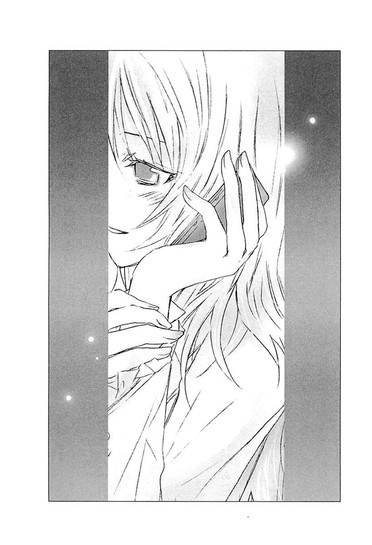

| [野村美月] 文学少女シリーズ15 | |
| 野村美月 | |
| (2015) | |
|
〝文学少女〟と恋する挿話集 ４
野村美月
|
底本データ
一頁17行 一行39文字 段組１段
太字は底本ではゴシック体太字。
「 ◇ ◇ ◇」は底本では１２字下げて「◇ ◇ ◇」。
顔文字の縦書き再現は環境依存。
山括弧は底本では二重山括弧。
「〳〵」は底本では踊り字（くの字点）。
「心葉先輩、大発見です～！」文芸部に飛び込んできた菜乃の〝発見〟とは？『〝文学少女〟見習いの、発見。』、部室にいつの間にか置かれていた薔薇の模様の指輪。これは誰かから遠子へのプロポーズ!?謎を探る遠子とそれに振り回される心葉だったが......『〝文学少女〟と騒がしい恋人たち』ほか、甘くほろ苦いエピソードが満載！美羽、ななせ、遠子の〝その後〟を描いた書下ろしも収録の、物語を食べちゃうくらい愛する〝文学少女〟の恋する挿話集第４弾!!

目次
〝文学少女〟見習いの、発見。──
〝文学少女〟と物思ふ公達──
〝文学少女〟の今日のおやつ ～『かもめのジョナサン』～──
〝文学少女〟と幸福な子供──
〝文学少女〟と騒がしい恋人たち──
アトリエの内緒話──
不機嫌な私と檸檬の君──
〈それぞれの想い〉
美羽～戸惑いながら一歩ずつ──
ななせ～天使へのコール──
蛍～嵐の後の陽の中で──
〈〝文学少女〟の気持ち〉
〝文学少女〟の今日のおやつ ～『桜の森の満開の下』～──
シュークリームの秘密──
〝文学少女〟の今日のおやつ 特別編～『百年後』～──
〝文学少女〟と恋する挿話集４
野村美月
別れのとき、彼は小さな子供みたいに泣いていた。
行かないでくださいと声をつまらせ繰り返す彼に、わたしはそっと首を横に振ることしかできなかった。
いつも傷ついて悩んで立ち止まって、膝をついてうずくまっていた男の子。ときどき意地悪で、けれど優しくて、繊細で、いっぱい文句を言いながら、わたしにたくさんの物語を書いてくれた。彼に対して生まれたこの震えるような気持ちは、隠し通さなければいけないと思っていた。わたしも彼も未熟すぎて、あのまま二人で一緒にいたら彼は歩き出すことができず、わたしも彼を腕に抱きしめて、彼の持つ輝かしい力を封じ込めてしまう。
けれど、彼は泣きじゃくりながらわたしを見つめて、次に会うときまで泣きませんと誓った。持ってゆくはずだった白いマフラーをはずして、彼の首に巻いたのは、その言葉を信じたかったから。
彼の唇が、わたしの唇に重なって──あれは、約束だった。
きっと、また会える。
この狭い門の向こうで、わたしとあなたが、一人で歩ける大人になったとき。
そうしたら、話してあげる。
|
わたしが、どれほどあなたに恋していたか。 |
〝文学少女〟見習いの、発見。
「心葉先輩！ 大発見です～～～～！ジョバンニとカムパネルラは、ホモだったんですよ──！」
九月も残り少なくなり、ほくほくのさつまいもスイーツが美味しくなってきた秋のはじめの放課後。わたしは文芸部の部室に駆け込むなり、興奮して叫んだ。
いつものように窓際の古い木の机で、ノートパソコンのキィを叩いていた心葉先輩は、その手をぎょっとしたように止めた。
「......ホモ？」
ひどく弱っているような、はたまた理解不能な生き物を見るような、なんとも言えない表情で呻く。
わたしは元気にうなずいた。
「はい！ ジョバンニとカムパネルラはホモで──って、あれ？ちょっと違うかも。ホモ──ホモ、ホモサーモン？」
「ホモの鮭？」
「じゃなくて、ホモサーデン？ ホモピアス？ホモピアノ？ホモサイエンス？えーと......えーと......」
首をひねりながら悩んでいると、心葉先輩が頭痛をこらえている顔で、
「............ひょっとして、ホモサピエンス？」
「そうです！ さすがです、心葉先輩！ そのホモサピーです！意味は人類です。文学少女っぽく、賢そうに学名を使用してみました」
「......ホモピアノとか間違えてたら、意味ないと思うけど......」
溜息をつきながら、
「てゆーか、日坂さん。なんでジョバンニとカムパネルラが、ホモサピエンスなのが大発見なの？念のため訊くけど、『銀河鉄道の夜』の登場人物の話をしてるんだよね？」
「はい、宮沢賢治です。岩手出身の大作家です！十二年前、わたしが星の子幼稚園に通う、それは無邪気で愛くるしい園児だった頃、夏休み映画教室で見た『銀河鉄道の夜』では、なんと！ジョバンニとカムパネルラは、二足歩行の猫だったんですよ！なので、わたしは『銀河鉄道の夜』は、ず～～～～っとニャンコ星人の話だと思っていました。なのに今回、読みはじめてみたら、髭がひくひく動く描写も、尻尾がぴんと立つ描写もなくて、ヘンだなーと思ってて気づいたんです。そうかー！ジョバンニとカムパネルラは、ホモだったんだって！」
「だからホモじゃないから！ そこ大事だから、略さないでくれ！」
心葉先輩が、疲れ切ったように肩を落とす。
「日坂さん......きみは、『銀河鉄道の夜』を読みながら、ずぅぅぅぅっと、ジョバンニとカムパネルラは猫か人間かを、考え続けていたわけ」
「それだけじゃありませんよ」
文学少女としての資質を疑われては困ると、慌てて主張する。
「銀河ステーションからはじまる旅は、最高に素敵でした。天の川の水が紫や虹色に輝く光景や、水晶や黄玉の河原に、うっとりです。
そう！ 窓の外に流れる景色が、まるで冷たい流し素麺の味わいに似ていて......ひんやりしていて、喉ごしがよくて、何杯でもつるつるいけちゃうんです。お口の中に、ファンタスティックなミルキーウェイが広がるんです！」
「素麺とミルキーウェイの間には、ニンジンと東京スカイツリーくらいのへだたりがありそうだけど......」
「そこを想像力でカバーするのが〝文学少女〟です」
えへんと胸を反らして断言し、両手を組んで声を震わせる。
「ああ、でも、そんな楽しい旅も、無惨な終わりを迎えてしまうのです。てゆーか、カムパネルラはケチっ子です」
「ケチっ子？」
心葉先輩が、ほけっとする。
わたしは頬をふくらませた。
「だって、ジョバンニがどこまでも一緒に行こうって盛り上がってるのに、ものすごくそっけないし、いきなり消えちゃうし。ジョバンニだけ、列車からいつの間にか降ろされちゃって、はなればなれだし」
「......」
「ジョバンニばっかり、カムパネルラのこと好き好き好きーって感じで、片想いで気の毒です。うぅぅぅ、可哀相なジョバンニ。カムパネルラも、ジョバンニにもうちょっと愛想良くしてあげればいいのに、なにも言わずに一人でどっか行っちゃうなんて、ケチケチですよ。行かないでーって呼び止めても、振り返らずにどんどん先に行っちゃいそうですよ、このヒト」
四月から心葉先輩に延々片想い中のわたしとしては、ジョバンニに同情せざるをえない。
「......はなればなれに、歩いていかなきゃいけないときも、ある」
硬い声に、ドキッとして心葉先輩を見ると、暗い眼差しをノートパソコンの画面に向けていた。
いつもわたしの話を聞いているときにする、苦笑でもなく、呆れ顔でもない。
えらく哀しそうで苦しそうな、いっぱいいっぱいの表情──。
なんだか置き去りにされた子供みたいで、心葉先輩が今にも泣き出しそうに見えて、呼吸が止まる。
も......もしかして、わたしなにか失敗しちゃった？
どどどどどどうしよう！ 一発芸でもして、空気をなごませるべき？
わたしのレパートリーで、最近近所の小学生に一番笑いをとったのは、えーと──。
「かっ、カバの物まねしますっ！」
大声で叫ぶと、心葉先輩がぎょっとしたように顔を上げる。
わたしは、両手の人差し指で鼻の穴の上のほうを、ぐいっと押し上げ、口を大きく開け、歯をむき出しにし、
「グフォフォフォ！ カババーン！」
と、言いながら、鼻息を飛ばした。
心葉先輩は目をむいたまま、ほんの少し青ざめて、わたしを見ていたけれど、やがて、
にこり。
と、微笑んだ。
よかった、笑ってくれた！
わたしの心も、ぱぁっと明るくなったとき、
「日坂さん、お願いがあるんだ」
「はい、なんでしょう」
にこにこと笑顔で語る心葉先輩。
「原稿に集中したいんだけど、協力してくれるかな？」
「では！ お茶を淹れて、肩をおもみして」
心葉先輩は、ますますきらきらした爽やかな笑顔で、優しく言った。
「出てってくれる？ 今すぐ」
◇ ◇ ◇
「うぅ、ホモサーモンがいけなかったのかな。素麺とミルキーウェイのマッチングが、季節はずれだったのかな。粟ぜんざいとかにしとけば良かったのかな。それとも、カムパネルラをケチ呼ばわりしたのがマズかったのかな。カバの一発芸が、心葉先輩の笑いのツボに合わなかったのかな」
「......すべてがいけなかったんじゃない」
夕暮れの並木道。心葉先輩に部室から追い出されて愚痴るわたしに、親友で氷雪系美少女の瞳ちゃんは、すっぱり断言した。
「瞳ちゃんも心葉先輩も冷たいよぉ。カムパネルラみたいだよ～。少しはジョバンニに優しくしてよぉ～」
「無理」
「はぅっ。なにその即答」
瞳ちゃんが長いまつげをゆっくり伏せる。
さっき文芸部で見た心葉先輩の儚い表情に、目の前の瞳ちゃんのそれが、一瞬、重なった。
「......だって、カムパネルラは死んでるから。なにも、できないよ」
硬い声で、ぼそりとつぶやく。
わたしはびっくりして叫んだ。
「う、嘘っ！ あのあとカムパネルラは、助かるんじゃないの？ええーっ、だって、カムパネルラが死んじゃったなんて書いてないし！」
「カムパネルラがザネリを助けるため、川に飛び込んで、そのまま見つからないって......大騒ぎしてたでしょ」
「そうだけどっ、ほらっ、その、これは童話だしっ、カムパネルラは生きてたってオチだよ、きっと」
瞳ちゃんがまつげを伏せたまま、乾いた声でつぶやく。
「──落ちてから四十五分もたってるから、もう駄目です......って。カムパネルラの父親も言ってるよ」
慌てて、『銀河鉄道の夜』を鞄から出して、ページをめくってみる。
──もう駄目です。落ちてから四十五分たちましたから。
頭に、東京スカイツリーが落ちてきたような衝撃だった。
確かに、言ってるよ！
うわあああああああ、駄目だよ、お父さん！たった四十五分で、息子の命をあきらめちゃ！
そのあと、ずっと仕事で留守にしていたジョバンニのお父さんが帰ってくるという知らせがあって、なんとなく前向きな雰囲気で物語が終わるので、うっかりカムパネルラは助かると思ってたんだ。
けど、もしカムパネルラが死んじゃったのなら──。
「じゃあ、ジョバンニが銀河鉄道で会ったカムパネルラは、ゾンビだったの!?『銀河鉄道の夜』は、ホラーだったの！うわぁ、うわぁぁっ、オカルト的新解釈だよ、瞳ちゃん！」
シリアスに黙り込んでいた瞳ちゃんが、かくっとし、めいっぱい呆れたように、わたしを見る。
「そこまで飛躍するあんたの頭の中身の方が、カオスでオカルトだよ。今の、井上先輩には、絶対言わない方がいいよ」
冷ややかに告げたあと、また憂鬱そうな目になり、ぼそっとつぶやいた。
「だからさ......カムパネルラは......ジョバンニを連れていけなかったんだよ」
◇ ◇ ◇
家に帰ってから、『銀河鉄道の夜』を頭からもう一度読んでみる。
うーん、しっかり読んでいるつもりでも、見逃していることが結構あるなぁ......。
カムパネルラの言動も、裏の意味を考えながら読むと、そんなに意地悪でも冷たくもないのかもと思えてくる。
もし、わたしがカムパネルラだったら？
もし、川で溺れて死んじゃって、もうみんなの元へは帰れないとわかっているのだったら、旅立ちの前にどうしただろう？
なにをしたいと考えるだろう？
うぅ、わたしが、人生の終わりにしたいこと。
それって究極の選択だよ～！
ああ、でも、この世の最後の思い出に、心葉先輩とデートくらいしておきたいかも。
そう、ジョバンニとカムパネルラみたいに、二人で列車に乗って、銀河ステーションを出発して、水晶細工のような銀杏の木の広場を、手を繋いで歩いたり、アルビレオの観測所で、静かにくるくる回る、青と黄色のふたつのすきとおった球を、寄り添って眺めたり。
星空が広がる夜色の窓に、わたしと心葉先輩の横顔が、ぴったりくっついて浮かんでいて、
──わー、はくちょう座ですよ。心葉先輩。
──そうだね、綺麗だね。でも、ぼくの目に映る日坂さんのほうが、もっと綺麗で可愛いよ。
なんて、ムードが盛り上がって、心葉先輩の手がわたしの手に重なって、心葉先輩のほうを向いたとたん、心葉先輩の唇が正面から近づいてきて、心葉先輩からわたしに、キ、キスとかしちゃったりして～～～～～～。
うああああああ、いいな、いいなーっ。
そんな時間が過ごせたら、もういつぽっくり逝っちゃっても悔いはないよ──っ。
って──あっ、わたしがカムパネルラなら、もう死んでるんだっけ。
うむむむっ、いくら心葉先輩と心が通じ合っても、そのあとお別れしなきゃいけないのは、やっぱり嫌だなぁ。
しかも、ジョバンニは、カムパネルラが亡くなったことを知らないから、きらきらした目で、無邪気に話しかけてくるし。
──カムパネルラ、また僕たち二人きりになったねえ、どこまでもどこまでも一緒に行こう。
うわあああ、わたしだったらジョバンニの顔を見ただけで、泣いちゃいそうだよ～。
美しい旅の最中、ジョバンニに対して、カムパネルラはそっけない。
けど──けど、もしかしたら、カムパネルラは感情があふれ出しそうになるのを一生懸命に、こらえていたのかな。
ジョバンニとはなればなれになることが、寂しくて哀しくてたまらなかったのかな。
そんな風に考えはじめたら、わたしの胸もひりひりしてきて、ページをめくるたびに切なくて、涙がにじんできた。
──カムパネルラ、僕たち一緒に行こうねえ。
ジョバンニの呼びかけに答えずに、消えてしまったカムパネルラ。
だって、ジョバンニとは、もう一緒にいられないから。
なのにどうして、カムパネルラの最後の旅の道連れは、ジョバンニだったんだろう。
残された最後の時間を、つらくなるってわかってたのに、ジョバンニと過ごしたのだろう。
ジョバンニにお別れを言うため？
本当にそれだけ？
もっと、カムパネルラについて考えて。
カムパネルラの心に近づいて、寄り添って。
もし──もし、わたしが、カムパネルラだったら。
消えてゆく瞬間、カムパネルラがどんな顔でジョバンニを見送ったのか、脳みそを絞り上げるようにして、〝想像〟する。
泣きそうな顔？
苦しそうな顔？
ううん、違う。
きっと──。
星のまたたきのような白い光の中に、カムパネルラの顔がゆっくり浮かんでゆく。
ほっそりした立ち姿の、賢そうな少年──。
胸が、切なさと愛おしさで、破裂しそうになって。
「そっかぁ......わかった」
◇ ◇ ◇
翌日、わたしは放課後が来るのが待ちきれなくて、昼休みに文芸部まで走った。
「心葉先輩、大発見です！」
ドアを開け、笑顔で飛び込む。
ちょうどノートパソコンを開こうとしていた心葉先輩が、
「今度はなに」
と、あきらめの口調で問う。
「カムパネルラは、ジョバンニのことが大好きだったんですよ！」
心葉先輩のすぐ側まで駆け寄って、晴れ晴れと叫ぶ。
心葉先輩が立ったまま目を丸くし、息をのむ。
「ジョバンニの片想いじゃなかったんです！ 離れていても、カムパネルラとジョバンニは、ずっとお互いに特別な相手だったんです！だからカムパネルラはあの世へ行ってしまう前に、他の誰でもないジョバンニに会いたかったんです。会ったら、寂しくてたまらなくなるってわかっていても、それでも残された時間をジョバンニと過ごしたいほど、大好きだったんです」
夢中で語りまくるわたしを、心葉先輩が驚きの表情で見つめている。
息をすることを忘れたみたいに、身じろぎもせずじっと。
「きっと、おとなしいジョバンニのことが、カムパネルラは心配で、もう自分は一緒にいられないから心配で──最後に励ましたかったんですよ」
輝く星の向こうへ、消えてゆくカムパネルラ。
ジョバンニに伝えたかった言葉。
わたしはカムパネルラの気持ちで、優しく告げる。
「ぼくがいなくても、きみは大丈夫だよ──って」
心葉先輩が、また少し目を見開く。
「きみは、一人で歩いてゆけるよ──って」
寂しそうな目で──けど、強く優しく微笑みながら。
カムパネルラは、大好きなジョバンニに、そう伝えたかったんじゃないか。
心葉先輩の瞳が、唇が、頬が、カムパネルラを前にしたジョバンニみたいに、切なさを帯びる。震えるような眼差し。
わたしは右手をあげて、天井を指差した。
「だから！ 今もジョバンニのことを空から見守っています！いつかまた会うときまで頑張れって！ジョバンニを応援しています」
一秒、
二秒、
三秒の間、
心葉先輩は動かなかった。
胸を打たれているような顔で、わたしを見ていた。ううん、もしかしたら、わたしの指の先にあるなにかを──。
それから、ゆっくりとわたしのほうへ右手を伸ばし、頭に乗せた。
やわらかな感覚。
びっくりして、瞬時に硬直するわたしの髪を、心葉先輩が、ほわはわと撫でる。
こ、これは、合格ということでいいの......かな？
よく考えたねって、褒めてくれている......のかな？
目の奥が、ぐるんぐるん回る。
あわわわわわ、心葉先輩に、なでなでされてるよ～～～～！
ただでさえ猫っ毛で絡みやすい髪が、ここまで夢中で走ってきて、ますます乱れてるのに。トイレに寄って、きちんととかしてくれば良かった！
はぅぅぅ、動けない。
い、息が苦しいっ。心臓が、弾け飛びそう！
ああ、でもでも、ちょっと──気持ちいい、かも。
頭を撫でる心葉先輩の手が、優しくて──心葉先輩の眼差しもとろけそうにやわらかで、あたたかなお湯につかっているような感覚に、だんだんぽーっとしてきて、
「......心葉せんぱぁい、気持ち、いいです」
うっとりとつぶやいた。
とたんに心葉先輩がハッとし、
「ご、ごめん！」
わたしから手を放し、飛び退いた。
「本当にごめん。つい」
真っ赤になっている心葉先輩のほうへ身を乗り出し、
「いいえ、もっとさわってくださいっ。今なら、わたしのガードはゆるゆるで、上から下まで、さわりほうだいです。心葉先輩がさわってくださったこの髪は、もう一生洗いません」
力を込めて断言すると、心葉先輩は慌てたように目をむき、
「やめてくれ！」
と叫び、
「日坂さん、もうすぐ昼休みが終わるから、教室に帰ったほうがいいよ！ほら、急いで」
結局、わたしはまた部室から追い出されてしまったのだった。
この話を瞳ちゃんにしたら、
「......一生洗わなかったら、髪、臭うよ」
と、冷たく言われた。
そして、同じ日の放課後──。
「あははははっ、相変わらずね、見習いさん。心葉くんの慌てっぷりを、あたしもぜひ拝見したかったわ」
音楽ホールの最上階のアトリエで、卒業生の麻貴先輩は、紅茶のカップを片手に大ウケしていた。
もうじき出産ということだけど、レースを重ねたゆったりした服を着ているせいか、やっぱりおなかは目立たない。けど、こんなに笑い転げたら、赤ちゃんもびっくりしてるんじゃないか。
心葉先輩は『日坂さんみたいな、怖い者知らずのうっかり者、麻貴先輩にぱっくり食べられちゃうよ』と、彼女に近づくことを禁じたけれど、わたしはメロンやマンゴーやシフォンケーキにつられて、アトリエのソファーで、何度か茶飲み話をしていた。
「うぅ、せっかく良い雰囲気だったのに。心葉先輩はかたくなすぎです。あぁ、でも、そこも素敵なんですけど」
「はいはい」
麻貴先輩が呆れたように手を振り、色っぽい目で、わたしを見た。
「おたくは、口数を半分に減らしたほうが、恋愛的に有効なんじゃない？ちょっとは進展してくれたほうが、あたし的に楽しいんだけどなぁ。心葉くんも、おたくがしとやかにしてたら気になって、うっかりときめいたりしちゃうわよ」
「ええっ、本当ですか？」
想像して頬がゆるみそうになったけど、首を横に振る。
「でも、ダメです。わたしが黙っていると、心葉先輩は寂しそうだから」
麻貴先輩が意外そうな顔をする。
「そうするとつい口が動いちゃうんです。えへっ、わたしがなにかしゃべってないと、部室が、しーんとしちゃうから。だから、心葉先輩が寂しいより、わたしが心葉先輩に怒られるほうがずぅぅぅっとマシです。もう心葉先輩の嫌みにも、つめた～い目にも慣れましたから」
入学したばかりの頃、よく寂しそうな目で、パソコンの画面や、部室の窓のほうを見ていた。
儚げで、苦しそうで。わたしまで、胸が痛くなってしまって。
だから、一生懸命話しかけた。勢いがつきすぎちゃって、呆れられたり怒られたりしたけど。
目をむく心葉先輩や、茫然とする心葉先輩や、目を尖らせる心葉先輩の顔が次々浮かぶ。
そう、黙ってそっぽを向かれたり、動かない背中を見ているより、ずっと素敵だ。
麻貴先輩は、途中から優しい目でわたしを見ていた。
「......ねぇ、抱かせてくれる？」
「へ!?」
ソファーでのけぞるわたしのほうへ、大きく身を乗り出し、頭をそっと抱え込むようにして抱きしめる。
「ま、ままままま麻貴先輩、それはちょっとマズイです」
「おたくにこれまでしてあげたことに対する〝代償〟は、どれくらいたまってたかしらね」
「ぐ──。そ、それは。でも、わたしには心葉先輩とゆー心に決めた人がっ」
「ふふ、ふわふわ。ひよこみたい」
麻貴先輩が、わたしの頭に頬ずりし、匂いをかぐ。
わたしの三倍ぐらいありそうな胸が、わたしの顔に押しつけられて──うわあああ、ぱっくり食べられてしまうんだろうか。
手をぱたぱたさせていたら、麻貴先輩がわたしから体を離した。
そうして、真っ赤な顔でうろたえているわたしを、口元をにやにやとゆるめて、それは楽しそうに眺めながら言った。
「こんな風に──心葉くんに試してみるのも、効果有りかもよ。あ、でも、おたくにはまだ無理そうね」
「胸を見ながら言わないでください！ これからおっきくなるんです。そう、スイカくらい！」
「友人が、高校一年生のときから三年間そう主張していたけれど、ぺたんこのままだったわねぇ」
「うっ」
声をつまらせると、また楽しそうに、
「そう、その友人が、こんなことも言ってたわ。心葉くんは意地悪なくせに感じやすくて、すぐ落ち込んじゃうから......心葉くんの彼女になる子は、心葉くんに冷たくされたくらいじゃ、めげない子がいいわ──って」
懐かしそうに。いつもより、やわらかな、あたたかな目で、麻貴先輩が続ける。
「心葉くんがそっぽを向いても、口をきいてくれなくても、ひるまず向かっていって、心葉くんの手を無理矢理つかんで、外へ引っ張り出してくれる──強くて明るい女の子がいいわって。そういう子ならきっと、心葉くんも悩んでる時間なんかなくなっちゃうわって」
わたしは、ドキドキしながら尋ねた。
「ご友人って、どなたですか......？」
もしかしたら。
麻貴先輩は、ふっと口元をゆるめた。
「さあ。カムパネルラだったかしらね」
そうして、壁のほうを見上げる。
そこには一枚の絵があって、カーテンで隠されていて、中は見えないのだけど......。
──遠子の絵よ。
いつか聞いた言葉がよみがえり、また、ドキンとする。
麻貴先輩はまだ、壁を見上げている。
静かな、優しい眼差しで。
誰のことを......思い出しているんだろう、麻貴先輩は。
そして、わたしが『銀河鉄道の夜』の話をしたとき、心葉先輩は......。
空へ旅立ったカムパネルラ。
地上に残されたジョバンニ。
それでも、カムパネルラは今も遠い場所から、ジョバンニを想っている。
だから寂しそうな目をしたジョバンニも、カムパネルラの記憶を胸に抱いて、一人で頑張っている。
わたしの入る隙間はないのかもしれないけれど......。
胸の奥が軋むように痛んだ。それでも、わたしはからりと笑って、立ち上がった。
「栗のシフォンケーキ、ごちそうさまでした！そろそろ部活へ行きます。心葉先輩が、可愛い後輩を追っ払って悪かったな～って反省して、落ち込んでるかもしれませんから」
麻貴先輩も、したたかな笑顔でわたしを見送る。
「そう、進展があったら教えてね。おたくが、あの心葉くんを、どうやって陥落するか、楽しみにしているわ」
「はい、任せてください。がんがん攻略してみせます」
明るく宣言し、アトリエを後にする。
いつか、カーテンの向こうの〝文学少女〟と向き合う日が来るかもしれない。
そのとき、わたしはどんな顔をしているんだろう。
けれど今は、どうしたら心葉先輩に笑ってもらえるかを考えよう。
心葉先輩が寂しい目をせずにすむように、悩んでる暇なんてないほど、楽しく過ごせるように。
そうだ、もうじき文化祭だ。文芸部は去年、劇を上演したって聞いている。助っ人で芥川先輩も出演して、心葉先輩との熱い絡みが大好評だったって。
わたしも、心葉先輩と舞台で恋人役とかできたら素敵だ。
二人で、カフェをするのもいいなぁ。
よしっ、心葉先輩に文化祭のこと話してみよう。
ぜひ、今年も参加しましょう！ って。
そんな風にあれこれ計画を立てて、うきうきしながら、わたしは大好きな先輩がいる文芸部へ向かった。
〝文学少女〟と物思ふ公達
あれは確か、一年生の文化祭の出来事。
「心葉くん、わたしたち、もう三時間も二人きりね」
ギシッ......と音がし、遠子先輩が椅子の背に顔を乗せ、うるんだ声でつぶやいた。
「......そうですね」
ぼくは、うつむいたまま答える。
「雨もやまないし」
「......そうですね」
「心葉くん、クロスワードパズル、楽しい？」
「......それなりに」
石狩鍋の材料は？ □ケ──ここはサだな。
ＨＢのシャーペンで「サ」と書き込んだとき、隣で遠子先輩が焦れたように、がたがた椅子を鳴らした。
「わたしは暇なのよ！ 暇なのよ！ 暇なのよぉぉぉぉぉっ！」
パイプ椅子の背もたれの部分を抱え、長い三つ編みを揺らして、子供みたいに駄々をこねる。
場所は、いつもの部室ではなく、普段使われていない教室だった。そこにコの字型に机を配置し、文芸部から運び入れた古い本を並べてある。
「どうして文化祭なのに、お客さんが全然来ないのっっっ！昨日から張り切って文芸部秘蔵の名作の数々を展示したのに！『古事記』『日本書紀』からはじまって『万葉集』『竹取物語』『土佐日記』と、わかりやすく年代順に並べて、可愛いイラスト入りのポップまで作ったのよ！なのに、三時間も、教室の前を通り過ぎてゆく靴音や楽しそうな笑い声をむなしく聞くだけだなんて──！今じゃ靴音も聞こえなくなっちゃったわ！」
「仕方ありませんよ、ここは校舎のどん詰まりですし、他の教室とも離れてますからね。わざわざ『日本名作文学展』なんてものを、うかれて見に来る物好きな人なんて、遠子先輩くらいです」
窓にかかっているのは、□□イ□ド──うーん、ブラインドかな。
「うぅぅ、そうやって他人事みたいな、しらっとした顔で、ずぅぅぅぅっとクロスワードパズルを解いてるし」
遠子先輩が不満そうに頬をふくらませる。
「お客さんが来ないんですから、クロスワードパズルくらいしかすることがないじゃありませんか」
「いいえ、クロスワードパズルじゃ、おなかがいっぱいにならないわ」
決然と言い放ち、椅子から降りると、急ににこにこと頬をゆるめて、ぼくの顔を脇からのぞき込む。
「ね、心葉くん、暇ならなにか書いて」
「クロスワードパズルをしてるから暇じゃありません。よかったら、このページ埋まりましたから、食べますか？」
「いらないもん！ 字が書いてあれば、なんでもいいってわけじゃないんだから！わたしはご覧の通りの正統派文学少女なのよ！グルメなのよ！」
遠子先輩が、ぷんぷん頬をふくらませる。
後輩にまで毎日のおやつを要求する食いしん坊の雑食家のくせに、グルメだなんて呆れる。
「そうですか」
相手にせず、クロスワードパズルの空白を埋める作業に戻ると、遠子先輩はしょんぼりし、わざわざ窓辺までとてとてと歩いてゆき、外を見ながら黄昏れてみせた。
「たった一人の後輩が......冷たい」
カーテンをいじりながら、溜息をつく。
「思い出に残る楽しい文化祭になる予定だったのに、こんな訪れる人もいない校舎のはしに島流しにされて、寒くてひもじくて、後輩は頼みにならないし......これはなにかの陰謀なのかしら」
「島流しになったの、遠子先輩が期間内に、教室使用の申し込みをし忘れたからですよね」
「う」
「実行委員を拝み倒して申請書を押しつけたけど、残っていたのが、この部屋だけだったんですよね」
「だ、誰にでも失敗はあるわっ。それに、忘れていたわけじゃなくて、どうしたら文芸部の存在を、みんなにアピールできるかしらってプランを練っていたのよ。本当よっ。ほら、この手描きのイラストに、わたしの本気があふれているわ」
遠子先輩が展示物にダダッと駆け寄り、ポップをかかげる。
カラーペンと色鉛筆で、何故か埴輪の絵が描いてあるが、無表情の宇宙人にしか見えない。また別のポップには、百人一首の札にあるみたいな十二単のお姫様やお坊さんが描いてあるけれど、こちらもとっても残念なことになっていた。
「はぁ......それって本気百パーセントの絵だったんですね。手抜きとかじゃなく......」
「な、なに？ なんなのっ？ その哀れむような目は。先輩に対する尊敬が感じられないわ。ひどい、ひどい、ひどーい」
ますます頬をふくらませ、また窓辺で背中を向けて、いじけまくる。情緒不安定？いや、単に暇なんだな、きっと。......えーと、お正月にするのは、□ク□□イ──福笑いかな？
「くすん、わたしは世界一不幸な先輩だわ。外は雨だし、これでフォークダンスまで中止になったら、立ち直れないわ」
「フォークダンスになんか、参加するんですか？」
そういえば、昨日から天気のことを気にしていた。明日晴れるといいわねぇとか、なんとか。
窓の向こうは薄曇りで、細かな雨が降っている。
遠子先輩は、明るい表情で振り返った。
「もちろんよ！ フォークダンスは、文化祭のメインイベントよ。心葉くんも参加するでしょう」
そうだろうか、文化祭でフォークダンスをやるなんて、あまりきいたことがない。普通、体育祭とかキャンプでやるものなんじゃ。
どっちにしろ、フォークダンス自体、全く興味はないけれど。
「ぼくはパスです」
「ええっ、どうして」
「高校生にもなって、知らない人と手を繋ぐなんて嫌じゃないですか」
てゆーか、オクラホマミキサー......あの踊りも、はたから見たら相当恥ずかしい。手をとって、腰をかがめて挨拶するところとか特に。
遠子先輩がムキになって反論する。
「フォークダンスのない文化祭なんて、サンタクロースの飾りが載っていないクリスマスケーキのようなものよ！憧れのあの人と、あと何人で手をふれあうことができるのかしら？あと三人、あと二人......と、心の中で、ドキドキしながらカウントしてゆくの。やっと手と手がふれた瞬間は、心臓が飛び上がりそうになるのよ」
なにやら甘い夢を見ているようで、天井を見上げてうっとりする。
「憧れのあの人なんて、いるんですか」
「えっ！ そ、それは......」
遠子先輩が声をつまらせ、わたわたする。
「わ、わたしのことじゃなくて、フォークダンスとは、そういうものよっていうたとえよ」
「でしょうね」
「あー、なにそのさめた目は。わたしだって、好きな人くらい」
「いるんですか？」
「う」
また声をつまらせる。
「す、好きというかその......それを決めるのは、実はすごぉぉぉく難しいことなのよ。だって好きにも、いろいろな種類があるでしょう？友達みたいに好きなのか、家族みたいに好きなのか、それとも運命の恋なのかなんて、簡単にはわからないわ。わたしは奥ゆかしい文学少女だから、恋にも慎重なんです」
「どっちでもいいです」
歌舞伎で切るのは？ □エ──淡々と「ミ」を書き込む。
「ぅぅ、どうしてきみは、そう無気力なの？ フォークダンスもパスなんて言うし。もしかしたら、フォークダンスがきっかけで、恋が芽生えることだってあるかもしれないじゃない？そうだわ、今日の三題噺のお題はフォークダンスにしましょう！〝フォークダンス〟〝先輩〟〝約束〟、ねぇ、素敵でしょう？うーんとあまーいお話を書いてね、制限時間はきっかり五十分──」
めずらしくお題がまともだ。
けど、ぼくはうつむいたまま答えた。
「原稿用紙を持ってきていません。創作意欲もわきません」
銀色のストップウォッチを、今まさに押そうとしていた遠子先輩が、ぷっと頬をふくらませる。
「ならわたしが、創作意欲が泉のようにわいてくる、ロマンチックなお話をしてあげるわ。そうね、憧れの先輩のお話にしましょう」
憧れの先輩？
さっき、憧れの人なんかいるんですかと訊いたら、わたわたと否定していたのに？
遠子先輩は、展示してある古典作品の中から一冊の本を手に取り、にっこりした。
「『堤中納言物語』は、平安時代後期以降の十編の短編を集めて作られた物語集よ！収録されている物語は、作者も書かれた年代も、ばらばらで、鎌倉時代の頃の作品もあって、バラエティに富んでいるのよ！
一体誰がこの物語をひとつにまとめたのか？何故『堤中納言物語』というタイトルがつけられたのか？それは今も謎のままなの。
一説には、当時、書籍を紙に包んで保管する習慣があって、この物語も包んだ紙の上に『つつみ中物語』とか、『物語つつみ』とか『つつみ物語』なんて書いてあったので、『堤物語』『堤中納言物語』となったんじゃないかなんて言われているわ。
物語を『つつむ』なんて、素敵よね」
表紙が色あせた古い本を、大事そうにぎゅぅっと抱いてつぶやく。それから目を輝かせ晴れやかに語りあげる。
「そう！ 『堤中納言物語』は、まるで柿の葉で包んだ、お寿司のようね！
酸味のきいた酢飯の上に、鯖や鮭の切り身を載せて、清々しい緑の柿の葉でくるむのよ！柿の葉には保存効果があって、こうすると日持ちするの。生活の知恵ね。
緑の包みを開けていただくと、お寿司のひんやりとした酸味と、柿の葉のさわやかさが舌の上に無限に広がり、物語の世界へ誘ってくれるのよ。
浮気な中将が、意中の姫を闇に紛れてお屋敷から連れ出して、いざ口説こうとしたら、とんでもない失敗をしでかしていた『花桜折る中将』や、お父様を亡くして、ひっそりと暮らす美人姉妹のお姫様たちの元へ通う、少将と権少将が、それぞれの相手を間違えてしまった『恩はぬ方にとまりする少将』とか。
腹違いの姉姫と貝合わせで勝負をすることになったけど、裕福な姉姫の家とは違って、立派な貝を手に入れることができず途方にくれている薄幸の姫を、事情を知った少将が、足長おじさんになって助けてあげる『貝合』とか。
どれも、当時の人たちは、こんな風に生活していたんだなぁとか、普段こんな会話を交わして、こんなことを考えていたんだなぁって、柿の葉の香りと一緒に、目の前に、ふんわりと浮かんでくるようなところが、すごく味わい深くて、ドキドキしてしまうのよ。一般的には『虫愛づる姫君』なんかが有名だけど、わたしの一押しは、『逢坂越えぬ権中納言』なの！」
澄んだ明るい声で、断言する。
「主人公の権中納言は、気品と教養にあふれる男性で、帝の覚えもめでたくて、女房にもモテモテなの。彼が宮中に出仕すると、みんなが彼に注目して、憧れの眼差しを送ってしまうような、当代きっての貴公子よ。
同じように、去年、この学園にも、藤の君と呼ばれる、女の子に大人気の、それは素敵な先輩がいたのよ」
てっきり憧れの人というのは本の中の話かと思っていたら、突然実在の人物が登場したので、ぼくはクロスワードパズルの空白を埋める手をとめた。
藤の君？
なんだ、その少女漫画にでも出てきそうな、きらきらしいネーミングは。
遠子先輩は、目をうっとりとうるませて、
「背がすらっと高くて、瞳が涼しげで、首筋もほっそりして、横顔は愁いに満ちていて寂しげで、見ているだけでたまらなく胸がしめつけられてしまうの。
性格も、とっても上品で優しくて控え目で、それでいて芯が通っていて、声もすっきりと爽やかで、本当に平安絵巻の世界から抜け出てきたような方だったのよ」
平安絵巻の世界って......ムーミンみたいな下ぶくれの顔の、糸目の男しか思い浮かばないんだけど......。
遠子先輩はすっかりひたって、頬まで染めている。
「藤の君にはファンクラブまであって、伝説的な学園の王子様だったのよ」
王子様って......。絶対につけられたくないあだ名だ。
「わたしね、ある日学園の図書室で、本棚の最上段にあった『狭衣物語』を、つま先立ちで取ろうとしていて、よろけてしまったの。そうしたら、偶然後ろを通りかかった藤の君が、優しく支えてくれて、
『危ないよ、気をつけて』
って、涼やかに微笑んだの、そうして、
『この本でよかった？』
って、本をすっと抜き取って渡してくれたの～～～～！」
語尾が波打っている。
シチュエーションが恥ずかしいほどベタだ。
「それ以来、わたしと藤の君は、親しく言葉を交わすようになったの。藤の君のファンに睨まれてしまうから、たいてい図書室の本棚の陰で、ひっそりとだったけれど。
『遠子ちゃんと話していると、楽しいな』
なんて、目をじっと見つめて、ささやかれてしまったりして、きゃっ」
......ひょっとして妄想？
ばかばかしくなってきて、スルーしようとクロスワードパズルを再開したとき。
「そう、あれは太陽がまぶしい一学期の終わりだったわ。藤の君に、両手を強く握られて、
『一緒に、伊豆に行ってくれる？』
って、四泊五日の旅行に誘われたの」
「え！」
うっかりシャーペンを、落としそうになる。
「『遠子ちゃんが、必要なんだ』って」
「い、行ったんですか!? 伊豆に？」
遠子先輩が目を宙にただよわせたまま、うなずく。
「ええ。四十人分のお食事を作ったり、お洗濯をするのは大変だったけれど、藤の君の頼みですもの、断れないわ」
「へ？」
四十人分の、食事と洗濯？
「バレー部の合宿で、臨時マネージャーを募集していたの。藤の君はバレー部のエースアタッカーだったのよ」
「合宿？」
旅行と合宿は、違うんじゃ。
「ファンクラブの子たちが応募に殺到して、バレー部でも困っていたらしいわ。それで、信用のおける知り合いに声をかけることにしたんですって」
「......遠子先輩、料理......作れたんですか」
「わたしの他に、マネージャーさんが三人いたから、わたしはアシスタントに徹したわ」
えへんと胸を張るけれど、結局なにをどうアシストしたのか、具体的に語られないままだった。
「けど、当日、藤の君のファンの子たちが合宿先の海辺に押し寄せて、女子バレー部の先輩たちと喧嘩になってしまったの」
うわっ。
「男子バレー部のキャプテンがかんかんに怒って、ファンの子たちを『練習の邪魔だ！帰れー！』って、追い払っちゃったのよ」
それは怒るだろう。
「男子部のキャプテンは身長が二メートルもあって、眉をぐっと上げてしかめっつらをすると、鬼のお面を被ったみたいに怖かったから、ファンの子たちも、きゃーっと叫んで、逃げちゃったわ。けれど、藤の君は、そのせいでキャプテンから叱責されてしまったの」
遠子先輩が、しゅんとする。
「『バレー部は、いつからアイドル事務所になったんだ。おまえが誰にでもへらへらして、王子様呼ばわりされて、いい気になってるから、バカ女どもが調子に乗るんだ。今度あいつらが騒ぎを起こしたら、元凶のおまえも一緒に帰ってもらうからな』って。
藤の君は、すごぉぉぉく落ち込んで、可哀相だったわ」
......自業自得だと思うけど。
まぁ、本人が好きで女の子をはべらせたわけじゃないんだから、気の毒といえば気の毒だけど。
男子部のキャプテンの言葉は、男子部員たちには、
『そうだよな、藤がいると、練習にならないよな』
『遊びで来てんじゃねーんだからさ！』
『もっと言ってやってください、キャプテン』
と、支持されたが、女子部からは大ブーイングだったという。
その晩、女子の部屋では、男子部のキャプテンの悪口大会だったらしい。
「わたしの泊まったお部屋は、大部屋からはみ出した六人組の小部屋だったのだけど、みんな、男子部のキャプテンの伊丹さんに、ものすごく腹を立ててたわ」
『自分がモテないからって、藤の君の人気をねたんでるんだよ！』
『そうそう！ 前から藤の君に、バレー部をやめて演劇部にでも入部したらどうかとか、嫌みばっかりでさ』
『藤の君がタオル貸そうとしたら、女どもに睨まれるからいらん、って断ったんだよー。感じ悪ーい！』
『自分は、バレーバカマッチョで、山道で殺人鬼に間違われそうな、凶悪な顔だからって！』
『コートでコケて、顔面強打しちゃえ！』
ちょっと言いすぎなんじゃ......。女の子って怖い。会ったこともない男子部のキャプテンに同情してしまう。
ひとしきり男子部のキャプテンをこき下ろすと、今度は藤の君の心情を思いやり、あちこちで溜息がこぼれた。
『藤の君、かわいそ！』
『伊丹に叱られたあと、ずっとしょんぼりしてたね』
『あたしが慰めてあげたーい！』
『あたしだって！』
『あたしも！ 藤の君を、ぎゅぅぅっと抱きしめてあげたい』
『げっ！ あんた、なに言ってんの！』
『でも、わかるー！ 今日の藤の君ってば、弱々しくて頼りなげで、守ってあげたいって感じだったもん』
『やだ、夜這いとかやめてよ。今度騒ぎを起こしたら、藤の君、家に帰されちゃうよ』
『そっちこそ、抜け駆けはなしだからね』
お互いに牽制しあいながら、眠りについた。
すっかり夜がふけた頃。
『遠子ちゃん......遠子ちゃん......』
しっとりとした闇の中、切ない呼び声で、遠子先輩は目を覚ました。
すると、藤の君が思いつめた哀しそうな眼差しで、遠子先輩を見おろしていた。
「ちょ、ちょっと待ってください」
ぼくは話を断ち切った。
「これ、夢オチですか？」
「安心して、現実にあったことよ」
遠子先輩が、軽やかに断言する。
「もっとも、わたしも夢じゃないかと思って、びっくりしてしまったのだけど。
知ってる？ 心葉くん？ 平安時代には、夢の中に誰かが出てくるのは、夢を見ている人がその人を想っているのではなくて、夢に出てきた相手のほうが、夢を見ている人を強く想っているせいだと言われていたのよ」
「そうですか、そんな豆知識はどうでもいいです。藤の君が夜中に遠子先輩の枕元に現れて、それからどうなったんですか？他の同室の人たちは、起きなかったんですか？」
焦って尋ねると、
「それがね。周りを見たら、部屋の中にはわたしと藤の君しかいなかったの」
「どうして！ 他の五人は、どこに消えちゃったんですか？」
「みんな、藤の君のお部屋に行ったみたいなの」
「はぁ？」
遠子先輩が、苦笑する。
「みんな、それぞれ藤の君のところへ忍んでいっちゃって、藤の君は困って、わたしのところへ逃げてきたんですって」
「......」
それって、夜這い......？
女の子から......！ うーん......。
「藤の君、またキャプテンに叱られたらどうしようって、弱りきってたわ。なんでみんな自分なんかに騒ぐんだろうって、本当に気の毒なくらいしゅんとしていて。
自分なんか、好きな人にずぅっと片想いで、全然相手にしてもらえないのにって......」
「好きな人？」
遠子先輩が、いたずらっぽい目になる。
「そう、『逢坂越えぬ権中納言』は、モテモテの貴公子が、一人のつれない姫君に恋をする話なの。藤の君にも想う人がいたのよ」
「......そうだったんですか」
ちょっと気が抜けた。
けど、眠っている女の子の部屋へ忍び込んで起こすことはないんじゃないかと思う。
王子様なら、そんな行為も許されるんだろうか。
前にぼくが、部室の机で『ごはん......もっと』と、つぶやきながら眠っている遠子先輩の鼻をつまんで起こしたら、『せっかく、夏目漱石がわたしのために書きおろしてくれた恋物語を食べられるところだったのに！ああ、あの生原稿......金色に光り輝いていて、金木犀のお酒のような甘い香りがしていたわ。ひどいわ、心葉くん』と、一週間も根に持っていたのに。
遠子先輩は、楽しそうに権中納言の話をしている。
「中納言の意中の姫宮は、どれだけ切ないお歌を贈っても、返事もしてくれないの。中納言は、なかなか彼女に近づくことができなくて、それでも、どうしても想いはつのって、ある月が輝く晩、彼女に会いにゆくの。
姫宮の乳姉妹の、宰相の君に、真剣な気持ちを語って、姫に会わせてくださいと訴えるのよ。中納言は上品で若々しくて美しくて、宰相の君も心を動かさずにいられないほどだったのだけど、肝心の姫宮は、気分が悪いと言って会おうとしないの。
中納言の報われない恋心が切なくて、一体どうなってしまうのかしらと、はらはらしてしまうのよ」
遠子先輩が、ほぉっと溜息をついてみせる。
「藤の君も、そんな風に切ない片想いをしていたの。あんまり好きすぎて、疎まれるのが怖くて告白することもできないって、目を伏せて言っていたわ。好きだなんて言ったら、きっと相手を死ぬほど困らせてしまうからって。
わたしは、『そんなことありません、わたしなら藤の君みたいな人に告白されたら、嬉しいです』って励ましたわ。そうしたら、藤の君が急に顔をあげて、わたしをじっと見つめたの」
『本当に......？ 遠子ちゃん？』
『はい」
『迷惑じゃない？』
『もちろん』
「藤の君は、わたしの手をぎゅっと握りしめて、ますます切ない深い眼差しでわたしを見つめて、『遠子ちゃん、実は......』──」
「もういいです！」
自分でも驚くほど、きつい声が出た。
「心葉くん？」
遠子先輩が、ぽかんとする。
「他人の恋愛沙汰なんて、どうでもいいです。そもそも愛とか恋とか、くだらないです。恋愛なんて、しょせん勝手な思いこみから成り立つ幻想じゃないですか。なにが伝説の王子様ですか。頭の中にピンク色の虫がわいてるんじゃないですか」
「まぁ、なに、その言い方！」
遠子先輩が、みるみる頬をふくらませる。
「恋をして、わくわくしたり、どきどきしたりするのは、人間のもっとも素直な感情じゃない？人は何億年も前から恋をしていたのよ」
「何億年も前には、人類いませんから」
「じゃあ、恐竜だって、水だって草だって花だって、みーんな、みーんな、恋をしていたのよ」
「あーそうですか、それはダーウィンもびっくりですね」
「むぅ、すぐそうやって、さめた顔するんだから。だから、きみの話には色気が足りないのよ」
「胸が足りない妖怪に、言われたくありません」
「ひどーい！ 可憐な女子高生に向かって、なんて暴言！わたしは妖怪じゃありません。ただの文学少女よ！そ、そそそそれに、胸はこれから夏みかんになる予定なんです！」
胸が夏みかん？ なんだ、そりゃ。
「もうもう心葉くんなんか知らないっ！ 絶交よ！」
「そうですか、ご自由に」
「ここから、こっちに入らないで！」
遠子先輩は足で線を引き（といっても、見えないけど）、カーテンの中にいもむしのようにくるまってしまった。
背中を向けて、むっつりしているようだった。
その子供っぽさにむかむかして、椅子に座ったままクロスワードパズルを解く。
ぬらりひょん、ぬりかべは？ ──□ウ□□。
ＨＢのシャーペンで、力一杯、ヨウカイと書いてやる。
部屋の中は静まり返り、雨音だけが聞こえる。すごく重苦しい。
けど、ぼくも遠子先輩も、絶対に自分からは口をきかないと意地を張っていて、背中を向けあって黙っていた。
三十分以上、そうしていただろうか。
クロスワードパズルの空白がなかなか埋まらず、イライラしていると、
『くぅ......』
と、音がした。
振り返ると、遠子先輩が真っ赤な顔で慌てていた。
「い、いいい今のは空耳よ。わたしのおなかの音じゃないわ」
必死に言い訳したときだ。
「遠子ちゃん、久しぶりー！」
三人組の女性客が、にぎやかに現れた。
みんな私服で、女子大生風だ。遠子先輩の知り合いのようだった。
遠子先輩もカーテンをぱっと振りほどいて、笑顔で駆け寄る。
「わー、本当にお久しぶりです！」
「相変わらず三つ編みなんだね、遠子ちゃん？」
四人で、きゃあきゃあ盛り上がっている。
ぼくは電車で女の子ばかりの車両に乗ってしまったときのような、居心地の悪さを感じて、首をすくめていた。
「ねぇ、藤はもう来た？」
藤？
耳が、ぴくりとする。
「いいえ、藤の君がいらしてるんですか？」
遠子先輩の声が弾む。
「うん、遠子ちゃんとこ行くって言ってたよ」
「わぁ、楽しみです」
藤の君が来るだって？
「遠子ちゃんは、藤の一番のお気に入りだもんね」
「だよね、あの夏合宿のときも、遠子ちゃんと二人きりで、どっか行っちゃってさー」
「そう！ あれは、やられた！」
「あのあと、藤のファンクラブ解散しちゃったし」
一体、なんの話をしてるんだろう？
夏合宿って、遠子先輩が、おさんどんに駆り出されたバレー部の夏合宿のことか？二人でどっか行っちゃったとか、藤のファンクラブが解散とか......ぼくが遮ったあの先に、二人の間になにがあったんだ。
遠子先輩は照れくさそうに、頬を染めている。
「わたしもあのときは、藤の君のファンに恨まれちゃって大変だったんですよ。でも、大事なのは藤の君の気持ちだから」
「ま、そうだね、あんなに堂々と交際宣言されたら、引き下がるしかないよね」
交際宣言！
「ところで、藤から贈ったっていう『夏衣～』とかいう、あの歌、あれってなんだったの？」
遠子先輩が、嬉しそうに話しはじめる。
「あれは、『逢坂越えぬ権中納言』の中で、主人公の中納言が、つれない姫君に対して詠みかける歌なんです」
「大阪？ 中納言？ って、なに？」
遠子先輩が、ここぞとばかりに『堤中納言物語』講座を再開する。
みんな、「へぇ」とか感心しながら聞いている。
「──姫宮があまりにそっけなくて、会ってもくれないので、中納言はとうとう姫宮の部屋へこっそり忍び込むんです。
そうやって、姫宮とやっと直接言葉を交わすことができたんですけれど、中納言が泣いてかきくどいても、姫宮は頑なな態度を変えようとしなかったんです。
そのまま持久戦みたいな形で夜が更けていって、このままでは姫宮に不名誉な噂が立ってしまう、それは心苦しい、けど、どうにか自分の気持ちだけはわかっていただきたいと、中納言はその場で歌を詠むんです。
それが、『夏衣』の歌です」
遠子先輩が実際に口ずさむ。
『うらむべきかたこそなけれ夏衣
うすきへだてのつれなきやなぞ』
「うらむべきって？ 恨めしいってこと？」
「いいえ、私の恋は一方的なものなので、想いが叶わないからといって、誰のことも恨んだりしません──つまりあなたの仕打ちも恨んではいませんという意味です。
けど、夏衣のような薄い隔たりを、のぞいてくださらないあなたのつれなさは、何故でしょう、と続くんです。
私は夏衣一重の薄い隔たりをなくしてほしいと、こんなに願っておりますのに──という切ない願いを詠ったものなんですよ」
「わぁ、ロマンチック」
「遠子ちゃん、さすが文学少女だね」
「それで、その歌にほだされて、カップル成立しちゃったわけだ」
「あたしも、遠子ちゃんに、使えそうな恋の歌とか聞いとこうかな」
「あ、いいかも」
一人でクロスワードパズルをしているのが、いたたまれなくなって、ぼくは立ち上がり、教室から出て行った。
遠子先輩が、
「あ、心葉くん」
と、後ろで呼んだみたいだったけれど、無視して振り返らなかった。
◇ ◇ ◇
なにが夏衣一重分だ。
なにがカップル成立だ。
遠子先輩なんて、勝手にひとりでくーくーおなかを鳴らしてればいいんだ。
何故、こんなに胃がむかむかするのか、わからなかった。
食い意地の張った遠子先輩と違って、おかしなものは食べてないはずなんだけど。
ただ、藤の話をする遠子先輩が、頬なんか染めて、目もうっとりしてて、とても嬉しそうだったから。
だから、ついムッとして。
って、別に遠子先輩が誰とカップルになろうと関係ないし、どうせ藤ともうまくいかなかったんだろうけど。
あ、けど、藤が文化祭に来るらしいと話していた。
なんで、今さらのこのこと。
藤は、遠子先輩が本食い妖怪だってこと知ってるのか？いや、きっと見栄はって隠していたに違いない。だから別れて......。フォークダンスって、一般客も参加できたっけ？って、本当に、ぼくには関係ない。
一人で出し物を見て歩いてもつまらないので、自分のクラスに戻った。
ぼくのクラスは、占いハウスをやっている。
巫女とか、アフリカの呪術師とか、易者とか、そんなコスプレして、水晶玉とか手相とか見て、適当なこと言うだけなんだけど。
ぼくはセットを組み立てる係で、接客はパスさせてもらっていた。
ところが。
「井上！ いいとこに戻ってきた！占い師が足りないんだ、手相占いやって」
「ええええっ」
「体育館で演劇部の舞台がはじまるっていうんで、みんなそっち見に行っちまったんだよ」
「ああ、アダルト版『ロミオとジュリエット』──。規制ぎりぎりまでラブシーンを盛り込むって、宣伝してたね」
「そう！ ジュリエット役、あのちょー色っぽくて可愛い宝田先輩だぜ！ポスターのジュリエットの衣装からして、もう激ヤバ。胸、こぼれそう。ってわけで、オレも体育館へ向かう。あとよろしく」
「ちょ、待って！ ぼく、占いなんてできないよ～～～～！」
呼び止める声もむなしく、残っていた男子もほとんど体育館へ去ってしまった。
女子も、ロミオ役の安藤先輩が爽やかで素敵なの、脱いでもすごいのと言って、わらわらと体育館へ行ってしまう。
脱いでもすごいって、一体どんな『ロミオとジュリエット』なんだ！そんなもの、高校の文化祭で上演していいのか？
肩を落とし、ぼくは占いコーナーの椅子に座った。
周りを暗幕で仕切って、おどろおどろしい雰囲気を演出している。テーブルの上には虫眼鏡と手相占いの本が堂々と置いてある。
「井上くん、山下くんたちが衣装着たまま体育館に行っちゃったから、これ被ってて」
と、黒いショールを渡される。
アフリカの呪術師のコスプレをさせられるよりマシだけど、縁に房がじゃらじゃらついてて、恥ずかしいなぁ......。
まぁ、みんな体育館へ行っているみたいだから、お客さんも来ないだろう。
手相占いの本を、めくっていたとき。
「あ、あの......」
教室の出入り口から、学園の制服を着た女の子が、おずおずと姿を現した。
あれ？ この人、図書委員の琴吹さんだ。
ぼくらと同じ一年生で、少しきつめの顔立ちの美人で、スタイルもいいので、うちのクラスの男子にも人気がある。図書室のカウンターで仕事をしているのをたまに見かけるけれど、ぼくはちょっぴり苦手だった。
というのは、本を借りるとき、よく睨まれるから。かと思うと、そっぽを向かれたり、声の調子がつっけんどんだったりする。
そのたび、ぼく、琴吹さんになにかしたかな？それとも遠子先輩が図書室でなにかやらかして、そのせいで後輩のぼくまで同類だと思われて、チェックされているのかな......と考えてしまった。
他に睨まれる理由が思いつかない。
あ、でも、もしかしたら、ぼく以外の人にもこうなのかもしれない。クラスの男子が、琴吹ななせはツンツンしているのがいいと、話していたし。
とにかく、その琴吹さんが、入り口のところに立っている。
ぼくと目があうと、ぎょっとしたようにのけぞり、それからいつものように、キッとぼくを睨んだ。
「ここって、占いやってるの？」
怒っているみたいな声で尋ねる。
「あ、うん」
ぼくは一生懸命営業スマイルを浮かべた。
「よかったらどうですか？ 一回百円です」
内心、手相占いなんて自信ないからやめてほしいなぁと思っていたのだけど、琴吹さんは、じぃぃぃっとぼくを睨みつけたまま、じりじりと近づいてきて、椅子にすとんと腰をおろした。
うわ、きちゃった。
仕方がない、本を見ながら乗り切ろう。
「えっと、なにを占いましょう」
「......な、なにを、占えるの？」
唇を尖らせて言う。
「学業とか、健康とか、恋愛とか」
「恋愛!?」
今度は、何故か目を見張り赤くなる。
「あ、恋愛にしますか？」
「だ、誰もそんなこと言ってないでしょう！ 勝手に決めないで」
「すみません」
「け、けど、そんなに占いたいなら、れ、恋愛でも......いいけど」
ツンとした顔のまま、ぷいっと横を向く。
もちろん、どうしても琴吹さんの恋愛運を占いたいとかはなかったのだけど、反論したらまた怒られそうな気がして、
「じゃあ、恋愛運で」
と答えておく。
テキストをぱらぱらとめくる。
えっと恋愛運の見方は......ああ、ここだな。
そのページを開いたまま、言う。
「失礼します。手を見せてもらえますか」
「え！」
琴吹さんが、ぼくのほうへ向き直り、さらに赤くなる。
「て、てててて手？ あたしの？」
「えっと、手相占いだから」
？ なんで、そんなにうろたえているんだ？
琴吹さんは、ふくれっつらで視線をあちこちさまよわせたあと、ぼくに向かって、おずおずと右手を差し出した。
「拝見します」
琴吹さんが、こくりと息をのむ。
そんな真剣な顔をされても、本物の占い師じゃないんだから困るんだけど......。
下からそっと、手をとろうとしたそのとき、
「ややややっぱりいい！」
琴吹さんが、ぼくの手を豪快に振り払い、椅子から立ち上がると、そのまま走り去ってしまった。
ぼくは空っぽになった手を宙に浮かせたまま、ぽかーんとしたのだった。
何故、急に？
あんなすごい勢いで手を振り払うなんて、よっぽどぼくに手をさわられるのが嫌だったんだろうか。
ぼくのさわりかた、いやらしかったかな。
普通に、ほんのちょっと手を添えようとしただけなのに、傷つく......。
「はぁーっ」
溜息をついていると、またお客さんがやってきて椅子に座った。
視界の端に制服のスカートが映る。
また、女の子か。
今度は、手をふれずに占おう。
「恋愛運を見てください」
澄んだ明るい声に、ハッとして顔を上げる。
すると三つ編みの文学少女が、にっこりと微笑んでいた。
「なにしに来たんですか」
「あら、ここは占いハウスでしょう？ 占い以外のなにをするの？」
遠子先輩が笑顔のまま答える。
「文芸部は、どうしたんですか」
「ご自由に見学してくださいって、張り紙をして出てきたから大丈夫よ」
藤の君を待たなくていいんですかと訊いてやろうかと思ったけど、やめた。
いや、もしかしたらもう再会したのか？ それでこんなに機嫌がいいのか？
「はい、心葉くん。尊敬する先輩の運勢を、しっかり占ってちょうだい」
絶交よ！ と叫んだことなどけろりと忘れてしまったように、楽しそうに右の手のひらを差し出す。
ぼくはその手をつかんだ。
「ねぇ、どうかしら？ そろそろ『赤と黒』のジュリアン・ソレルみたいな情熱的な恋人ができるかしら」
「......その人、人妻たぶらかして、死刑になってませんでしたっけ」
「そういう危険さが、彼の魅力でもあるのよ」
なにが危険な魅力だ、なにが情熱的な恋だ。
学園の王子様の次は犯罪者？ 気が多すぎる。
だいたい、どうしてこの人は、頬をぱんぱんにふくらませて子供みたいに腹を立てた次の瞬間に、能天気に笑うのだろう。
いつも、いつもそうだ。
ぼくが怒っていても、落ち込んでいても、当たり前のように近づいてきて、気が抜けてしまうほど明るい声で話しかけてくる。
その能天気さに、救われたこともあったのだけど、今日はまだムカツキがおさまらない。
そうだ、そう簡単に許したら、クセになる。
ぼくは無愛想に断言した。
「なにもかも、最悪ですね」
「ええっ！」
「恋愛運、全然っ、ありませんから。妄想癖が強すぎて、現実と空想の区別がつかなくて、失敗しやすいです。あと、暴走して、意中の相手に引かれて、破局しやすいです。見栄っ張りなせいで、真実の、ズボラで食い意地はってて、なのに料理のひとつもまともにできない自分を見せられず、無理を重ねて、また破局です。
ああ、運命線が、ここも、ここも、ここも、ここも、ぷちぷち千切れてますね、これは誰とつきあっても長続きしないでしょう。
生命線ばっかりやたら太くて長いのは、性格が図々しいからですか？頭脳線も、先が分かれすぎです。気が多くて、あっちにふらふら、こっちにふらふらして、結局本命を逃すタイプですね。あと、結婚線とか全然ないんですけど、生涯独身ですか、これ」
遠子先輩が真っ赤な顔で、ぷるぷる震え出す。
「嘘っ、結婚線、あるもん。よく見てちょうだい」
「ああ、この今にも消えそうな薄────いやつですね。皺かと思いました。石鹸でこすり洗いしたら、綺麗さっぱり、なくなっちゃいそうですね」
「な、なくならないわよ。ひどい、ひどーい、インチキ占い！」
「だったら、自分で占ったらどうです」
「ええ、そうするわ」
遠子先輩が、ふくれっつらで、ぼくの右手首をがしっとつかむ。
へ？
そのまま引き寄せ、ぼくの手のひらを睨みつけ、いっきに語り出す。
「まぁ、なんて貧相な生命線！ ふにゃふにゃよろよろしていて、本人の性質を、よぉぉぉく、表しているわっ。感情線も頭脳線も乱れまくりね。恋愛運も最悪よ。考え無しの言動で、女の子を傷つけてばっかり、その報いに大災害が訪れると、手相にしっかり出ているわ」
ぼくも、遠子先輩の手を引っ張って、負けじと言い返す。
「遠子先輩こそ、感情線が人差し指まで、いっちゃってるんですけど、詐欺にあいやすい相ですよ、これ」
「運命線が、手首から生えてる人よりマシよ。自分のトラブルに周囲を巻き込みまくりですって、怖ーい」
「それは、遠子先輩のほうでしょう。傍若無人で、恋人を顎で使うので、交際が長持ちしませんと出てますよ」
「あぅぅ、心葉くんなんか、結婚線が四本もある浮気者のくせに」
「感情線が途中で一回転してるのは、妖怪だからですか」
「妖怪じゃないもんっ」
お互いの手相を見て、嫌みを言い合う不毛な展開になってしまった。
やがて、言いたいことも言いつくし喉を嗄らして、ぐったりする。
「......もう、やめませんか」
「そ、そうね」
遠子先輩も、肩で息をしながら答える。
そうして、もう一度ぼくの右手をとり、言った。
「最後に、〝文学少女〟のわたしから、本当の占いの結果を教えてあげるわ」
まだやる気か、とげんなりしたとき、やわらかな声が甘い吐息とともに、耳にそっと流れ込んできた。
「......心葉くんの運勢は波乱でいっぱいだけど、でもきっと明るい未来が拓けるわ。いつか心葉くんにぴったりな、素敵な女の子にも会えるわ。心葉くんはその子と、幸せな恋をするのよ」
遠子先輩の唇がほころび、目に優しい光がにじむ。
急にそんな顔をされて、そんなことを言われて、ぼくは返す言葉を失い、どぎまぎしてしまった。
まずい、頬が熱い。
きっと、赤くなっている。
だからどうして、この先輩は、いきなり反則技をかますんだ。さっきまで目に涙をにじませて、悪態をついていたのに。
「ね、心葉くんは、きっと恋をするわ。そうしたらもう、恋がくだらないなんて、言えなくなっちゃうわよ」
姉のように、優しい、優しい声で、遠子先輩がささやく。
心臓がますます高鳴り、
「......余計なお世話です」
ぼくは手を振り払った。
遠子先輩は口元をほころばせたまま、おだやかな瞳でぼくを見ている。
ぼくは恥ずかしくなって、視線をそらした。
そのとき。
「おい、こんなところに入るのか」
「ね、ちょっとだけ、お願い」
そんなやりとりが聞こえて、私服のカップルが入ってきた。
遠子先輩が立ち上がる。
「藤の君！」
え！ この人が藤の君!?
ぼくは首を上に向け、口をあんぐりと開けた。
そこに立っていたのは、見上げるほど背の高い男の人で、腕や肩にがっつりと筋肉がついていて、髪は短く刈り上げ、目つきが異様に鋭く、唇をむっつりと不機嫌そうに曲げた、どこぞのヤ×ザの方ですか？というような強面だった。
これのどこが、愁いに満ちた瞳の、学園の王子様なんだっっっ！
それとも、バレーのボールで顔面を強打して、顔の造りが変わってしまったのか!?
と、涼しげな声がした。
「久しぶりだね、遠子ちゃん」
顔に全く似合っていないおだやかな優しい声に、再びぎょっとする。
けれど、声の主は別人だった。
強面の男性の隣に、慎ましやかにたたずむその人は、薄紫の藤の花のようだった。
肌は白く透明で、目は涼やかに澄んでいて、唇も眉も鼻筋も、名工の手で創り出された細工もののようで、精緻で美しく、品がある。
隣の組関係の方とは、まさに美女と野獣で──。
「このあと、遠子ちゃんのところに挨拶に行く予定だったんだよ」
「はい、わたしもバレー部の先輩がたに聞いて、楽しみにしてました。藤の君も伊丹先輩もお元気そうですね」
伊丹先輩？
その名前には、聞き覚えがある。
確か男子バレー部のキャプテンで、合宿中に藤の君を叱りつけて、女子部のブーイングを浴びたというあの......。
あ、あれ？
「心葉くん、紹介するわ。今年卒業された先輩で、藤の君と伊丹先輩よ。藤の君、この子はわたしの文芸部の後輩の、井上心葉くんです」
「遠子ちゃんの先輩の、藤多香子です。こんにちは、井上くん」
上品に微笑む藤先輩は、さらさらの髪を肩にたらした女の人だった！
こっちが藤？ でもって、こっちの強面が伊丹!?
「藤の君って、じょ、女性だったんですか！」
思わず声を上げると、三人ともきょとんとし、それから遠子先輩が目をむいた。
「や、やだっ、心葉くんってば！ わたしは藤の君は男性だなんて、一言も言ってないわよ」
「学園の王子様で、女の子にモテモテで、ファンクラブまであると聞いたら、男の人だと思いますよ！」
藤先輩が、ぱーっと赤くなる。
「そ、そうだよね......っ、女なのに女のファンクラブがあるなんて、ヘンだよね。でも、ほら、わたし身長百七十四センチもあって、デカかったから。女の子扱いしてもらえなくて」
「わわ、すみません、そういう意味で言ったんじゃ。あの、こんなに綺麗な女性が藤の君だなんて意外で」
「ううん、バレー部にいた頃は、髪も短くて、今よりもっと男の子みたいだったし」
「そんなことありません。藤の君は、あの頃からとっても女らしかったですよ、ねぇ、伊丹先輩？」
遠子先輩が見上げると、強面の伊丹先輩は、
「っ、オレに振るな」
と、唸った。
そのあと、あらためて遠子先輩が、夏合宿の夜の出来事の続きを、話してくれた。
みんなが部屋に戻ってくる前に、藤の君とこっそり合指所を抜け出したこと。
月に照らされた砂浜で、藤の君から伊丹キャプテンへの恋心を打ち明けられたこと。
『一年生の時、男子バレー部の試合を見たときから、ずっと伊丹のことが好きだったの。でも、伊丹はわたしのこと、女の子に囲まれていい気になってる男女って、嫌ってるし、じ、実際、わたしみたいな大女に告白されても、め、迷惑なだけだと思うし......。はぅ、やっぱり告白なんて無理だよ、遠子ちゃん！伊丹は、わたしのこと、女だなんて全然思ってないもの』
『そんなことありません、伊丹先輩はちゃんと藤の君のこと、女の子として意識してますよ』
『そ、そうかな......』
『はい、古今東西の恋愛小説を読み込んだ〝文学少女〟のわたしの目に狂いはありません。本当に無関心な相手だったら、あんな風に苛々したり怒ったりするはずありません。わたしが見たところ、二人の距離は、あと薄衣一枚です』
『薄衣一枚？』
『ええ、伊丹キャプテンが薄衣一枚近づいてくれれば、きっとうまくいきます。ですから、薄衣一枚分、歩み寄ってもらいましょう』
にっこり笑って断言し、遠子先輩は藤の君に手紙を書いてもらった。
そこには、お話ししたいことがあるので、明日の夜、海辺の一本松まで来てくださいという短い文章と、『逢坂越えぬ権中納言』の中で詠まれた、あの夏衣の歌が添えられていた。
「うらむべきかたこそなけれ夏衣
うすきへだてのつれなきやなぞ』
どうか夏衣一重分の隔たりを取り払ってくださいと、切なく願うその歌を、遠子先輩は自分の食事用に持ってきた『堤中納言物語』の文庫に挟み、伊丹キャプテンに届けたのだった。
「突然本を渡されて、手紙を開いたら、おかしな歌が書いてあって、なんのことだか、さっぱりわからなかった」
伊丹先輩がしかめつらで言う。
遠子先輩は、にっこり笑った。
「そこがミソです。わからなければ、知りたいと思って、規則を破ってでも会いに行くでしょう？」
伊丹先輩が、ますます口をへの字にする。
遠子先輩の作戦は見事的中し、その晩、苦虫を噛み潰したような顔で現れた伊丹先輩に、藤の君は本心を告白した。
そのとき二人の間で、どういうやりとりがあったのかは、伊丹先輩が、「もう、いい！話すなっ！黙れ......っ！」とゆでダコのように赤い顔でストップをかけたので、想像するしかないのだけど。
それからすぐあと、二人はつきあいはじめたという。
伊丹先輩は、ファンクラブの女の子たちの前で、藤の君の肩を、ぐっと抱き寄せ、
『藤は、オレとつきあうから、おまえらはあきらめろ。オレの彼女に二度とつきまとうな』
と、噛みつくように言ったとかで、女の子たちは大騒ぎで、ファンクラブは即刻解散となった。
「だからね、遠子ちゃんは、わたしたちの縁結びの神様なんだよ」
そう言って、しとやかに頬を染めて微笑む藤先輩の横で、伊丹先輩は赤い顔でそっぽを向いていた。
そんな二人を、遠子先輩は、にこにこと幸せそうに眺めていた。
◇ ◇ ◇
藤先輩と伊丹先輩が仲睦まじそうに、寄り添って出ていったあと、演劇部の舞台が終わり、みんなが帰ってきた。ぼくも遠子先輩と一緒に文芸部の展示会場へ戻ったのだった。
雨はほとんどやみ、窓から黄昏の金色の光が射し込んでいる。その中を、塵がゆっくりと舞っている。
「心葉くん、おなかすいちゃったわ」
袖をつかまれ、おねだりされて、ぼくは〝フォークダンス〟〝先輩〟〝約束〟のお題で、ノートにおやつの三題噺を書き、それを破って、食いしん坊の先輩に渡した。
「わーい、いただきまーす」
パイプ椅子に体育座りした遠子先輩が両手で受け取り、嬉しそうに読みはじめる。
端をぴりっと破き、口の中へ運んでは、かさこそと咀嚼し、こくりと飲み込む。
「ふふ、女の子が、憧れの先輩と体育祭でフォークダンスを踊れますようにって、道ばたのお地蔵様にお祈りをするのね。オレンジの輪切りを乗せて焼いたマフィンみたいに、ふんわりとして甘酸っぱいわ」
幸せそうに食べていたのが、しだいに顔色が変わってゆく。
「えっと......お地蔵様に、願いを叶えてくれるなら、これから毎日、給食のパンを半分お供えしますと約束するのね......けど、その日は、大好きな餡バターパンで、つい全部食べてしまって、お供えできなかったのね......。
体育祭の当日、フォークダンスがはじまったわ。もう少し、あと少しで、憧れの先輩の順番が回ってくるわ。な、なに？この緊迫感は？全然甘くないわ。なんだか、ぴりぴりするわ。マフィンの生地に、七味唐辛子が練り込んであるみたい......。一体、これからなにが起こるの？
あ、あ、ついに、憧れの先輩と手が触れあって──いやああああああああっ、地面から巨大なフォークが、ざくざく生えてきたわ！先がものすごく鋭く尖っていて、ああ、いや、なんでそんな風に描写するの！先輩もクラスメイトも、女の子も、フォークで串刺しよ～～～～～～っ！これは、お地蔵様のたたり？餡バターパンの恨みなの？そんなぁ、あんまりよ、お地蔵様～～～～～！はぅぅぅぅ、乙女チックなふわふわマフィンの中に、いなごの激辛キムチ炒めが入ってるぅぅぅぅぅ」
遠子先輩は、椅子の背にしがみついて、しくしく泣き出してしまった。
「ひどい！ ひどいわ......っ！ 心葉くんっ。途中まで、とっても可愛くて美味しかったのに」
「藤の君の話ほど、ひどい落ちじゃありません」
「男の子だって勘違いしたのは、心葉くんのくせに」
遠子先輩が涙目で見つめる。
大人げなかったかなと、胸がちくりと疼く。遠子先輩が、うっとりした目で藤の君のことを語るのに、ぼくはなんであんなに腹が立ったのだろう......。
そんなことを考えて......やっぱり胸のあたりが、もやっとしたけれど......。
きっと、雨がじめじめ降る中、部屋に二人きりで閉じこもって暇をもてあましていて、鬱屈がたまっていたのだろうと、思うことにした。
今はもう、すっきりしている。
外も黄昏の金色から、夕暮れの紅に変わっている。窓が燃えるように赤い。
フォークダンスは、予定通り行われるようだった。校内放送で、参加者は校庭へ集まってくださいとアナウンスが流れる。
遠子先輩はまだ椅子にしがみついて、すんすんと鼻を鳴らしている。
「遠子先輩、フォークダンスはじまっちゃいますよ。行かなくていいんですか？」
「ぅう、意地悪な後輩が書いたおやつのせいで、胃がしゃっくりしているみたいで、走れないわ」
「それはすみませんでしたね」
「本当に、すまないと思ってる？」
「それなりに」
遠子先輩が、すっと手を差し出す。
なんだろう？ 校庭まで連れてけってことかな？と思っていると、顔を上げてにっこりした。
「じゃあ、ここで、わたしと一緒に踊って。そうしたら許してあげる」
「えっ！」
窓の向こうから、オクラホマミキサーが軽やかに流れてくる。
遠子先輩は、すみれの花のように笑っている。
ぼくが、ぎくしゃくと手をとると、ますます頬をほころばせて、立ち上がった。
手と手を繋いで、踊りはじめる。
遠子先輩の指が、ぼくの指をきゅっと握りしめている。小さなつま先でステップを踏むたび、三つ編みが、ひらひらと揺れ、清楚な甘い香りがただよう。
くるりとターンし、また、ぼくの前に戻ってくる。
照れるぼくと目をあわせ、にっこり笑って、また指と指を重ね、腰をちょっとかがめて挨拶をする。
そうしてまた、踊り出す。
暮れかけた教室の中で、二人きりで何度も、くるくる、くるくる、回る。
遠子先輩は、ずっと楽しそうにはしゃいでいた。
目があうたび、あの、すみれの花のような笑みを浮かべる。
「ねぇ、心葉くん。『逢坂越えぬ権中納言』のお話は、中納言が姫宮に向かって、『夏衣』の歌を詠むところで終わっているの。その歌を聞いた姫宮が、中納言にどんな歌を返すのか、それから二人はどうなったのか、それは読者の想像しだいなのよ」
ぼくを見つめる遠子先輩の目が、知的にきらめく。
「わたしは中納言の想いは、きっと伝わると思うわ」
やわらかな、甘い声。
繋いだ指先が、さらさらしていて心地いい。
それは、まるで薄い絹のような感触で。
今にも、すっと溶けてしまいそうで......。
こんなに近くにいて、毎日どうでもいい話をしていても、時々、遠子先輩とぼくの間には、空気のように薄い衣が一枚かかっているような、不思議な感覚にとらわれることがある。
まるで遠子先輩自体が、物語の世界の住人みたいに、儚く思えることが。
ひらひら揺れる衣の向こうに、本当の遠子先輩が見えるようで見えなかったりして、幻惑される。
それでも、薄い衣を通して、手のひらにぬくもりは伝わる。
とても、優しくて、あたたかい。
遠子先輩と手を繋いでいると、安心する。
──心葉くんは、きっと恋をするわ。
耳の奥で、遠子先輩が予言した言葉が、ふいに聞こえたみたいで......恋なんて、もうするはずないのに、そんなこと絶対あるわけないのに、ぼくはこっそり頬を熱くしたのだった。
〝文学少女〟の今日のおやつ ～『かもめのジョナサン』～
こんな遠子先輩を見た。
二学期のはじめ、空気が少しだけ涼しくなったある日の放課後。
ゴミ箱を抱えた遠子先輩が、校舎の裏庭をてくてく歩いていた。
あ、遠子先輩だ。
今日は、掃除当番だったんだな。
細くて長い三つ編みが猫の尻尾みたいに、なめらかに揺れ動くのを眺めていたら、
遠子先輩が突然、ぴょこん！ と飛び上がった。
ぴょこん！
ぴょこん！
ぴょこん！
そのまま何度も、繰り返し空に向かってジャンプする。
足を後ろに折り曲げ、三つ編みを跳ね上げ、ひたむきに。
まるで柳の枝に飛びつこうとしている蛙みたいに。
ぴょこん！
ぴょこん！
？ ？ ？
なにをしているんだ？ 遠子先輩。
雨蛙の霊でも、乗り移ったのか？
もともと本をむしゃむしゃ食べる妖怪だから、そんなこともあるのかもしれない。
後ろでぽかんと口を開けて見ていたら。
一際高く飛び上がった拍子に、ゴミ箱の中身を周りにぶちまけてしまった。
ああ、やっちゃった。
遠子先輩が、慌ててしゃがみ込む。
白い顔を赤く染め、せかせかとゴミを拾い集め、反省したように肩をちょっと落とすと、ゴミ箱を抱え直して、立ち去った。
そうして、校舎の角を曲がる前に、周囲をこそこそ見渡すと、もう一度だけ、
ぴょこん！
と慎重にジャンプを決めたのだった。
「......」
見なかったことにしよう。
ぼくはうなずいて、部室へ向かった。
◇ ◇ ◇
校舎の西の隅にある文芸部は、古い本に埋もれている。
年代物の樫の木の机に、五十枚綴りの原稿用紙とペンケースを並べて待つ。
じきに遠子先輩がやってきて、ほのぼのとした笑顔を振りまいた。
「こんにちは、心葉くん。今日は、たくさん運動したから、おなかがすいちゃった～。早く書いて～。なんか書いて～」
運動って、裏庭でぴょんぴょん飛び跳ねていたことだろうか？
いや、関わっちゃダメだ。
「本当に、お任せでいいんですね？」
ＨＢのシャーペンの芯をちきちきと押し出し、確認する。
遠子先輩は、お花のような顔でうなずいた。
「ええ。単語は心葉くんが自由に選んでくれてかまわないわ。ただし、制限時間はきっかり三十分ね。はい、すたーと！」
白い指が銀色のストップウォッチを、かちりと鳴らす。
文字を綴るぼくを嬉しそうに眺め、窓際のパイプ椅子に腰かける。
上履きを脱ぎ捨てて体育座りをすると、遠子先輩は膝の上で、薄い本を開いた。
桜色の唇が、吐息のような言葉を紡ぐ。
「『かもめのジョナサン』は、魚介のサラダのようね。
ぷりっとした海老、純白のイカ、舌に吸いついてくるような新鮮なタコ。太陽の香りのパプリカに、しゃきしゃきのセロリときゅうり。それを、オリーブオイルとレモンのドレッシングでいただく感じなの」
華奢な指でページをめくりながら至福の表情でつぶやくのは毎度のことだ。
そうして、真っ白なページの端を小さく破き、そっと唇に含み溜息をつくのだ。
「ああ、やっぱり美味し～。ひんやりした梅の香りと海老の歯ごたえに心が躍るわ！セロリのみずみずしさが、たまらないわ！ぱらぱら、かかっているパセリも最高！」
目を閉じ体を震わせたあと、楽しそうに語り出す。
「作者のリチャード・バックは、一九三六年にアメリカのイリノイ州に生まれたの。
空軍に入隊してパイロットの資格をとったバックは、除隊後フリーライターになるのよ。航空雑誌の編集をしたり、また空軍に戻ったり、そんな風に、人生の多くを空とともに過ごすの。『かもめのジョナサン』は、バックの三作目の作品よ。一九七〇年に発売されて、世界的なベストセラーになったのよ」
カバーの折り返しの著者近影が渋くてカッコいいの！と頬をゆるめ、澄んだ声でさらに語る。
「大抵のカモメにとって大切なのは、飛ぶことより食べること。カモメはみんな、食べるために飛ぶの。けれど、主人公のジョナサン＝リヴィングストンは風変わりなカモメで、食べることより飛ぶことこそが重要だった──。
そう！ ジョナサンは、他の何よりも飛ぶことが好きだったのよ。
彼は、より高く、より速く飛ぶために、朝から晩まで、訓練と実験を繰り返すの。
両親に呆れられ、他のカモメ達からも奇妙な目で見られても、痩せ細って骨と羽だけになっても、ひたすら理想を目指し飛び続けるのよ。
正直に言うと、わたしは〝食べること〟だって、とっても大切だと思うわ。食べることが人生の目的だって、いいと思う。だって、この世には美味しいごはんがいっぱいあるんですもの。それを味わわずに過ごすなんて、もったいないわ！
食べることは、人生に喜びと幸せを与えてくれる。それは確かな真理よ。けれど、食べることより飛ぶことが大切だって断言するジョナサンの、崇高なまでのまっすぐさや、危うさ、道を究めようとする強さや切なさ、孤独な横顔に胸を突かれて、力のかぎり応援したくなってしまうのよ」
まるで、ごひいきのアスリートを語る口調である。
しかし相手はイケメンＪリーガーでも甲子園のヒーローでもなく、カモメなのだ。
カモメに孤独な横顔って、あるんだろうか。
突っ込みたくて仕方なかったけど、時間が迫っているので、黙ってペンを動かした。
遠子先輩は、ページを千切っては、幸せそうにぱりぱりむしゃむしゃやっている。
そうしながら孤高のカモメについて、絶好調で語り続けている。
「限界を突破し、三百四十二キロの高速に到達し、さらにはカモメ史上初の曲技飛行の第一人者（？）にもなったジョナサンは、歓喜するわ。
このことを他のカモメ達にも伝えたい。どのカモメも、たゆまぬ努力で自己を向上させることによって、より高い次元へ飛翔することができるのだと、わかってほしい。
学ぶこと！
発見すること！
自由になること！
ああ、それは本当に素晴らしいことね。
けれどそんなジョナサンを、他のカモメ達は、理解しがたい異質な存在として、追放してしまうのよ」
口に千切ったページをくわえたまま、遠子先輩が哀しそうに目を伏せる。
「一人ぼっちになったジョナサンは、それでも訓練を続けるの。限界の、さらにそのまた上の限界を超えることを目指しながら。
ある日、星のようにきらめく二羽のカモメが現れるわ。素晴らしい飛行を見せた彼らは、ジョナサンを迎えにきた天国の使者だったのよ。
この話は、ここまでが第一部で、そのあと第二部、第三部と進むにつれて宗教的な香りと、神秘的な味わいを、増してゆくの。ドレッシングの味が薄れ、具材が透明であやふやなものに変わってゆくような......。こんにゃくを延々と噛んでいるような、不思議な食感になるの。そのくせ飲み込んだあと、おなかの中にズシンとたまるような気がするのよ。それは、もしかしたら人によっては違和感を覚える味かもしれないわ。
寓話の形で語られるジョナサンの運命や思想に、考え込まされてしまうかもしれない」
だけどね──と、遠子先輩は口元を優しくほころばせた。
「ジョナサンと弟子のフレッチャーの交流は、やっぱりジンときちゃうし、この言葉にはどんな意味が込められているのかしら？どうして、こんなに切なくなるのかしら？
どうして、ジョナサンと他のカモメ達はわかりあえないのかしら？
ジョナサンにも、悪いところはなかったのかしら？
そんな風に、あれこれ分析したり、想像したりするのは、とても楽しいわ。彼の生き方は厳しすぎて、わたしには真似できないけれど、ちょっぴり憧れもするのよ。
ああ、わたしも、強くまっすぐな気持ちで、空を目指したいなぁって。
普段は、地上でのんびりだらだら過ごしていても、この本を読んだときだけは、背筋がぴしっとして、目的を持って毎日を生きなきゃって思っちゃうのよ」
なかなか立派なことを言った直後に、
「わたし、やっぱりダイエットしようかしら。
そうしたらふんわり軽くなって、もっと高く飛べるかもしれないわ」
と、腰をくいくいひねって思案するあたり、ジョナサンとはほど遠い。
「それ以上痩せてどうするんですか。
ただでさえない胸が、えぐれますよ」
書き終えた三題噺を切り取り、冷静に突っ込むと、両手で胸を押さえ真っ赤になった。
「や、バカ。部長に向かってなんてこと言うの。平部員のくせに不遜よ、生意気よ」
「二人しかいないんだから、部長も平部員もないでしょう。おやつ、いりませんか？」
「いいえ、いただきます」
ふくれていたのが、とたんに機嫌を直し、とろけそうな顔で両手を差し出す。
「うふっ、コックさん厳選のお題は何かしら。甘いといいなぁ」
うきうきしながら読みはじめ、端からぴりぴり千切って口に運ぶ。
〝窮鼠〟〝血柱〟〝阿鼻叫喚〟
三つの単語で書いた、三題噺の威力は強烈だった。
「いや────っ、虐げられたネズミの大群が血柱に乗って攻めてきた────っ。
服の中に入ってきた～～～～。囓られた～～～～。血柱が、また上がった～～～～。
最強猫の〝阿鼻叫喚〟も、やられちゃった～～～～。
辛いっ、辛いわっ。激辛トムヤムクンの上に、黄金唐辛子とタバスコを練り込んだワサビを、渦巻き状にびっしりトッピングしたみたいな味～～～～」
悲鳴をあげて、ぴょんぴょん跳ねるのを見て、また清掃時間のことを思い出した。
あれ、何だったのかな......。
「ひどいわ、心葉くん」
遠子先輩が、ぽろぽろ泣きながら睨んでくる。
「もぉもぉ、見てらっしゃい。絶対に尊敬させてあげるんだから。
わたしは不可能を可能にするジョナサンになるわ。
華麗に進化してみせるわ」
◇ ◇ ◇
意味不明な発言をした遠子先輩が、球技大会で高く舞うのは、一週間後のことである。
バレーの試合でアタックを決めるべく、遠子先輩は飛翔した。
けれど、秘密の特訓は効をなさず、そのままネットに突っ込んでしまったのだった。
〝文学少女〟は、ジョナサンにはなれなかった。
後日。
ネットに手足と髪をからめ、涙目でもがく遠子先輩の写真が、校内に出回った。
クラスメイトから売りつけられた、かなり恥ずかしいその写真を、ぼくは引き出しの奥に、そっと仕舞い込んだのだった。
〝文学少女〟と幸福な子供
ぼくは、幸福な子供だった。
中学三年生の初夏、きみが微笑んで、あの屋上から墜ちてゆくのを見るまでは──。
◇ ◇ ◇
高校一年生の冬のはじまり。ぼくは平凡な日々を過ごしていた。
「いってらっしゃい、お兄ちゃん」
お母さんが明るい顔で、ハンカチに包んだお弁当を渡してくれる。
「お兄ちゃん、帰ったら昨日のゲームの続きしようね！」
まだ幼稚園生の妹も、ぼくの膝にじゃれついて無邪気に言う。
「うん、約束だよ舞花。お母さん、お弁当ありがとう、いってきます」
「お兄ちゃん、いってらっしゃぁぁぁい」
ぶかっとした園児服の舞花が、ぼくの後ろで両手を大きく振る。
家族に見送られて、ぼくはいつものように高校へ向かう。
ひんやりした空気の中に、赤いサザンカが咲いている。少しだけ灰色がかった空も、今のところ雨の降る気配はなく、ただ静かだ。
住宅地を抜けて、冬に染まりはじめた並木道を進んでゆく。
かたわらを忙しそうに通り過ぎて行く人も車も、みんなぼくには無関心だ。
変わらない朝、変わらない登校風景。
きっと授業中も休み時間も、昨日と同じことの繰り返しで変わらない。放課後、文芸部へ行けば、三つ編みのおかしな先輩が、窓際のパイプ椅子に体育座りし、ぼくを出迎え言うだろう。
『こんにちは、心葉くん。おなかすいちゃった、なにか書いて』
ぼくはいつもの調子で嫌みを言いながら、面倒くさそうに、五十枚綴りの原稿用紙の表紙を開くのだ。
平和でおだやかな、世界。ぼくの足取りは普段と少しも変わらず、このまま道の先へ進むことに、これっぽっちの不安も恐怖も感じていなかった。
なのに、それは、いきなりぼくの足元に現れた。
「！」
目に入った瞬間、背筋がぞっとし、体がすくんだ。
道の真ん中に、鳥の死骸が横たわっている。
黒い塊から血が流れ、周りに灰色の羽根がいっぱい散らばっている。肉の半分が潰れ、みみずのような内臓がはみ出て、黄ばんだくちばしをわずかに開き、赤い目で宙を見据えている。
そんな光景が、一瞬のうちに瞳に突き刺さり、心臓が凍りついた。
急に首から下が引きつったみたいに、足が止まる。ぼくは顔をそむけることも目を閉じることもできず、青ざめた顔で立ちつくした。
動かない鳥。
潰れた鳥。
冷たくなった鳥。
それはぼくに、あの初夏の出来事を連想させた。
突然頭が割れるように痛くなり、目の裏で鳥の死骸がぐるぐる回る。それから鳥が墜ちてゆく映像。その鳥が、セーラー服を着たポニーテールの女の子に変わる。
逆さまに墜ちてゆく少女。まばゆい光が照りつける屋上。揺れる制服のスカート。さらさらのポニーテール。柵の前で振り返って、寂しげに微笑む彼女、澄んだ声──。
──コノハには、わからないだろうね。
そうつぶやいて、あの日美羽は自分から柵の方へ、ふわりと体を倒し、墜ちていったのだ！
指先がびくびくと痙攣し、冷たい汗が噴き出て、呼吸ができなくなった。
どうしよう。道路に横たわっているのはただの鳥の死骸なのに、体の震えが止まらない。どんなに足を動かそうとしても、息そのものが固まって、喉でつかえているように苦しくなるだけで、少しも前へ進めない。
どうしよう、どうしよう。
ぼくは泣き出しそうな顔で、一歩後ずさった。また一歩。そして、また──。
心臓が潰れるほどの痛みに汗をにじませながら、じわじわ後退し、しまいには背中を向けて、駆け出した。
あれは鳥だ！ ただの鳥だ！ 美羽じゃない！鳥なんだ！
必死に言い聞かせても、責めるような声が追ってくる。
──わからないだろうね。
──コノハには、わからないだろうね。
平和な朝の風景が反転し、夕暮れの逢魔刻に変わる。
すべてが怪しい色合いに染められ、ぼんやりとかすみ、ぼくは得体の知れない化け物から逃れるように、半泣きで走り続けた。見慣れた道路や塀が砂のように崩れ、足がもつれる。暗い路地裏にうずくまるなり、吐く。
吐いても吐いても、口の中に酸っぱい液が込み上げ、胃が熱くなり、喉が震える。
涙を流し地面に手をついて、ゲェゲェと吐き続けた。
どれくらい時間が過ぎただろう。
なにも吐くものがなくなり、ぼくは路地裏に顔を伏せて小さくうずくまったまま、喘ぐように短い息を繰り返していた。
学校、行かなきゃ。けど、頭の中にあの鳥の死骸が浮かんだとたん、また体の芯が引きつるような、吐き気と悪寒が込み上げた。
まだ、あれは、残っているんだろうか。
確かめるのが怖くて、戻ることができない。
がくがくと震えたあと、ぼくは口をぬぐって、よろめきながら立ち上がり、学校と逆の方向へ重い足で歩き出した。
公園の水道で手と口を洗ってから、公衆電話を見つけて学校へ電話をする。
途中で具合が悪くなったので今日は休みますと説明すると、ぼくの声があんまり暗くて今にも死にそうだったからだろう。
電話に出た先生は、「大丈夫なのか？」と心配そうに尋ね、担任の先生に伝えておくと言ってくれた。
そのまま、あてもなく歩いてゆく。
今、家へ帰ったら、きっとお母さんが心配する。最近は発作が出ることもなくなって、学校にも普通に通っていて、お父さんもお母さんも安心しているみたいだったのに。
二人の哀しそうな顔を思い出すと、胸がきゅっと締めつけられた。
あんな顔、もう見たくないっ。
住宅地にいると目立つような気がして、人の多い繁華街の方へ歩いてゆく。
けど、そこでも、こんな時間に制服を着てうろついているなんて、おかしく見えるんじゃないか。声をかけられたらどうしようと、不安でびくびくしてしまう。
どこへ行けばいいんだろう。
心細くて、泣きそうだった。
まだ昼前だ。ファーストフード店やゲームセンターにいたら、補導されてしまうかもしれない。カラオケも、コンビニも、店員が変に思うだろう。
制服でいてもおかしくないところは、どこだろう。
いやだ。また気分が悪くなってきた。
いっそ病院へ行こうか。そうだ、あそこなら制服でも入れる。
誰かと擦れ違うたびに身をすくませ、学校の近くにある総合病院へ辿り着いた。
待合室の椅子は半分くらい埋まっている。お年寄りや、お母さんに付き添われた小さな子供や、マスクをつけた学生や、いろんな年代の人たちが、順番を待っている。
その中にまぎれて、じっと身を縮めていたけれど、周りの人が次々名前を呼ばれて立ち上がるうちに、また心配になってきた。
あの男の子は、どうしていつまでもあそこにいるのかしら。
周りから、そんな不審の目を向けられている気がして......。
胃が捻れるように痛くなり、そこも逃げ出した。
なにをやってるんだろう、ぼくは。
病院の中庭でベンチに腰かけ、両手を組み合わせてうつむく。喉がひりひりし、涙がにじんでくる。
どうして、こんなことになってしまったんだろう。
美羽が屋上から飛び降りてから、もう一年以上も経つのに。
鳥の死骸を見て、美羽を思い出すなんて。
──コノハ、
──コノハ、
冬の冷たい空気の中に、明るい声が聞こえてくる。
きらきら輝く木漏れ日の下で、長いポニーテールを揺らし、いたずらっぽい目でぼくを見つめる美羽。
子供の頃から大好きだった女の子。
そういえば、もうすぐ美羽の誕生日なんだ。
毎年、なにをあげたら美羽が喜んでくれるのか真剣に考えた。一ヶ月も前から、女の子が好きそうな雑貨やアクセサリーが置いてあるお店の前をうろついて、ショーケースに飾られたぬいぐるみや、ビーズのペンダントを眺めた。
今年はブックカバーなんてどうかな？ それともあの空色のノートとボールペンのセットにしようかな。あの薔薇の絵のティーカップも綺麗だなぁ。あの銀色の砂時計も、いいなぁ。
そんな風にあれこれ悩んで選んだプレゼントを美羽に渡すとき、いつも心臓がはじけそうなほどドキドキした。
美羽は気に入ってくれるかな。喜んでくれるかな。
天使の羽の形をしたブローチを贈ったのは、十四歳の誕生日だ。
透き通ったガラスでできた二枚の羽の真ん中の上のほうに、金色のリングがついている。一目見たときから、美羽にぴったりだと思った。
美羽はぼくにとって天使みたいな子だったから。
美羽は空色の小箱に入ったブローチを見て、『わぁ』とつぶやき、いたずらを思いついた子供のような顔を、ぼくのほうへ向けた。
──ねぇ、コノハがつけて。
──えっ。
──ほら、ココに。
綺麗に整えた指先で、水色のモヘアのセーターの左の胸元を示す。
ぼくは困惑した。
──でも......その。
──早くして、コノハ。
──う、うん。
楽しそうに催促されて、羽のブローチの針を、やわらかなセーターにそっと刺し、留めようとする。けれど、美羽の胸にさわってしまうんじゃないかと心配で、指がうまく動かない。
顔を赤くし、汗をかきながら、『あ、あれ......』と苦戦するぼくの耳に、美羽がくすくす笑う声が、すぐ上から聞こえてきて、ますます頬が熱くなった。
ようやくブローチを留め終わると、それは思いきり斜めに曲がっていた。
──ご、ごめんっ。
──もう、コノハは本当に不器用ね。でもいいわ、このままで。プレゼントありがとう。とっても気に入ったわ。
胸元を押さえて、まぶしく笑う。
光がはじけるような笑顔に、ぽーっと見とれていると、またいたずらっぽい眼差しになり、ふいにぼくのほうへ顔を近づけた。
驚くぼくに、さくらんぼ色の唇をほころばせて言う。
──お礼に......キスしてあげようか。
──！
──それとも、コノハからあたしに、してくれる？

気まぐれな猫みたいな目で、じっとぼくの目をのぞきこむ。さわやかな果物の香りが、鼻先をふわふわとただよい、ぼくは心臓が爆発しそうだった。
──ね、コノハ？ どっちがいい？ あたしから？コノハから？
美羽の可愛らしい唇が、ぼくの唇のすぐ手前まで迫る。
頭がのぼせたように熱くなり、ぼくは横を向いてうつむいた。
あんまり緊張して、恥ずかしくて、どうしていいのかわからなかったのだ。
すると美羽は急に不機嫌そうに口をへの字にし、ぼくの胸を両手でとんっと押して、突き放した。
──冗談よ。本気にしたの？コノハは、すぐだまされるんだから。バカみたい。
冷たい声で言うと、
──あたし、忙しいの。もう帰る。
背中を向けて、行ってしまった。
ぼくはとてもみじめな、哀しい気持ちになった。
けど翌日、いつものように通学路の途中で、しょんぼり美羽を待っていると、美羽はぼくを見つけて、空から射し込む朝の光のように笑った。
──おはよう、コノハ！
胸がとどろいた。
よかった！ 美羽はもう怒ってない！
──美羽、あのっ、昨日はごめんね。
夢中で謝ると、いきなりほっぺをつままれた。びくっとするぼくに、愛想の良い顔で言う。
──コノハってばしゅーんとしちゃって、小さい子供みたいだったわよ。
──だって、美羽が一人で先に帰っちゃうから。美羽に嫌われたら、どうしようって、心配で。
美羽はまた、はじけるように笑った。
──コノハは本当にあたしがいないとなにもできないのね。
間近で見る笑顔や、さわやかな香りにぼぅっとするぼくを、楽しそうにじぃぃぃっと見て、
──ねぇ、あたしから離れちゃダメよ、コノハ。
優しい、甘い声で、ささやいたのだった。
離れない！ 離れるわけない！
あのときとてもとても幸せで、胸いっぱいにそう思ったんだ。
ぼくはずっと、美羽と一緒にいるんだって！
美羽がいなきゃぼくはダメなんだって！
なのに、ぼくらは、はなればなれになってしまった。
あのとき贈った天使の羽が、ぼくから美羽への、最後のバースデープレゼントになった......。
◇ ◇ ◇
「おかえりなさい、お兄ちゃん、今日は早かったのね」
「......うん、部活が休みだったんだ」
お母さんと目をあわせないようにしながら、答える。
「お兄ちゃん、お兄ちゃん、おかえりなさい！ゲームしよう」
ぼくを待っていたらしい舞花が、笑顔で飛びついてくる。
「ゴメン、舞花。宿題がたくさんあって、今日は無理みたいなんだ」
「えー、約束したのに」
「ゴメンね」
むくれる舞花に謝って、ぼくは部屋に閉じこもった。
ベッドに座り込み、耳をふさぐ。
お母さんたちに、心配をかけちゃいけない。
普通にしていなきゃ。
夕飯は、栗ご飯と、魚の照り焼きと、筑前煮だった。喉がからからに乾いて貼りつくようで、飲み込めない。
「どうしたの？ お兄ちゃん？ 具合が悪いの？」
「ちょっと......風邪ぎみなのかも。一晩寝れば治るよ。ごめんなさい、お母さん。残りは明日の朝、食べるよ」
半分以上残して、席を立った。
口元からぎこちない笑みが消え、体がずしっと重くなる。学校をサボったこと、お母さんたちにバレませんように。
神様、お願いです。明日はまたいつも通りの朝がやってきますように。
それ以外、ぼくはなにも望みません。お金も、名誉も、才能も、なにもなにもいりません。
ベッドの中で体を丸め、疼く胸で、ひたすらそれを願った。
普通であること以外、なにもいりません。
こめかみの上が差し込むように痛み、体が冷たく凍えてゆく。
いっそ記憶を失ってしまえたら。今朝のことだけじゃなくて、あの初夏の屋上であったことも全部──。
そして、過去に戻ってやり直せたら。
いつまで、こんな寝苦しい夜が続くんだろう。
掛け布団を、体にぎゅっと引き寄せ震える。
ああ、遠子先輩に、おやつを書いてあげられなかった......。
おなかがすいたと、パイプ椅子をがたがた鳴らして訴える、三つ編みの先輩を思い出しながら、ぼくは奥歯を噛みしめて、苦痛に耐えた。
もし明日、無事に登校できたら、遠子先輩に甘い話を書いてあげよう。
けれど──。
昨日と同じ場所で、ぼくの足は石のように動かなくなった。
空は鉛色の雲で覆われている。雨が降っていて、片手で群青色の傘を握りしめていた。
鳥の死骸は片付けられ、そこにはもうない。
なのに進もうとすると、アスファルトの上に、潰れた鳥や散乱する羽根が浮かび上がってきそうで、前へゆけない。
鳥が横たわっていた場所に、目に見えない線が引かれていて、それを越えたら心臓が弾け飛ぶとでもいうように、向こう側へ踏み出すことができない。体が硬くこわばっている。
足を無理矢理動かそうとしたら、ふくらはぎの辺りが引きつり、めまいがし、口の中にまた酸っぱいものが込み上げてきた。
雨が傘にぽつぽつと当たる音がやけに耳に響いて、ハァハァと苦しい息を吐きながら、何度も何度も試みて、そのたび冷たい息が喉を刺し、ぼくは絶望的な気持ちで、その場を離れた。
学校に、今日も休みますと連絡し、昨日と同じように病院へ避難する。
中庭のベンチに座り、傘を差したままうなだれ、気が遠くなるほど長い時間を過ごす間、去年、部屋に引きこもっていたときのことを思い出していた。
──お兄ちゃん、どうして開けてくれないの？舞花だよっ、開けて、お兄ちゃん、お兄ちゃんっっ。
ドアの向こうで泣いている舞花を、お母さんがなだめる声がする。
それから、お父さんの声。
──心葉、出張土産の八つ橋があるから、気が向いたらリビングへおいで。京都は、紅葉が見事だったよ。
──お兄ちゃん、お茶を淹れたの。一緒にテレビでも見ない？
お父さんもお母さんも、ドアの向こうから辛抱強く話しかけてくれた。二人とも絶対に声を荒げたり、無理矢理ぼくをドアの外へ連れ出そうとしたりしなかった。
カーテンを引き、掛け布団を頭から引きかぶった真っ暗な世界にうずくまり、ぼくは自分がこれまで大した悩みもなく幸せに生きていたことを、痛烈に思い知らされた。
優しい両親と可愛い妹。大好きな彼女。気の合う友達。
毎日が楽しくて、きらきらした光の中にいるみたいで、苦しみや哀しみは、長時間は続かなかった。
いつも誰かに守られていたぼくは、とても幸せな子供だった。
その罰を、受けているような気がした。
これまで与えられた分を、取り返されているような。
ごめんなさい、許してください。
誰に謝っているのか自分でもわからないまま、ベッドの中で、何度も何度も、ごめんなさいとつぶやいていた。
そんな気が狂いそうな日々が長く続いたあと、ぼくが高校受験の勉強をしたいと言ったら、お父さんたちは問題集や参考書を買ってきてくれた。
それしかすることがなかったので、部屋の中でこつこつ勉強し、どうにか合格した。無事に高校へ通い、教室でもクラスメイトと普通に話をして、そうやって少しずつ、ぼくは以前の生活を取り戻していった。
もうあんな風に、部屋に閉じこもって過ごすのは嫌だ。
お父さんやお母さんに心配をかけたくないし、舞花も哀しませたくないのに──。
◇ ◇ ◇
翌日、ぼくはまた同じ場所で立ち止まってしまった。
雨はすっかりあがり、冬晴れの空が広がっている。
なのに見えない線は消えずに残っていて、やっぱりそこから先へ進めない。
体がこわばり、血の気がさーっと引くような気がして、ぼくは今日も逃げ出した。
もう、学校に電話を入れることさえできなかった。
自分の弱さに死にたくなりながら、必死に走って病院へ辿り着く。
中庭のベンチで、割れそうな頭を抱えてうなだれた。
どうしよう。
明日もあさっても、ずっとこうなんだろうか。
また、引きこもりに戻るんだろうか。
嫌だっ。
恐怖で胸がふさがる。
でも、どうしていいのかわからない。きっと明日も学校へ行けない。そのうち先生から家へ連絡が来て、お母さんたちにも学校をさぼっていたことがバレてしまう。
お父さんも、お母さんも、ぼくを叱ったりしないだろう。ただとても哀しそうな顔をするに違いない。その顔が目の裏に浮かんできて、息ができなくなる。
「あなた、どうしたの？」
いきなり近くで声がして、ぼくはびくっと体を起こした。
パジャマの上にカーディガンをはおった小さいおばあさんが、心配そうにぼくを見ている。
慌てるぼくに、おばあさんはおだやかな優しい声で言った。
「あなた、昨日も、その前も、ここにいたわね。検査かなにかで通っているの？それとも、どなたか入院しているの？」
少し北のほうの訛りのある声は、小さくやわらかで、話すテンポもゆっくりだった。
喉に熱いものが込み上げてきて、ぼくはぽろぽろ泣きながら、首を横に振った。
おばあさんが、ぼくの隣に腰かける。
「そう。じゃあ......親しいかたが、亡くなったの？」
胸が引き絞られるようで、返事ができなかった。涙がますますあふれてきて、嗚咽する。
「失礼なことを訊いてしまってごめんなさいねぇ。でも、私がね......そうだったのよ。十年前に、おじいさんが亡くなったとき、毎日ここへ来て、このベンチでおじいさんのことを思い出していたの。あなたを見ていて、あのときのことを思い出してしまったのよ」
「ご......ごめんなさい」
ぼくは、しゃくり上げながら言った。
おばあさんが、しわしわの骨張った指で、涙をぬぐってくれる。
「あらまぁ、謝ることはないのよ。ハンカチを貸してあげたいのだけど、残念ね。今、持っていないわ」
静かにつぶやきながら、そっと指を動かす。
それでも、涙はこぼれてくる。
「私もねぇ......おじいさんのことを考えると、自然に涙が出てきて、毎日泣いていたんですよ。私たちは子供もいなくて、二人きりの家族だったから......これから先一人で生きていくのがとても辛いことに思えたんですよ。
どうやって一日を過ごしていいのか、わからなかったわ。
でもね、ある日気づいたの。私がおじいさんのことを思って泣いてばかりいたら、空から見ているおじいさんも、哀しむんじゃないかしらって......。
いつかは、絶対に会えるときが来るんだから、それまでおじいさんに心配をかけないように笑って過ごそうって......」
ぽつぽつとぼくに語りかける声は、おだやかで誠実で、おばあさんがこれまでどんな風に生きてきたかを想像させた。
「もうじき、私はおじいさんに会えます。あなたはとってもお若いから、まだずぅっと先かもしれないけれど、いつかきっと別れた人に会えるはずですよ」
会える日が──来るのだろうか。
美羽にまた、会えるのだろうか。
「ほら、今日はとてもいいお天気よ。おじいさんも、今頃空の上で笑っているわ」
おばあさんが目を細めて、空を見上げる。
ぼくも顔を上げた。
頭上に、真っ青な空が広がっている。
雲なんてひとつもない、どこまでもどこまでも高く青い空が、あざやかな空が──。
風が、ぼくの心を空に向かって舞い上げる。青空の中に、美羽の笑顔が浮かぶ。
ポニーテールの女の子が、ぼくを見て、光のようにまぶしく笑っている。
首を上へ向け、空を仰いだまま、ぼくはもっと泣いた。
大好きだった女の子。
晴れやかで、快活で、いつも夢に向かってまっすぐに進んでいた。
いつか小説家になるのだと、ぼくに向かって明るく断言してみせる。
まるで背中に羽が生えているようだった。
美羽は──青空に似ていた。
けど、ぼくと美羽の関係は、以前とは違ってしまった。
ぼくはもう、美羽のところへ行くことはできない。
病院で、美羽のお母さんに、『もう美羽に会いにこないで！あなたのせいで美羽は飛び降りたんじゃないの？』と罵倒されたことを思い出し、胸が抉られ、ぼくはそれ以上、空を見ることができなかった。
◇ ◇ ◇
この日の夕食も、残してしまった。
「無理して食べることはないのよ、お兄ちゃん」
お母さんは、すでになにかを察しているのだろう。心配そうにそう言った。舞花も、ぼくをちらちら見るだけで、いつものように「遊んで、お兄ちゃん」と寄ってこなかった。
部屋に閉じこもり、ベッドに体を投げ出して、ヘッドホンで音楽を聴いていたら、お母さんが部屋に入ってきた。
ヘッドホンをはずす。
「天野先輩からお電話よ」
遠子先輩から！
「どうする？ 出られる？」
「うん......ありがとう」
お母さんが部屋から出てゆき、ぼくは親子電話の受話器をとった。
「......もしもし」
緊張して掠れた声でつぶやくと、明るい声が返ってくる。
「あ、心葉くん。おなかすいちゃった」
あんなに身構えていたのに、ぽかんとしてしまった。
「心葉くんてば三日も休むんですもの。わたしはおなかをすかせて、スタンバイしていたのに」
「文句を言うため、わざわざ電話をしてきたんですか」
「風邪で弱っているときに、尊敬する先輩の声を聞いたら、おやつを書こうという使命感が湧いて元気になるかもしれないと思って」
「そんな使命感、ありません」
思いきり断言する。
なんて先輩だっ。病気で休んでいる後輩にかける電話じゃない。自分のおやつのことしか頭にないのか。遠子先輩におやつを書いてあげられなかったなんて、ちらっとでも考えたぼくがバカだった。
「遠子先輩、ぼくが三題噺を書いている間、いつも他の本をぱりぱり食べてるじゃないですか。それでもおなかすいたって、どんな胃袋してんですか」
「あら、甘いものは別腹よ」
能天気に言うのを聞いて、ますますがっくりした。
絶対に甘いものなんか書いてやるもんか。明日は、舌で火災報知器が鳴り響きそうな辛い話を書いてやる。
そう決意したとたん、胃がきゅっと痛くなった。
明日......学校へ行けるんだろうか。
受話器を持つ手が、冷たくなる。
「心葉くん？」
「......」
黙ってしまったぼくに、遠子先輩が困惑している気配が伝わってくる。
「......すみません」
なにか軽口を叩こうとして、声が出なくて、電話ありがとうございましたと言って、受話器を置こうとしたとき──。
「ねぇ、心葉くん、ある幸せなお金持ちの家に、男の子が生まれたの」
遠子先輩が、澄んだ声でいきなり話しはじめた。
「お祝いに集まった妖精たちが、ありとあらゆる幸福の真珠を男の子にプレゼントしたのよ。男の子のベッドの上で、たくさんの真珠が星のようにきらめいたわ。でもね、そこにはたったひとつだけ、足りない真珠があったの」
なんの話をしているのだろう。
いつもの小説の蘊蓄？ こんなときに？
戸惑うぼくに、遠子先輩が軽やかに話し続ける。
「その家の守護精霊は、最後の真珠を持っている妖精に会いにゆくの。この真珠がどんなものか、心葉くんはわかる？」
ぼくはつり込まれるように尋ねた。
「いいえ。どういう真珠なんですか？」
受話器の向こうで、遠子先輩がやわらかな声で告げる。
「答えは明日、部活のときに教えてあげるわ」
そう言って、
「じゃあ、おやすみなさい」
と受話器を置いた。
「遠子先輩、あのっ」
ぼくが声をかけたときには、電話は切れていた。
◇ ◇ ◇
翌朝、鳥の死骸があった場所で、ぼくは足を止めた。
灰色のアスファルトを、息を止めて見つめる。
大丈夫、
もう、鳥はいない、
今日は学校へ行けるはずだ、
硬くこわばった足を、前へ出そうとする。
喉をしめられた鶏のように、呼吸が苦しい。額から冷たい汗がこぼれて、寒気がする。
じりじりと近づいていく。
この線を越えれば──。
けどそこで、足が完全に動かなくなってしまった。
やっぱりダメだ！
敗北感が胸を突き上げたとき、やわらかな手が、ぼくの右手を握りしめた。
「おはよう、心葉くん」
驚いて隣を見ると、三つ編みの上級生が、咲いたばかりのすみれの花のように微笑んでいた。
澄んだ笑顔を、ぼくは茫然と見つめた。
遠子先輩と繋いでいる手が、熱くなる。こわばる指にひっそりと絡みつく優しい指先。
遠子先輩はなにも言わない。
『部活の時間よ、心葉くん』
教室にぼくを迎えに来るときと同じように、やわらかな表情で微笑んでいる。優しくぼくを見つめている。
ぼくは恥ずかしくなり、顔をそむけた。
胸の奥が、あたたかくて、くすぐったい。
足も体も、まだこわばっていたけれど、線の向こうへ一歩踏み出した。
とたんに体が、すっと軽くなる。
一歩ずつ、前へ前へ、進んでゆく。
遠子先輩も、ぼくの速度にあわせて進む。
決して、ぼくの手を引いたり、ぼくより前へ出ることはなく、唇をやわらかく結んだまま、ぼくの歩く速さで、一歩、また一歩。
無言のまま、ぼくを励ますように手を握りしめて、二人でひとつの道を──同じ道を──歩き続ける。
吐く息が、冬の冷たい空気の中で混じりあい、溶けてゆく。
遠子先輩の黒のローファーと、ぼくの青いスニーカーが、同じリズムで、ゆっくり進んでゆく。
一歩、もう一歩。
手を繋いだまま、二人一緒に──。
朝日を浴びて白く輝く校門が見えるまで、遠子先輩はぼくの手を握っていてくれた。
「じゃあ放課後、ちゃんと部活へきてね。今日は、うーんと甘いおやつを書いてもらうわよ」
そうささやいて指をほどいたとき、胸に染みるような優しい顔をしていた。
放課後、遠子先輩は部室で、ぼくを待っていた。
窓際のパイプ椅子に上履きを脱いで体育座りし、膝の上に文庫本を広げている。
「こんにちは、心葉くん」
ぼくを見て、花が開くように、ふんわり笑った。
「こんにちは......」
ぎこちなく挨拶し、表面がでこぼこの木の机に、筆記用具と五十枚綴りの原稿用紙を並べる。
「......お題は、どうします」
「そうねぇ、〝水飲み場〟〝雪〟──〝空〟で、どうかしら。綺麗でしょう」
〝空〟という単語に、ドキッとする。
けれど、うつむいたまま、
「わかりました」
と答えて、ＨＢのシャーペンを握った。
「時間はきっかり五十分よ、はい、すたーと！」
遠子先輩が銀色のストップウォッチを、かちりと鳴らす。
そうして膝に乗せた文庫のページをめくり、端のほうから小さく千切って、口へ運ぶ。
しゃくしゃくとひそかな音を立てて咀嚼し、こくりと飲み込み、幸せそうに目を細める。
「美味しい......。アンデルセンの童話集は、お砂糖を入れずに、果実の甘みだけで作ったアイスキャンディーのようね。ひんやりして繊細で......時に舌を震わすほど冷たくて、けれど......儚く溶けてしまう......果実の淡い香りと、幻のようにほのかな甘さが口の中に残るの......」
細い指でちぎった言葉のかけらを大事そうに口にしながら、静かな声で語る。
窓からこぼれる冬の日射しが遠子先輩の髪に当たって、にじむようにぼんやりと光っている。
「ハンス・クリスチャン・アンデルセンは、一八〇五年四月二日生まれの、デンマーク出身の作家よ。古い伝説と民謡が残るオーデンセという町で、彼は生まれたの。
お父さんは靴職人で、お家はとても貧しかったけれど、両親の愛情に包まれて幸せな少年時代を送るわ。
アンデルセンのお父さんは、幼い彼に、よくおとぎ話や物語を読んでくれたのですって。お母さんは学はなかったけれど信仰心の強い人で、一家が暮らす狭い部屋はいつも心地よく清潔で、カーテンは真っ白だったそうよ。
そんな環境でアンデルセンは、お家の中で人形劇をしたり、お話を作ったりして過ごすことが好きな、感受性の豊かな子供として、成長していったの。後年彼は自伝の中で、自分の生涯は、さながら一編の美しい物語であると語っているわ」
いつもよりおとなしい、ささやくような口調で、遠子先輩が語り続ける。
それはまるで、色づいた木の葉をそっと揺らす、静かな冬の風のようだった。
「アンデルセンが十一歳のときにお父さんが亡くなって、それからあと、とても辛い日々を過ごすことになるわ。家計を助けるために働きに出るのだけど、どれもうまくいかなくて、十四歳のとき、俳優になるために首都コペンハーゲンに旅立つの。
けど、ここでも夢は叶わず、絶望することばかりだったわ。きちんとした教育を受けていなかったアンデルセンは、字を書いても綴りが間違いだらけだったの。
でもね、十八歳のときに、王立劇場の支配人のコリンが、学校へ行けるように力を貸してくれたの。そうして、五年後の二十三歳には、コペンハーゲン大学の入学資格試験にも合格したわ。この頃には、詩や戯曲を書きはじめていて、三十歳のとき、イタリア旅行の体験を元にして書いた『即興詩人』で、大勢の人たちに名前を知られるようになるのよ」
アンデルセンの童話は、美羽とよく読んだ。
淡い挿絵のついた『人魚姫』や『空飛ぶトランク』や、『エンドウ豆の上に寝たお姫さま』を......。
『赤い靴』や『パンをふんだ娘』は怖かった。
ページをめくるのが恐ろしくて、本を閉じようとすると、美羽がわざと声に出して続きを読んできかせるのだ。
踊り続ける靴が脱げなくなって斧で足首を切り落としたり、パンをふんだために底なし沼に沈んでゆく女の子の絵を見て涙目になる、小学生のぼくに、
──コノハって臆病ね。
と言って、楽しそうに笑っていた。
──あたしがここにいるから、怖くないでしょう？
そう言って、ぼくの手の上に自分の手をぴたりと重ねた。
ぼくはドキドキして、怖い気持ちも吹き飛んで、
──うん、美羽。
と目をまんまるにし頬を赤くして、何度もうなずいたのだった。
この話には続きがあって、勇気を出してページをめくったら、美羽に「わっ！」と驚かされて、死ぬほどびっくりして本を投げ出して、頭を抱えて亀みたいにうずくまって、大笑いされた。
──コノハって、お尻の下にほくろがあるのね。可愛いんだぁ。
と、ずり上がった短パンの裾からはみでた足の付け根を指さされ、ますます恥ずかしさに顔を赤くした。
──ひどいよっ、美羽。ひどいよ。
半べそで訴えるぼくに、得意げな笑みを浮かべたあと、ぼくのほうへ顔を寄せて、目をのぞきこみ、
──怒っちゃった？ コノハ？
と、尋ねる。
そうするとぼくは、たちまち腰砕けになり、
──ううん、美羽のこと怒るわけないよ。
と答え、それを聞いてますます美羽は、可愛らしくにっこりするのだった。
そんなささいなやりとりが、息がつまるほど幸せだった。
けど、美羽はもういない。
胸が引き裂かれそうに苦しくなって、ぼくは文章を綴る手を止めた。
遠子先輩は優しい声で、アンデルセンの童話について語り続けている。
昨日の夜、電話で言っていた、最後の真珠の話はなんだったんだろう。
妖精たちから、あらゆる幸せの真珠を贈られた男の子。その子が暮らす幸福な家に、たったひとつ足りない真珠って......。
「──アンデルセンは七十歳で亡くなるまで、たくさんの童話を発表したわ。
『最後の真珠』も、そのひとつよ」
動かないシャーペンを握りしめたまま、ぼくは〝文学少女〟の言葉に耳を澄ます。
「心葉くんには昨日、途中まで話したわね。すべてがそろっている幸福な家庭に、ただひとつ欠けていると言われた真珠を得るために、守護精霊は、持ち主の妖精の住まいへ飛んでゆくの。そこには静まり返った、寂しく冷たい家があって、床の真ん中に蓋の開いた棺が置いてあったわ」
「！」
ぼくは息をのんだ。
「棺の中には、薔薇の花に埋もれた女性の遺体が清らかに横たわっていて、周りで彼女の夫や小さな子供たちが、涙をこぼしながら最後のお別れをしていたの。胸を貫くような哀しみが、その場所に満ちていたわ......」
ぼくの胸も、きりきりとしめつけられる。
死のイメージは、道路に横たわる鳥の死骸に──そして、あの日の屋上へと繋がる。
墜ちてゆく美羽。
絶叫するぼく。
「『ここには、人生の一番いい贈り物である真珠をもたらす妖精なんかいるはずはありませんよ！』──と、守護精霊は叫ぶの。
けど、男の子の守護天使は答えるのよ。
『この場所に住んでいるのですよ。ここに、この神聖な時に』──そして、部屋の隅を指さすの」
苦い唾を飲み込む。
遠子先輩が語る声が、ぼくの脳裏に、そのシーンを、その記憶を、あざやかな絵のように呼び覚ます。
そこは、死んだ母親が生きていたとき、花や絵に囲まれて座っていた場所──。
母親自身が幸福をもたらす妖精のように、夫や子供たちや友達に、優しくうなずいていた場所──。
そこは、学校へ向かう金色の並木道、
子供の頃二人で寝そべって本を読んだ、ぼくの部屋、
放課後、宿題をした町の図書館。
美羽がいるだけで、輝いていたあの場所──。
けど、今そこにいるのは、ふわりとした長い着物を身にまとった見知らぬ女だった。
「それは、死んだ人に代わって今この家を支配している、悲しみという名の新しい母親だったの」
震えるぼくに、遠子先輩がおだやかな表情で告げる。
「彼女が流した燃えるような熱い涙は、膝の上にこぼれて、虹色にきらめく一粒の真珠に変わったわ。天使が手に取ると、真珠は七色の光を放って、星のように輝いたの」
そして、天使は言ったのだ。
「『これが悲しみの真珠、人生になくてはならない最後の真珠です』──」
ぼくはこわばった顔で、遠子先輩を見つめていた。
遠子先輩は包み込むような優しい眼差しで、ぼくを見つめ返している。
ふいに、朝、遠子先輩が繋いでくれた手のぬくもりと、やわらかな感触を思い出し、泣きそうになった。
ただ見つめられているだけなのに、遠子先輩が今朝と同じように、ぼくの手をそっと握ってくれているような気がして。
昨日の夜「おなかすいちゃった」と、能天気に言ってみせたことも、朝、あの場所に遠子先輩が現れたことも、もしかしたら遠子先輩は、ぼくのことを気遣ってくれていたんじゃないかって......。
ぼくを心配して、こっそり見守っていてくれたんじゃないかって。
いつもいつも、のんきで、食いしん坊で、自分勝手で。本をむしゃむしゃ食べる妖怪で......。
なのに、ぼくが困っていると現れて、あたりまえのように手を握ってくれる。
あたたかく笑ってくれる。
この手に、この微笑みに、何度助けられただろう。
優しい......優しい声が、本に埋もれそうな小さな部屋の中を、流れてゆく。
「すべてを持っている幸福な一家に足りない最後の真珠とは、喪失がもたらす哀しみなのではないかしらと、わたしは思うの。
大切なものをなくしたとき、人はどうにもならない哀しみに泣いたり、苦しんだりするわね。けれど、誰もずっと幸せな子供のままではいられないわ。哀しみによって成長することもあるんじゃないかしら。
痛みを乗り越えて、高められ、虹色に輝くものが......」
遠子先輩が、微笑む。
「だからきっと、最後の真珠は、神様からの贈り物なのよ」
痛みを乗り越えて、もたらされるもの。
それがどんなものなのか、ぼくにはわからない。
病院で会ったおばあさんのように、おだやかに空を見上げることは、ぼくにはまだできない。
けど、今、ぼくの胸に込み上げる痛みは苦しいだけではなく、遠子先輩の瞳のように、どこか澄んでいるような気がした。
「残り十分よ、心葉くん」
遠子先輩が朗らかに言う。
ぼくは慌てて原稿用紙に向かい、大急ぎで手を動かし、白いマスを文字で埋めていった。
「はい、そこまで」
書き上げた二枚の原稿を、遠子先輩のほうへ差し出す。
遠子先輩が嬉しそうに受け取って、パイプ椅子に体育座りしたまま読みはじめる。
お題は〝水飲み場〟〝雪〟〝空〟──。
「......男の子と女の子が、校庭の水飲み場の前で話をしているのね。そう、そこが二人の待ち合わせ場所なの？ふふ、この男の子は、女の子のことが好きなのね......。女の子を意識して、ドキドキしている様子が可愛いわ......。洗う必要のない手を洗ったりして......。
あら、夏なのに、雪が降ってきたわ。
綺麗で、幻想的な......風景ね。
女の子が、雪に溶けるように消えていって......男の子はたった一人で、青い空を見上げるのね......」
いつも文章を読みながら、ぱりぱりむしゃむしゃやり出すのに、この日、遠子先輩は最後の一行を読み終えるまで、原稿に手をつけなかった。
文字を追う遠子先輩の目に、だんだんと驚きが広がってゆくのを、ぼくは見た。
何故、驚いているのだろう。
なにを、驚いているのだろう。
ぼくの書いた三題噺を読んで？
それから、切なそうな、哀しそうな目になって──。
そんな目を遠子先輩がする理由もわからなくて、ただ息をひそめていた。
──大切なものをなくしたとき、人はどうにもならない哀しみに泣いたり、苦しんだりするわね。
遠子先輩が、言ったことが頭をよぎる。
なにかをなくしたような、なくそうとしているような、それに気づき、予感しているような、そんな寂しそうな眼差し。
遠子先輩が、目を伏せたまま心細そうにつぶやく。
「......食べても......いいのかしら......」
そんな風に言ったのだろうか？
食い意地の張った遠子先輩が？ぼくの聞き違い？
それもわからないまま──。
けれど、一番最後に遠子先輩の顔に浮かんでいたのは、病院で会ったおばあさんが空を見上げていたときと同じ、澄んだ微笑みだった。
白い指で、原稿用紙をぴりっと破く。
それをそっと唇の間に差し入れ、こくりと飲み込むと、綺麗な笑みを浮かべたまま、あたたかな声で言った。
「......真珠の味がするわ」
〝文学少女〟と騒がしい恋人たち
遠子先輩が真っ赤な顔でぼくを避けはじめたとき、ぼくは理由がわからなかった。
何故、「近づいちゃダメ！」なんて、泣きそうな目で言われるのか。
存在自体が不条理な三つ編みの先輩の不条理な言動を、突き放されたような気持ちで見ていた。
これは、その少し前。ぼくが高校一年生の三学期の話。
◇ ◇ ◇
「あぁぁっ、うっうっ、あぅぅぅ」
放課後、部室へ行くと、なにやら必死にいきんでいる声がした。
「ううぅ、うーん、う──ん、う────ん」
この声、遠子先輩か？ 今度はなにをやらかしたんだ。
ドアを開けて中へ入ると、三つ編みを揺らして飛び上がり、慌てたように両手を背中に隠した。
「こ、心葉くんっ。やだ、急に入ってくるからびっくりしちゃったわ」
「普段も、ノックなんかしないじゃないですか」
「そっ、そうね」
頬を染めて視線をあちこちそらしたあと、ぼくを見つめ、しどろもどろになる。
「あのねっ、あのねっ、心葉くん、部室に、わ、忘れ物とかしなかった？」
「忘れ物？」
年代物の机に荷物を置いて尋ねると、
「だからそのっ、ゆ──」
「ゆ？」
「なんでもないわっ」
ますます赤くなって、首を横に振る。
おかしい。
どうして、手をずっと後ろに組んでいるんだ。それにずっとそわそわしてるし。
試しに言ってみる。
「実は昨日家で、原稿用紙五十枚のおやつを書いたんですが」
とたんに遠子先輩が顔をぱぁっと輝かせ、両手を差し出す。
「ありがとう、心葉くん！ いただきます！」
ぼくは視線を下へ向けた。
「その指輪、どうしたんですか」
「ええっ！」
遠子先輩がまた飛び上がり、左手の薬指にはめた指輪を右手でおおうように隠して、わたわたする。
「ここここれは──。部室へ来たら机に置いてあったから、つい。
そうしたら、抜けなくなっちゃって」
「そうですか。誰が置いていったんでしょうね」
淡々とつぶやくと、遠子先輩は半べそで、
「えっ、心葉くんの指輪じゃないの？」
「知りません。だいたいなんでぼくが、学校に指輪なんか持ってくるんですか」
「うぅ、そうよね。わたしてっきり遠回しなプロポーズかしらって──びっくりしちゃって、ううんっ！心葉くんがって意味じゃなくて、どこかの誰かがってことよ！心葉くんが指輪を置いたのかもなんて、全然思ってなかったわ」
遠子先輩がムキになって主張する。ぼくは、はいはいとうなずいておいた。
「それに指輪だって、ちょっと好奇心ではめてみただけなのよっ。心葉くんからの贈り物だと思ったからじゃないのよ。だってほら、薔薇の形をしていて、とってもロマンチックなデザインなんですもの。女の子なら誰でもつけてみたいって思うでしょう？」
赤い顔で指輪を見せる。
大輪の薔薇をモチーフにした指輪は、真ん中にピンク色の石がはめ込んであって、確かに女の子の好きそうな乙女チックなデザインだ。
「すぐにはずすつもりだったのよ。なのに、いくら引っ張っても、回しても、びくともしないの」
指輪を手で引っ張り、また「うーん、うーん」と、いきむ。遠子先輩の指は標準よりかなりほっそりしているのに、歯を食いしばり顔を真っ赤にして頑張っても、抜ける気配は一向にない。
「心葉くん、そっちから引っ張って」
「ええ、ぼくがですか」
「尊敬する先輩が、困っているのよ」
そう言われて、遠子先輩の指をつかんで引っ張るが、輪の部分が指にかっちりはまりこんでいて、ぴくりとも動かない。
「痛いっ、痛いわ、心葉くん！ 指が千切れちゃう」
はじめのうちは、「もっと思いきり引っ張って！」と勇ましいことを言っていた遠子先輩も、最後はねをあげた。
石鹸をぬって試してみても、結果は同じだった。
指輪を見つめ、眉を下げて涙ぐむ。
「ぅぅぅ、きっとこの指輪は、呪いの指輪なんだわ。わたしを心から愛してくれる人にしか、はずせないんだわ。意地悪な後輩じゃ無理なのよ」
「現実逃避しないでください」
呆れるぼくを、頬をぷっくりふくらませて睨む。
「心葉くんは冷たいわっ。わたしがこのどうにもならない状況を少しでも楽しもうと、一生懸命〝想像〟しているのに」
「呪いの指輪なんか想像して楽しいですか？ まるっきりホラーじゃないですか」
「ほ、ホラー！ 違うわ」
遠子先輩が青ざめ、ぷるぷると首を横に振る。
それから周りをきょろきょろ見渡して、急にびくっと飛び上がった。
「そ、そういえば！ この部屋、いつもと違うわ」
「はぁ？ 変わらないように見えますけど」
狭い部屋の床も壁も大量の本で埋め尽くされ、あちこちに本の塚が築かれている。
けど、遠子先輩は顔をこわばらせて、
「いいえ、ほんのわずかな変化だけど、文芸部を愛する〝文学少女〟のわたしにはわかるわ。ほら！プーシキン全集の位置が違っている！島崎藤村の『夜明け前』も、下から三番目にあったのが、上から二番目にあるわ！トルストイの『戦争と平和』も巻数通りに重ねてあったのにばらばらだわ！」
そんな細かいことまでいちいち記憶しているのか、この人は。
てゆーか本当に覚えているのか？ ただの勘違いじゃないのか？
まともに取り合わずにいると、遠子先輩は怖そうに身をすくめた。
「平和な文芸部に、なにものかが侵入して、呪いを張り巡らせたのかも......いいえ！そんなこと考えちゃダメ、これはホラーじゃなくて......そう！メルヘン！ファンタジーよ！この指輪は、あらゆる人間を魅了してしまう、かの有名な〝くろづえ〟の作ったマジックアイテムなのよ！」
「なんですか、それ」
げんなりするぼくに、遠子先輩が得意そうに語り出す。
「その昔、くろづえと呼ばれる強大な魔法使いが、永遠にしおれない一輪の薔薇と、ひとつの指輪を作ったの。この薔薇と指輪を身につけると、とても美しく見えて、世界中の人から愛されるようになるのよ。
くろづえは、バフラゴニヤとクリム・タタリというふたつの国の間に住んでいて、バフラゴニヤの王妃に指輪を、クリム・タタリのパデラ公爵夫人に薔薇を贈るの。
その指輪が、それぞれの子供たちに渡って、それから別の人の手に渡り、また別の人の......」
「話が全く見えません」
遠子先輩が、にこりとする。
「『ばらとゆびわ』という、子供のためのおとぎ話よ。『虚栄の市』で有名な、イギリスの作家ウィリアム・メークピース・サッカレイが書いたの。
サッカレイはローマに滞在中、クリスマスのパーティーで子供たちに紙芝居で見せながら、その場でお話を創作していったんですって。それを子供たちがとても喜んでくれたので、あらためて書き上げて本にしたのよ」
大好きな話なのっと、幸せそうに頬をゆるめる。
「物語のヒーローはギグリオといって、バフラゴニヤの王子様よ！剣や乗馬が大好きで、勉強はあまり得意じゃないけれど、まっすぐで勇敢な、愛すべき少年よ。
ギグリオは幼い頃に両親を亡くして、おじさんのバロロソに国王の位をとられてしまったの。けど、政治に興味もなく、気ままに暮らしているわ。バロロソの娘で、いとこのアンジェリカ姫のことが大好きなのだけど、相手にされず、しょんぼりしているところが可愛いの。ギグリオに片想いをしている侍女のベチンダも、控え目で優しくて、すごくイイコなのよ！」
遠子先輩は楽しそうだ。
どうでもいいけれど......今日は三題噺のお題をもらっていない。
なので、椅子に座ってぼーっと話を聞いている。
「実は、このベチンダこそ、クリム・タタリのお姫様だったの！
クリム・タタリでは政変が起きて、パデラ公爵が新しい国王になったのね。そのとき幼いロサルバ姫は行方不明になってしまったのよ。もちろん、自分がお姫様だってことは、ベチンダも知らないわ。
そんな中、パデラ王の息子バルボ皇太子がバフラゴニヤへやってきて、物語は動き出すの！アンジェリカがバルボに恋したり、くろづえの指輪をはめたベチンダを、バルボとギグリオが取り合ったり、怒ったアンジェリカがベチンダをお城から追い出してしまったり、ギグリオが名前を変えて学生になったり、最後まではらはらドキドキの、ロマンチックなストーリーが展開するのよ！古い翻訳版がたくさん出てるけど、わたし的には村岡花子さんが一押しね！」
遠子先輩が目を輝かせ、生き生きと言い放つ。
「そう！ この物語はまるで、薔薇色のマカロンでライチやフランボワーズをサンドしたケーキのようよ！可愛くて、わくわくして、楽しいの！
表面がさくっと軽いマカロンを口へ入れると、ねっとりしたクリームの食感とともに、薔薇の香りが広がって、間に挟んだみずみずしい果実との奇跡のようなマリアージュに、夢見心地になってしまうのよ！」
遠子先輩はうっとりと目をさまよわせている。
「あぁ、この指輪が、素敵な恋を運んでこないかしら」
「少なくとも、魔法の指輪でないのは確かですね。遠子先輩の胸元が変わったようには見えませんから」
「ひどい！ わたしの胸が、ぺったんこのままだって言いたいの！先輩への尊敬や気遣いが足りないわ！」
遠子先輩がぷんぷん怒る。
「こんな意地悪な後輩と二人きりだなんて不幸だわ。わたしの王子様はどこにいるのかしら」
指輪をはめた手をかざし、わざとらしくつぶやく。
「白馬に乗った王子様が、ドアを開けて入ってきたらいいですね」
棒読みで言ってから、思い出した。
「そういえば、昨日、生徒会長の速見さんが部室へ来ていましたね。ひょっとしたら指輪は、速見会長が置いていったんじゃないですか」
とたんに遠子先輩が、
ぴくり、
と眉をつり上げる。
「会長ですってぇぇぇぇ！」
あ、なんだかすごく不機嫌そうだ。
「見た目も雰囲気も王子様ぽいですよ、あの人」
「冗談じゃないわ！ 速見くんは文芸部の敵よ！文芸部の予算を半分に減らそうと画策しているのよ！」
昨日、来期の予算のことで文芸部を訪れた、二年生の速見会長と遠子先輩は、狭い部室で舌戦を繰り広げたのだ。口の達者な遠子先輩を相手に、速見会長は一歩も引かず、また改めて来ると予告し、去っていった。
「案外、遠子先輩のことが好きでからんだのかもしれませんよ。それで指輪を置いていったのかも」
と、適当なことを言ってみる。
すると遠子先輩はますます憤慨し、三つ編みがぴしぴし宙を切るほど首を左右に強く振った。
「嫌っ！ 速見くんだけは絶対に嫌っ！」
「どうしてですか。顔も頭もいいし、女の子にモテそうですよ」
「あの偉そうな話し方が嫌っ、バカにしたような目つきが嫌っ、わたしがなにか言うたび肩をすくめて嫌みっぽく溜息をつくのも嫌っ。本を読むとき小指を立てるのが、最っ強に、嫌っ！」
「......よくそこまで観察してますね」
「図書室で偶然目撃したのよっ。エッシェンバッハの『あらしの中の兄妹』を、小指を立ててめくっていて、鳥肌が立っちゃったわ。それにこの前、放課後に短パンで校内を歩きながら、わーわーわめいていたのよ。変態よ！」
「冬に短パンは寒いかもしれませんけど......それくらい、いいじゃないですか」
「下は短パンで、上は制服だったのよ！」
「......はぁ、それはちょっと......」
想像すると、確かに変質者っぽい。
「でも会長が彼氏になったら、予算を増やしてもらえるかもしれませんよ」
「そういう不純な動機で、わたしはおつきあいはしません。それに速見くんって、姫倉理事の、はとこの孫なのよ！姫倉と関わりのある人なんて、絶っっっっっ対にお断りよっっ。あの一族は変態の遺伝子を持っているのよ。裸が大好きで、露出狂のケがあるのよ。もし将来親戚になったりしたら......あああっ、想像したくもないわ」
また首をぷるぷる振る。
何故、姫倉理事をそこまで嫌うのかわからないけれど......まだ会長が指輪を置いていったと決まったわけでもないのに、変態と決めつけられて気の毒に思ったときだ。
「失礼するよ」
ノックの音がし、速見会長その人が現れた。
「！」
遠子先輩が、両手を背中に隠して身構える。
額にかかる栗色の髪を優雅に揺らして、会長が部屋に入ってくる。鼻筋が通っていて目元も涼しげで、いかにもエリートでお金持ちのおぼっちゃんという外見だ。
自分で煽っておいてなんだけど、この人が遠子先輩を好きになるとかありえない。昨日も、あきらめの悪い遠子先輩に、げんなりしている様子だったし。
遠子先輩は、会長を上目遣いに睨んでいる。
「なにしにきたの」
「きみが、あれこれ文句を言って、来期の予算の話し合いが終わらなかったので、日をあらためて訪問すると言ったはずだ」
「話し合い？ ただの押しつけじゃない。そちらが馬鹿な提案を引っ込めれば、わたしも同意書にサインをするわ」
「文芸部の実績を考慮すれば、今の予算の半分でも多すぎだと思うけどね」
睨みあう二人。
また戦いがはじまりそうな雰囲気だ。
ああ、さっさと帰ればよかった。
「えっと会長。昨日、うちの部に忘れ物をしませんでしたか？」
「忘れ物？」
「こ、心葉くん、なにを言い出すの！」
遠子先輩が慌てる。
それで少しおとなしくなってくれたらいいと思い、ぼくはかまわず言った。
「はい。指輪とか」
「心葉くん！」
遠子先輩が引きつった声を出す。
ところが驚いたことに、会長も同じように顔を引きつらせ、みるみる赤くなった。
え？ あれ？ あれれ？
ぼくらから視線をそらし、そわそわする。
「いや、薔薇の指輪のことは、知らないな」
今、〝薔薇〟って言った！
ぼくは一言も、指輪が薔薇の形をしているなんて話してないのに！
遠子先輩も目をむく。
会長は、自分のうっかり発言に気づかないほど動揺しているらしく、視線を壁際の本の塔のほうへ落ち着かなそうに移動させたあと、また迷うように遠子先輩を見て、真っ赤になった。普段、壇上でも落ち着き払ってしゃべっている会長が！目も耳も首筋も思いきり赤く染めて、
「す、すまないっ。急ぎの用件を思い出したので、来たばかりだが失礼する！予算の件は前向きに検討させてもらう」
と、しどろもどろで言い訳し、背中を向けた瞬間、蹴つまずいて転びそうになり、空気をかいて体勢を立て直し、ほとんど逃げるように文芸部をあとにした。
残されたぼくらは、しばし無言だった。遠子先輩は青ざめている。
やがて、ぼくはぽつりとつぶやいた。
「指輪......速見会長みたいですね」
「いやぁぁぁぁぁぁっ！」
遠子先輩が半泣きで叫んだ。
◇ ◇ ◇
翌日、ぼくは遠子先輩に命じられて、速見会長の身辺調査をしていた。
休み時間に二年生の教室のあたりをうろうろし、こっそり会長の様子をうかがう。
まったく、なんでぼくがこんなことしなきゃならないんだ。
遠子先輩は、
「速見くんが、わたしにプロポーズするはずないわ！まだ心葉くんにプロポーズをするために、指輪を置いていったほうが納得がいくわ。これは生徒会の陰謀よ。なにか裏があるに違いないわ！いいえ、そうじゃなきゃ嫌ぁぁっ！心葉くん、速見くんに張りついて、真相を究明するのよ！」
ぼくは興信所の職員じゃありませんと抗議したら、
「わたしが呪われた姫倉一族にお嫁に行ってもいいの？これは先輩命令よ！」
とごねられた。
あげくに、
「言うことがきけないなら、おうちで書いてきた五十枚のおやつを、すぐに出しなさい」
と、パイプ椅子をがたがた揺する。
ありませんと言ったら、背中を丸めてずぅぅぅぅんと落ち込み、
「そんな......嘘だったなんて。心葉くんはそんな子じゃないって信じてたのに。やっぱり心葉くんは、わたしがお嫁に行っちゃってもいいのね」
と、めそめそしはじめた。
むしろ誰でもいいから、あの三つ編みの困った妖怪を、もらってほしい。
「はぁ......どうしてぼくは、遠子先輩に逆らえないんだろう......」
彼女と関わりさえしなければ、ぼくの学園生活は波乱もなく、おだやかに過ぎてゆくだろう。ぼくも心からそれを望んでいるはずなのに。
考えていたら胃の辺りがちくちくしてきたので、それ以上考えないことにした。
適当に会長を見張っていれば、そのうち遠子先輩もあきるだろう。
問題は、会長が本気で遠子先輩を好きな場合だ。
柔道部の牛園さんの例もあるし、男女の恋愛は基本勘違いで成り立つものだから。
一応見た目は、遠子先輩は古風な文学少女で、速見会長は気品のある優等生で、牛園さんよりはお似合いのカップルと言える。
今朝、クラスメイトに聞いたところによると、速見会長の趣味はガーデニングで、園芸部に在籍しているらしい。生徒会の仕事の合間によく温室へ行って、誰よりも熱心に花の手入れをしているという。
性格は、独善的な部分もあるけれど、真面目で几帳面で、電車やバスでお年寄りに席を譲ったり、みんなが嫌がることを率先して実行したりと、悪い人ではないらしい。
予算を巡って遠子先輩とやりあったときも、理路整然と自分の考えを述べていたし、案外ああいう人が遠子先輩には向いているのかもしれない。
そう思う反面、廊下で立ち話をしている会長を見ていたら、胃がますますちくちくして、もう面倒くさいから、遠子先輩には『異常はありませんでした』と報告することにして、自分の教室に戻ろうかな......と思ったとき──。
ぼくと同じように、物陰からじっと速見会長を見つめている女生徒がいることに気づいた。
ちょうどぼくの視線の向かい側──二年生の教室の出入り口のところに立っていて、思いつめたような眼差しで、会長の背中をじぃぃぃぃぃっと見ている。
ごく普通の、おとなしそうな女の人だ。
会長が振り返ると、頬をぱっと赤くし、教室の中に隠れる。
けど会長が背中を向けるとまた、おずおずと顔を出し、赤い頬のまま会長を見つめる。
何度か足を踏み出して、躊躇したように立ち止まり、出た分下がるということを繰り返し、ほぉっと切なそうな溜息をもらすのだった。
「それは速見くんに片想いをしている女の子ね、間違いないわ」
放課後、ぼくの報告を聞いた遠子先輩は、嬉しそうに断言した。指輪はまだ抜けないらしく、薬指に包帯を巻いて隠している。
「その子に速見くんを押しつければ──いいえ、その子が速見くんとうまくいくように、わたしたちがキューピッドになってあげて、二人が恋人同士になれば、万事解決ね」
「わたしたちって、ぼくも頭数に入っているんですね......」
わかっていたけれど、ぐったりしてつぶやく。
「当然よ。文芸部にはわたしと心葉くんしかいないんだから。さぁ、心葉くん、早速恋の作戦会議よ。わたし、とってもいいことを思いついちゃった」
遠子先輩の目は、きらきらと輝いていた。
あぁ、三題噺を書かされるのと、どっちがマシなんだろう。
その日のうちに、ぼくは生徒会室へお使いに行かされた。
忙しそうに仕事をしていた会長は、ぼくを見るとハッと顔をこわばらせ、動揺した。
「き、きみは──文芸部の！」
「一年生の井上です。すみません、お邪魔して」
「い、いや......今日は片付けなければならない案件が多くて、なかなか文芸部へ行く時間がとれなくて......」
周りをきょろきょろ見渡し、ぼくを奥の部屋へ案内する。そこで二人きりになるなり、心配そうに尋ねた。
「天野くんは、ぼくのことなにか言ってただろうか」
「えっ」
「その、予算の件で、ぼくにだいぶ腹を立てているようだったから......気になって......」
会長が頬を赤らめて、視線をそらす。
「井上くんは......天野くんと、つきあっているのかい？」
「ええっ」
思わず叫んでしまう。
「つきあってませんよっ、ただの先輩と後輩です」
牛園さんといい、何故みんな、ぼくと遠子先輩をカップルにしたがるのだろう。ぼくと遠子先輩の間で、恋人のような甘い会話が交わされたことなんか、一度もないのに。
「そうなのか......？」
会長が気弱な顔を、ぼくに向ける。
「遠子先輩には彼氏はいないはずですよ。あの人は本が恋人ですから」
そう言うと、見ているぼくのほうが恥ずかしくなるほど真っ赤になり、あたふたした。
「そそそそそそそうか、本が恋人！ 聖条の〝文学少女〟と呼ばれる天野くんらしい。そうか、恋愛よりも本なのか。そんなに本が大切なのか......そうか......そうか......はは......ははは......」
つぶやきながら、しだいに肩を落としてゆく。
遠子先輩が、本以外は眼中にないと聞いて、落ち込んでいるのだろうか。そこまで遠子先輩が好きなんだろうか。
まさかという驚きで、ぼくも考えがまとまらない。
「井上くん、その......天野くんは、好物とかあるんだろうか」
「へ？」
いきなり訊かれて、間抜けな顔になる。
会長は助けを求めるように、おずおずとぼくを見ている。ひょっとしてぼくは、恋の相談相手にされてる......!?
「こ──好物、ですか？」
「女子なら、やはり甘いものだろうか。ショコラとかマカロンとか」
「どっちも好きそうですけど......特に薔薇の香りのマカロンとか」
ただしマカロン味の本であって、マカロンそのものではない。ぼくらが食べているものを遠子先輩が食べても、味がしないそうだから。
会長の顔色が、少し明るくなる。
「なるほど、薔薇の香りのマカロンか！ それが天野くんの好物か」
いろいろと誤解が生じているようで、ぼくは会長と話しているのが、きつくなってきた。
胃もズキズキ、もやもやしはじめる。
早く用を済ませて退散しよう。
「実は今日こちらへうかがったのは、遠子先輩からの伝言を届けにきたんです」
「あ、天野くんから！」
声をうわずらせて食いつく。
「はい、今週の土曜日の午後、校内の温室で文芸部主催のお茶会を開く許可をいただきたくて」
「お茶会？」
「内輪の小さな会です。速見会長もぜひ出席してほしいと、遠子先輩は言っていました。部室だと喧嘩になってしまうので、綺麗な花が咲いているあたたかな場所で、会長となごやかに話し合いたいそうです」
「天野くんが、そんなことを......」
会長はジィンとしているようだった。シリアスな顔でうつむき、すぐにきりっとした表情で言った。
「了解した。園芸部の顧問にはぼくから話を通しておこう。ぼくも覚悟を決めてうかがうと、天野くんに伝えてくれ」
「ありがとうございます」
ぼくは頭をさげて、生徒会室を出た。
翌日、二年生の教室へ行き、畑中美々子さんを呼んでもらう。
「えっと、あたしに用って......なにかな？」
昨日、速見会長に切ない眼差しを送っていた畑中さんは、知らない一年生に呼び出されて、戸惑っているのだろう。小さな声で、ぽそぽそと尋ねる。
ぼくは土曜日にお茶会を開くこと、畑中さんにぜひ参加してほしいことを伝えた。
「でも、どうしてあたしを？」
「生徒会長の速見さんも参加するので、ぜひ畑中さんには来てほしくて」
「！」
畑中さんが真っ赤な顔で目をむき、そのまま声をつまらせてしまう。
「あ、あ......あ......速見会長って......その、あたし......っ」
ぼくは、わかっていますというようにうなずいた。
──心葉くんは、余計なことはなにも言わなくていいの。ただ、速見会長も来ますと、伝えればいいのよ。そうすれば、畑中さんは絶対にお茶会に来てくれるわ。
遠子先輩が笑顔で断言したとおり、言うべきことだけ伝えて立ち去る。
今のところ遠子先輩の計画通りだ。
けどもし、速見会長と畑中さんをくっつけるはずのお茶会で、会長が遠子先輩に薔薇の香りのマカロンの詰め合わせを差し出して告白したら、遠子先輩はどうするつもりだろう。
きっと考えてないんだ、あの人は......。前から自分の恋愛には、がさつというか大ざっぱというか、鈍感だから。
「そう！ 畑中さんにも言ってくれたのね。でかしたわ、心葉くん！きっと当日は素敵なお茶会になるわ」
遠子先輩は体育座りしたパイプ椅子の上で、両手を組み合わせ、夢見がちな少女の顔ではしゃいでいる。
「ねぇ、これってまるで『ばらとゆびわ』みたいじゃない？速見くんがギグリオで、畑中さんのベチンダが片想いをしているの。ベチンダの健気な思いが通じて、最後に二人は結ばれるのよ。あぁ、やっぱり物語のラストはハッピーエンドが素敵よねぇ。想像するだけで、口の中に、お砂糖の甘ぁい味が広がりそうよ。畑中さんも速見くんとうまくいくといいわね」
はじめは会長を畑中さんに押しつけるつもりだったのが、今は畑中さんの恋を実らせること自体に夢中になっている。
「心葉くんも、初々しいカップルが誕生する様子をしっかり目に焼きつけて、それをもとにして、特製のおやつを書いてね」
ぼくは無視して尋ねた。
「ひとついいですか」
「あら、なぁに？」
「会場の温室は、会長が許可をとってくれるとして、お茶やお菓子は、どうするんですか？コンビニで買った缶ジュースやお菓子を並べるんですか？」
「それじゃあ全然ロマンチックじゃないわ。もちろん、ポットからカップにお茶を注いで、手作りのサンドイッチやプチフールをいただくのよ」
「誰が用意するんですか、それ」
「えへん。食器は調理部の顧問の先生に、レンタルを頼んでおいたわ」
「サンドイッチは？ プチフールは？」
遠子先輩が、ぺたんこの胸をますます反らす。
「昨日の夜、心葉くんのおうちに、お茶会のことで電話をしたでしょう？」
「？ はい」
「そのとき、心葉くんのお母さんと、軽い世間話をしたの」
まさか......。
お母さんが今朝、にこにこしながらぼくを見ていたのは......。
「お茶会のことを話したら、お母さんはとっても興味を持ってくださって、お料理は任せてちょうだいって言ってくださったわ」
やっぱり！
お母さんは遠子先輩を気に入っている。うちに電話をかけてくるとき、遠子先輩は相当猫をかぶっているらしく、『礼儀正しくて、しとやかなお嬢さんねぇ、声もとても綺麗だし』と絶賛する。
『お兄ちゃんが明るくなったのも、天野さんのおかげですものね』
と、しみじみ言われたときは、目眩がした。
どれだけ遠子先輩を、かいかぶっているんだ！
いや、その......遠子先輩に助けてもらったこともあるけれど......。あのときとか......あのときとか......。
「心葉くんのお母さんって、本当にいいお母さんねぇ」
遠子先輩も、お母さんが遠子先輩を褒めるときと同じような、ほのぼのした顔と声で言う。
ぼくは反論する気がうせて、黙っていた。
「さぁ、これで用意は万全ね。あとは本番を待つばかりよ。うぅ、それまでに指輪が抜けるといいんだけど......。ダイエットしたら、指が細くなるかしら......」
それ以上肉を落としようがないような細い指を見つめて、しゅんとする。
けど、すぐに笑顔でぼくを見上げて、
「というわけで心葉くん、当日の成功を祈って、景気づけにあまぁいおやつを書いてちょうだい」
「......ダイエットするんじゃなかったんですか」
「ごはんを減らしたら、おやつを食べなきゃおなかがすくでしょう」
「それ、もともこもないと思いますけれど」
パンがないならお菓子を食べればいいじゃないと言って、ギロチン刑になったフランスの某王妃を思い出す。
遠子先輩は、うきうきしながら愛用のストップウォッチを握った。
「今日のお題は、〝タオル〟〝温室〟〝半額セール〟よ。時間はきっかり五十分、薔薇の香りのマカロンみたいにロマンチックなラブストーリーを書いてね。はい、すたーと！」
かちりと、ストップウォッチが鳴る。
そもそも〝半額セール〟が全くロマンチックじゃない......と思いながら、ぼくは机の上に広げた五十枚綴りの原稿用紙に、ＨＢのシャーペンで文字を書きはじめた。
五十分後──。
遠子先輩は椅子の背にしがみついて、叫んでいた。
「いやあああああああ、半額セールで、彼氏にあげるタオルなんか買わないでぇぇぇぇ。そのお店は危険よぉぉぉぉぉっ！半分に切ったタオルを半額で売るなんて、怪しすぎるわぁぁぁっ。彼は、バスケ部の爽やかなスポーツマンだったはずじゃないの？どうして、部活のあと、みんなでぞろぞろ温室へ入ってゆくのぉぉぉぉ。温室の中が、サウナになってるのぉぉぉっ。半分のタオルを頭にのせて、白い歯を見せて笑ってる彼氏なんて、嫌ぁっ！あぅぅ、うぅ......まるで、スナック菓子の間に、たくあんを挟んで、お酢を振りかけたみたいな味ぃ。薔薇の香りの代わりに、汗と湯気の、しょっぱい香りがするぅぅぅぅ」
◇ ◇ ◇
お茶会の当日は、スポーツ少年の笑顔のように爽やかな冬晴れだった。
ぼくはお母さんが作ったきゅうりのサンドイッチやフルーツのタルトや、しょうがのクッキーをバスケットにつめて、休日の学校へやってきたのだった。
温室の中は、天井から透明な光が降り注ぎ、冬とは思えないほどあたたかだった。あざやかな緑の木々が植えられ、足元に整然と並べられたプランターにも、赤や黄色の花が咲いている。
遠子先輩は先に来ていて、屋外用のテーブルに白いクロスをかけた上に、カップやお皿を並べていた。それを手伝っている女の人がいる。
涼しげな白いカーディガンにブルーグレイのスカートの、ふんわりした優しそうな若い女性──家庭科の雪野先生だ！
雪野先生は調理部の顧問で、若くて綺麗で感じもよいので、男子生徒にとても人気がある。二人はまるで仲のよい姉妹のように、きゃっきゃと笑いあっていた。
「あ、心葉くん！」
遠子先輩が三つ編みを揺らして、明るい顔で走ってくる。指の包帯はまだとれてない。
「雪野先生が、パイナップルのケーキを焼いてくれたの！それで、先生もお茶会にお誘いしたのよ」
「こんにちは、井上くん」
雪野先生が気さくに微笑む。
ぼくは慌てて頭を下げた。
「すみません、遠子先輩が変なことに巻き込んで」
「あら、そんなことないわ。わたしも高校生のとき、友達とお茶会を開いたのよ。だからわたしこそ、仲間に入れてもらって嬉しいわ」
人気があるのがわかるなぁ。顔も綺麗だけど、雰囲気が明るくて優しい。
家から持ってきたバスケットを開けると、遠子先輩と雪野先生は歓声をあげた。
「綺麗！ すごく凝ってるわ！ 心葉くんのお母さんって、お料理が上手なのねぇ」
「サンドイッチもタルトも、とっても美味しそう」
二人ではしゃぎながら、バスケットから料理を出してゆく。女子のテンションにちょっと引きながら、ぼくも用意を手伝った。
そうして、約束の午後一時が近づき、速見会長が五分前に現れた。
「いらっしゃい」
遠子先輩が、満面の笑顔で出迎える。
これまでと別人のような愛想のよさに驚いたのか、速見会長が肩を跳ね上げ、みるみる赤くなる。
「あ、その......。きみがぼくと語り合いたいというので......」
「ええ、お話はあとでゆっくりね。まずは席について」
遠子先輩が、速見会長をテーブルに案内する。
「はい、速見くんはここ。特別席よ」
そこには赤い薔薇が一輪飾ってある。
会長が、びっくりしたように目を見張る。
「こ、この薔薇は？」
にっこりする遠子先輩。
「わたしの気持ちよ」
「！」
会長が、さらに赤くなる。
それから目をそらし、雪野先生がいることに気づいて、またぎょっとする。
「こんにちは、速見くん。わたしも交ぜてもらったの」
「あ、はい。よろしくお願いします」
つっかえながら言い、そわそわしたあと、持参した小さな手提げの紙袋を両手で持って、遠子先輩のほうへ差し出した。
「天野くん、これを受けとってほしい」
「え、なにかしら」
「マカロンが好きと......聞いたので」
会長は耳まで赤い。うつむいて、声を絞り出す。
「まぁ、あんな速見くん、はじめて見たわ」
雪野先生にこっそり耳打ちされて、ぼくはまだなにも食べていないのに、胃がむかむかして、気分が悪くなってきた。
遠子先輩は包みをほどいて、透明なプラスチックの入れ物に並んだ色とりどりのマカロンを見て、目を輝かせる。
「可愛いっ。アクセサリーみたい！ ありがとう！早速みんなでいただきましょう。速見くんて気がきくのね。さすが生徒会長ね」
ついこの前まで、小指を立てて本を読むのが嫌だとか、変態の遺伝子を持つ呪われた一族だとか、制服に短パンでわめいてたとか、さんざん言っていたことを、すっかり忘れはてた様子でお世辞を言う。
会長は赤い顔のまま、目をそらしている。
遠子先輩、お茶会を開いた目的を、忘れてるんじゃないだろうな。
ぼくはやきもきした。
そこへ、一時に三分遅れて、畑中さんが顔をのぞかせる。
「あのぉ......」
「待っていたのよ！ 美々子ちゃん！」
遠子先輩が温室の出入り口まですっ飛んでゆき、畑中さんの腕を引っ張って、戻ってくる。
美々子ちゃんって、いつの間に下の名前で呼ぶほど親しくなったんだ？
畑中さんは遠子先輩の歓迎っぷりに、目を白黒させている。
「あ、あの......っ、天野さん、あたしやっぱり」
「なにを言ってるの、美々子ちゃん。せっかく勇気を出してここまで来たんだから、帰るなんてもったいないわ」
「でも、でもっ」
「大丈夫、文学少女のわたしに任せておいて。美々子ちゃんの気持ちは、きっと伝わるわ」
畑中さんがカァァァッと赤くなる。ちらりと速見会長のほうへ視線を向け、すぐに恥ずかしそうに視線をそらしてしまった。
「あら、素敵なことがはじまりそうね、井上くん」
「遠子先輩みたいなことを言わないでください」
隣で興味津々で眺めている雪野先生に、ぼくはぼやいた。
遠子先輩が、速見会長に畑中さんを紹介する。
「こちら、二年三組の畑中美々子ちゃんよ。部活は生物部で、おうちで、うさぎと小鳥とハムスターを飼っているの。大の動物好きで、お弁当も毎朝自分で作っている、家庭的で優しい女の子よ」
「あ、天野さん......！」
露骨な売り込みに、畑中さんが口をぱくぱくさせる。
速見会長がつぶやく。
「ああ、いつも鶏小屋の掃除をしている」
その言葉に、畑中さんが声をつまらせ、ますます赤くなる。
反対に遠子先輩のテンションは一層上がり、
「そう！ その、こまめでかいがいしい、にわとりにも大人気の美々子ちゃんよ。なぁんだ、速見くんも美々子ちゃんのこと、知ってたのね」
と、しらじらしく声を張り上げる。
にわとりに大人気って......それって褒め言葉なのだろうか。
「美々子ちゃんの席は速見くんの隣よ。ほら、緊張しないで。速見くんも、美々子ちゃんをリラックスさせてあげてね。それも生徒会長の役目よ」
ピンクの薔薇を一輪飾った席に、おたおたする畑中さんを座らせる。
畑中さんは膝の上に手を置いて、恥ずかしそうに身を縮めた。
会長は赤い顔で、遠子先輩と薔薇をちらちら見比べている。『わたしの気持ちよ』と遠子先輩が言ったことを、思い出しているのだろうか。
遠子先輩はのんきな顔で、カップにお茶を注いでいる。
こうして、お茶会がはじまった。
速見会長も、畑中さんも、お互いに目をあわせることもなく、ほとんど話さない。
畑中さんはもじもじし、速見会長は顔を硬くこわばらせ、緊張している。
この場に雪野先生がいてくれたことに、ぼくは深く感謝した。さもなければ、遠子先輩がひたすら一人でしゃべっている寒い場所に、居続けなければならなかっただろう。
雪野先生が、遠子先輩の言葉に相づちを打ったり、速見会長や畑中さんに話を振ってくれるおかげで、ぎりぎり重苦しい雰囲気にならずにすんでいる。
それでも、会長が赤い顔でじっと遠子先輩を見たり、その会長に畑中さんが思いつめたような切ない眼差しを向けたりして、ぼくはテーブルの下で、手に汗を握っていた。
一体、どうなってしまうんだ。
速見会長は遠子先輩を、確実に意識している。隣にいる畑中さんのことは眼中にないみたいだ。
その遠子先輩は、会長のお土産のマカロンを、幸せそうな顔で囓っている。
「あぁ、美味しい！ この表面のさっくり感と、内側のねっとり感がたまらないわ。薔薇の香りが口の中で、優しいハーモニーを奏でているわ。わたし、マカロンはローズが一番好きなの。まるで、サッカレイが子供たちのために書いた、ハッピーエンドの物語みたい！」
明るい声で言い放ち、いつもの調子で『ばらとゆびわ』について語り出す。
魔法使いのくろづえが作った薔薇と指輪が、どんなものだったのか。
ふたつの品が誰の手に渡り、なにが起こったのか。
おじに王位を奪われた、ギグリオ王子のこと。
ギグリオに恋する侍女のベチンダが、行方不明のロサルバ姫だったこと。
遠子先輩の唐突な語りに、ぽか──んとしていた会長と畑中さんも、途中から聞き入っている。
感銘を受けているというより、なにがなんだかわからないけれど、耳を傾けずにいられないというような、複雑な顔をしているのだった。
まるで紙芝居を次々めくるように、物語はスピーディーに展開してゆく。
名前を隠し貧乏学生として大学で学ぶギグリオが、王国奪回に立ち上がったロサルバ姫を助けるため、自分もおじから王位を取り戻す決意をするシーンや、処刑場に引き立てられたロサルバ姫がライオンに食べられそうになるシーンが、遠子先輩の口で生き生きと語られ、ぼくもつい引き込まれてしまった。
「──ギグリオとロサルバの苦難は、王国を奪還し、婚礼を目前に控えたあとも、まだ続くの。最後の最後まで思いがけない不運の連続で、気が抜けないのよ」
遠子先輩が、にこりとする。
「でも、どんなときでも、ギグリオとロサルバはお互いを想い続けて、努力することを忘れなかったわ。ギグリオが最初にロサルバを好きになったのは、ロサルバがはめていた魔法の指輪のせいだったけれど、いつか二人の間には本物の愛情が育っていたの。
だから、ロサルバが指輪をはずしても、ギグリオの目にロサルバは、変わらず美しく見えたのよ。
魔法はほんのきっかけにすぎないわ。
わたしたちの生活の中にも、偶然という名の魔法はたくさん存在している。でも、それを育てて本物にしてゆくのは、わたしたち自身だわ。
偶然を運命に変えてゆくのも、心から想い合う二人になら、きっとできる。
どんなに引き裂かれても、ロサルバとギグリオは巡りあい、結ばれるの！波乱に富んだ物語を締めくくるのは、薔薇の香りがただよう最高のハッピーエンドよ！」
速見会長も畑中さんも、ぼぉっとしている。どう反応していいのか、わからないのだろう。
遠子先輩は目をきらきら輝かせ、二人のほうを見た。
「恋って素敵ね！ こんな物語を読んだら、自分も恋をしてみたくなってしまわない？ねぇ、美々子ちゃん」
「えっ！ あ、あのっ、あたし......!?」
「そう、今、この温室には薔薇の魔法が満ちているの。だから、普段言えないことでも言えてしまうのよ。ねぇ、そう想像してみて。うさぎも小鳥もハムスターも、にわとりも、きっと美々子ちゃんを応援しているわ」
「はぅ」
畑中さんが目をむいてうめき、それから顔を伏せ、迷うようにぽそぽそつぶやいた。
「た、確かに......もう、こんなチャンス......ないかも」
「頑張って！ 美々子ちゃんの心の中にある言葉や、美々子ちゃんが一途に見てきたものを、今、形にして。美々子ちゃんは、速見くんにその言葉が言えなくて、ずっと悩んでいたんでしょう」
「う、うん......」
畑中さんがうなずく。
「で、でも、なんで天野さんが、知ってるの」
遠子先輩が、爽やかに微笑む。
「それは、わたしが〝文学少女〟だからよ」
答えになっていない。
ぼくは頭を抱えそうになった。
けど、畑中さんはよくわからないけれど、遠子先輩の堂々とした態度だか、無駄に可憐な微笑みだかに、励まされたようで、
「ありがとう、天野さん。あたし、勇気出してみる」
と気合いのこもる表情で言った。
そうして、速見会長のほうを見上げる。
「か、会長っ、あたし、ずっと会長に言いたかったことがあるの」
「待ってくれ、それはぼくから言わせてくれ」
今まさに、畑中さんが告白しようとしたそのとき、速見会長が真顔でストップをかけた。
へ？ ぼくからって？
それって、会長も畑中さんを好きってことか!?ええっ！
畑中さんは真っ赤だ。
遠子先輩が嬉しそうに目を輝かせる。雪野先生も、興味津々だ。
会長が、畑中さんをじっと見つめる。
「いいかな、畑中くん」
「う......うん」
蚊がなくような声で、畑中さんがつぶやく。
「ありがとう」
ホッとしたようにお礼を言うと、会長は畑中さんに背中を向けて立ち上がり──。
え？
遠子先輩のほうへ、
ええっ？
歩いてきた。
「！」
そうして、歯を食いしばり、これ以上ないほど真剣な眼差しで遠子先輩を見つめた。
「天野くん、きみに告白したい」
遠子先輩が目を見張る。
「実は、ぼくは──」
今ここで会長が遠子先輩に告白したら、収拾がつかなくなる。恐れていたことが起こってしまう！遠子先輩はどうするんだろう！
小指を立てて本を読むような男は絶対嫌って言ってたけど、実際の恋愛には免疫がなさそうな分、面と向かって告白されたらぽーっとしてしまうかも。
あぁ、速見会長が口を開く。
「待ってください！ 会長！」
とっさに立ち上がり、叫んだ。
「ぼくは、文芸部の本をばらばらにしてしまったんだっ！」
へ？
両手を脇につけたまま、がばっと頭を下げる会長を、ぼくらはぽかーんとした顔で見つめた。
文芸部の本？ ばらばら？ それって一体......。
会長が頭を下げたまましゃべりはじめる。
「先日、文芸部を訪問したとき、積んである本の中に、ずっと捜していた本を見つけたんだ！貸してほしいと頼みたかったけれど、予算の件がこじれて、天野くんと険悪な雰囲気になってしまったので、言い出せなかった。
翌日の昼休みに文芸部へ行ってみたら、誰もいなくて、こっそりめくるくらいいいだろうと、本を引き抜こうとしたら、他の本が次々崩れてきて──」
会長は首や耳を真っ赤に染めて話し続けている。
ぼくらは、間抜けな顔で聞いている。
そういえば、遠子先輩が本の位置が違っていると不審がっていた。会長が塚を崩したせいだったのか！
「慌てて拾い集めて積み直したが、古い本だったので、床に落ちたときページがばらばらにほどけてしまったものが何冊もあって、それを奥の方へ隠すように置いて、逃げ出したんだ」
会長が、手を握りしめ震える。
「謝ろう謝ろうと思っても、なかなか言い出せなくて......。彼氏なら、うまく取りなしてくれるのではと期待したが、井上くんはただの後輩だというし。天野くんは本を恋人のように愛していると聞いて、許してもらえないのではないかと、胃が痛くなった。
いや、もしかしたら天野くんは、ぼくが文芸部の本に損失を与えたことを、とっくに見抜いていて、お茶会の名目で、ぼくを呼びつけたのではないかと思うと、ますます具合が悪くなって......」
目をむいていた遠子先輩が、ようやく口を開く。
「じゃあ、この前文芸部へ来たとき挙動不審で、すぐに帰っちゃったのは、そのせいだったの？」
「すまない」
「なら、指輪は！」
遠子先輩が包帯をしゅるしゅるほどいて、薬指にはめた薔薇の指輪を突きつける。
「ほら、これよ、この指輪よ。速見くんが机に置いたんじゃなかったの？」
会長が顔を上げて、苦しそうに言う。
「それなら、本を崩したときに、奥のほうから転げ出てきたんだ。机の上に置いたまま忘れていた。けど、井上くんが急に指輪のことを言い出して、天野くんも本の話にかこつけて、何度も『薔薇』だの『指輪』だの言うんで、早く自白しろと責められているようで、生きた心地がしなかったよ」
もちろん、遠子先輩は本の話にかこつけて、会長を責めていたわけではない。
純粋に『ばらとゆびわ』について語っていただけだ。
けれど、後ろ暗いところのあった会長は、遠子先輩が嫌みを言っていると思ったのだろう。
つまり、生徒会室で、ぼくにあれこれ尋ねたのも、マカロンを持ってきたのも、遠子先輩の怒りをやわらげるためで、遠子先輩の前で、いちいち声をつまらせたり、赤くなったり、視線をそらしたりしていたのも、全部、罪悪感から!?
会長の誤解は、それだけではなかった。
「本を崩したとき、てっきり誰も見ていなかったと思ったが、そうではなかったんだな。まさか目撃者がいたなんて」
「なにを言ってるの？ 速見くん」
「畑中くんが見ていたんだろう。それをこの場ではっきり証言するよう一生懸命うながしてたじゃないか」
確かに、美々子ちゃんが見てきたものを形にして──とは言っていたけれど......。
どうしたらここまで曲解できるんだ！
「あ、あのっ......あたし......」
畑中さんも、好きな人から妙な誤解を受けて、さぞ困惑しているだろう。
同情したとき、もじもじしていた畑中さんがいきなり立ち上がった。
「ごめんなさいっ！ 会長の制服のズボンを盗んだのは、あたしなのっ！」
ぼくと遠子先輩は、同時にのけぞった。
雪野先生も目を丸くする。
会長の制服のズボンを盗んだ!?
おとなしそうな、畑中さんが!?
会長が目をくわっとむき出し、叫ぶ。
「なんだってっ！」
「ごめんなさい、ごめんなさい。ズボンはあたしが大切に持ってます」
「あのときズボンがなくなったせいで、ぼくは制服の下に短パンをはいて、校内を歩き回るはめになったんだぞ」
遠子先輩も、そんなことを言っていた。
速見会長が、制服に短パンでわめいていたって。
「本当にごめんなさいっっっ。会長が、『誰がズボンを持っていったんだー！』って叫んでいるから、怖くて出ていけなかったの。それに盗むつもりなんかなかったのよ」
「じゃあ何故、他人のズボンを持っていったんだ！きみはズボン収集魔か」
「はぅぅぅ、違います。ぽん太が温室に入って、会長のズボンを踏んづけて汚しちゃったから」
「ぽん太って、何者だっ」
「生物部で世話をしているにわとりですぅ」
延々と続く速見会長と畑中さんのやりとりを、ぼくらは唖然と見ていた。
話をまとめると、先日、体操着に短パン姿で温室で草花の手入れをしていた速見会長が、作業を終えて着替えようとしたところ、椅子の上に畳んで置いてあったはずの制服の、ズボンだけが消えていたらしい。
腹を立てた会長は、上は制服、下は短パンというシュールな姿で、
『ぼくのズボンはどこだー！ ズボンを返せー！』
とわめきながら、犯人を捜し回ったという。
ズボンを持っていったのは畑中さんで、鶏小屋の掃除をしていたところ、にわとりの雄が逃げ出したらしい。そのにわとりが温室に入り込み、会長のズボンに足跡をつけまくった上に、糞をもらしてしまった。
会長はプライドが高く、厳しい人という噂である。
糞で汚れたズボンを見て、畑中さんは青ざめた。
なんとか会長に見つかる前に綺麗にしようと、こっそりズボンを持ち出したのだった。
ところが、会長がズボンがないことに気づいて騒ぎ、自分が持っていると言えなくなってしまった。
そうして、遠くから会長を切ない眼差しで眺めては、ズボンをどうやって返そうか、なんと言って謝ろうか葛藤し、今日も言えなかった......と溜息をついて、うなだれていたという。
「お茶会に、速見会長が来るって聞いたときは、てっきりズボンのことで、呼び出されたのかと思っちゃった」
と、速見会長と似たようなことをつぶやいた。
「あらためて、ごめんなさい。ズボンはクリーニング済みなので、月曜日に学校へ持ってきます」
畑中さんが深々と頭を下げる。会長も、恥ずかしそうな顔になる。
「いや、ぼくもカッとなって、器の小さいところを見せてしまって悪かった」
そう言ってから、自分も遠子先輩に向かって頭を下げた。
「ぼくも、あらためて──すまなかったっ。分解した本は、ぼくに修理させてくれ」
「......速見くん、聞いてもいい？」
遠子先輩が小刻みに震えながら尋ねる。
「速見くんが読みたかった本ってなに？」
速見会長が、ぽっと顔を赤らめる。
「......クリストフ・フォン・シュミットの『天使の花かご』だ。庭師の父親と慎ましく暮らす、心清らかな少女メリーが、苦難を乗り越えて幸福になる物語で、作中に出てくる花々や花かごの描写が、秀逸なんだ。すでに絶版で、手に入らないとあきらめていたのに、まさか、あんな場所で巡り会うなんて」
「......そうね、『天使の花かご』は名作ね」
ふるふる......。
遠子先輩は震えている。
「天野くん、図々しいお願いだけど、あの本を貸してくれないかな」
「......ええ。大切に扱ってくれるのなら」
顔を引きつらせる遠子先輩とは逆に、速見会長はご褒美をもらった子供のように嬉しそうだった。
「ありがとう！ ああ、謝罪もすんで、気分がすっきりした！」
畑中さんも、晴れ晴れした顔で言う。
「あたしも！ あんなに悩んでいたのが嘘みたい！」
「ははは、これが本当のハッピーエンドかな」
「そうね！」
速見会長と畑中さんが、顔を見合わせ笑い合う。今にも手をとりあってヨーデルでも歌い出しそうな、すっきり爽やかな表情だ。
遠子先輩が、腕をぶんぶん振って叫ぶ。
「わたしの、ここまでの苦労はなんだったの────っ！そんなハッピーエンド、全然ロマンチックじゃな──────い！！！！」
ここまでの苦労って、それはぼくの台詞だ。遠子先輩は不機嫌な猫のように、腕をわちゃわちゃ振り回している。
と、そのとき、
「あ」
遠子先輩の薬指から、薔薇の指輪がすぽんと抜けて、テーブルに転がったのだった。
◇ ◇ ◇
「つまり、これが遠子先輩のハッピーエンドってことですね」
「うぅ」
月曜日の放課後。
遠子先輩はパイプ椅子の上で膝を抱え、机の上の指輪を恨めしそうに睨んでいる。
「困難を乗り越えて、最後は指輪が抜けてよかったじゃないですか。最高のハッピーエンドですよ」
「......あぅ、予定では、畑中さんの想いが伝わって、そうしたらこの指輪を速見くんから畑中さんの指に優しくはめてもらって、もっとロマンチックなハッピーエンドになるはずだったのに」
遠子先輩はまだ、ぐすぐす言っている。
背中を丸め膝の上に顎をのせ、未練がましい視線を指輪へ向けてつぶやく。
「......結局、この指輪はどこから来たのかしら」
「文芸部のＯＢが、置いていったんじゃないですか」
「そうなのかしら」
遠子先輩が、ますます背中を丸めたときだ。
「わたしが指輪の秘密を教えてあげるわ」
ドアのところで声がして、雪野先生が入ってきた。
ぼくも遠子先輩も、びっくりして先生を見る。
雪野先生は机の前まで歩いてくると、指輪を手に取って、愛おしそうに目を細めた。
「......これは、わたしの指輪だったの」
「え！」
「先生の!?」
ぼくらの声が重なる。
雪野先生が口元をほころばせる。
「ええ。わたしが聖条学園の二年生だったとき、大好きだった人から、お誕生日にもらったの」
先生がそのときのことを、懐かしそうに語る。
「彼はクラスメイトで、わたしたちつきあっていたのよ。学校の帰りに分かれ道で二時間も立ち話したり、みんなに内緒で屋上で二人でお弁当を食べたり、彼のノートにこっそり『大好き』って落書きしたり、楽しかったわ。結婚の約束までしたのよ。
けど、高校を卒業して、わたしは仙台の大学へ進学して、彼は福岡の大学で、はなればなれになってしまったの。二年後には自然消滅してしまったわ......」
少しだけ寂しそうに目を伏せる。
けれど、すぐにまたあたたかく微笑む。
「それ以来、まったく連絡をとっていなかったのだけど、この指輪だけはずっと持っていて、ときどき眺めていたのよ。
だけどね、二年前にこの学校に教師として戻ってきたときに、ああもうここには彼はいないんだなぁ、あれは、もうずうっと昔のことなんだなぁって、実感したのよ。
それで、指輪をあの日の自分に返すことにしたの。
彼と初めてキスした資料室へ行って、段ボールの間に投げ捨てたのよ」
そうだったんだ。
文芸部の部室は、もとは物置だったと遠子先輩から前に聞いた。雪野先生が投げた指輪は、引っ越し作業のときに、大量の本の中にまぎれ込んでいたのだろう。
それが速見会長が本の塚を崩して、偶然に転げ出てきたのだ。
「まさか、またこの指輪に巡り会えるなんて思わなかったわ。温室で、天野さんが包帯をほどいたとき、茫然としちゃった」
十代の女の子のようにくすくす笑ったあと、大人びた優しい眼差しで、ぼくらのほうを見た。
「わたしね、春に結婚するの。旦那さんになるのは、この指輪をくれた彼とは別の人よ。
今このタイミングで、指輪がひょっこり出てくるなんて、できすぎよね。
家に帰ってから、一晩ブルーになっちゃったわ。
けどね、目が覚めたとき思ったの。この指輪は、過去のわたしからの贈り物なのかもしれないって。彼とは別れてしまったけれど、あの頃、本当に楽しくて幸せで、はじめて純粋に人を好きになったわ。
その気持ちを思い出せて、よかったと思うの。
もちろん、今はフィアンセを、世界で一番愛しているわ」
明るく言い放ってみせた雪野先生の表情は、声と同じくらい晴れ晴れと輝いていた。
遠子先輩もぼくも、つられて微笑む。
先生が、指輪を遠子先輩の手のひらにのせて言う。
「天野さん、よかったら、この指輪はあなたにあげるわ。わたしには小さすぎて、いつも小指にはめていたのだけど、あなたにはちょうどいいみたいだし」
「え、でも、いいんですか？」
先生があたたかな目でうなずく。
「彼のことを好きだった記憶は、ずっと心に残っているし、今わたしにはこれがあるわ」
朗らかな顔で、左のてのひらを見せる。薬指にはダイヤモンドのリングが光っていた。
◇ ◇ ◇
雪野先生が出て行ったあと、遠子先輩はパイプ椅子に体育座りし、目の上にかざした指輪を眺めて、うっとりしていた。
「この指輪はきっと、おとぎ話みたいな恋を見てきたのね......」
甘い声でつぶやく。
「『ばらとゆびわ』は、子供のために書かれた物語だけど、魔法の指輪と薔薇に振り回される人々の風刺喜劇でもあるの......。勘違いしたり、すれ違ったり、離れたり......でも、最後は真実の愛が生まれて、ハッピーエンドで......。
もしかしたら、物語が終わったあとも、ギグリオとロサルバはすれ違ったり、見失ったりすることがあるかもしれないわ......けど、お互いの愛情を信じて、繰り返し、繰り返し、ハッピーエンドが訪れたら素敵ね」
唇を花びらのようにほころばせ、ほぉっと溜息をついたとたん、のけぞりすぎて、パイプ椅子ごとひっくり返る。
「きゃあ！」
ズド────ン！ という激しい音がして、周りの本の塔が、振動でどさどさ崩れ落ちる。
「はぅぅ」
本に埋もれて、半べそで体を起こす遠子先輩に、ぼくは駆け寄った。
「せっかくロマンチックな気持ちになっていたのに」
どうやら無事みたいだ。
ぼくは素っ気なく言った。
「昼間から甘ったるい夢を見て、ぼーっとしてるからですよ」
「うぅ、心葉くんはハッピーエンドをバカにしてるでしょう」
遠子先輩が涙目で睨む。
ぼくは床に落ちていた指輪を拾った。
「いいえ、ハッピーエンドもありだと思いますよ」
遠子先輩の左手をそっととって、指輪を薬指にはめる。
遠子先輩が、真っ赤になる。
けど、次の瞬間ハッと我に返った顔をし、指輪を引っ張りながら叫んだのだった。
「あ────っ！ せっかくはずしたのに、また抜けなくなっちゃった─────！ひどいわ、心葉くん！わざとでしょう！」
半べそでわめく遠子先輩に、「さぁ」と背中を向けて、とぼけるぼく。
埃のついた窓から、澄んだ冬の日射しがこぼれていた。
◇ ◇ ◇
思えば、遠子先輩がぼくを露骨に避けるようになったのは、この事件の数日後だった。
だいぶあとになってから、遠子先輩はこのときの心情を、ぼくへの手紙に綴った。
──心葉くんのことを、男の子としてどんどん意識するようになっていったから。
意地悪なくせに、ときどき優しかったり素直だったりするのは卑怯だと思うわ、と遠子先輩は書いていた。
そのときにはもう、遠子先輩はぼくらが過ごした小さな部屋を去り、遠くへ行ってしまったのだけど。
もしかしたら、ぼくが遠子先輩の指に、なにげなく指輪をはめたあのとき、遠子先輩は込み上げる甘い想いに胸をときめかせ、慌てていたのかもしれない。
全部、〝想像〟でしかないのだけど。
アトリエの内緒話
「麻貴、わたしヘンなの！ 心臓がどきどきして止まらなくて、顔もすぐ熱くなっちゃうの！」
遠子が、真っ赤に染まった頬を両手で押さえてアトリエへ駆け込んで来たのは、三学期がはじまってすぐのことだった。
普段は、あたしのことを、ヌードモデルを迫る変態呼ばわりして避けていて、音楽ホールの最上階にある、あたし専用のこの部屋に訪ねてくることなんて滅多にない。
なのに、細く長い三つ編みを、さわさわ揺らし、目をうるませて、
「どうしましょう、わたし病気なのかしら。心葉くんに、近づいちゃダメって叫んじゃったの。ここからこっちに入らないでって！」
泣きそうな顔で訴える。
心葉くんは文芸部の一年生で、遠子が弟のように世話を焼いている子だ。
「おやまぁ、あのひ弱で草食系な心葉くんに、先輩を襲う甲斐性があったなんて、驚きだわ」
「お、襲う......！ 心葉くんは、そんな子じゃありませんっ！」
遠子が眉を上げて憤慨する。
それからまた両手を頬にあててうつむき、おろおろする。
「そうなの、心葉くんは少しも悪くないの。なのに心葉くんが近づいただけで、どきどきしちゃうの。話しかけられるだけで、胸が破裂しそうになるの。今までずっと部室に二人きりでも、こんなことなかったのに......」
「破裂するほど胸はないように見えるけど」
「麻貴！」
遠子が涙目で睨んでくる。
「茶化さないで。わ、わたし、本当に悩んでるんだから。このままじゃ、心葉くんと一緒にいられない......」
声がだんだん小さくなり、肩を落として、しゅんとしてしまう。
あたしは溜息をついた。
「なにか、そうなったきっかけはあるの？」
遠子が恥ずかしそうに、
「うぅ......心葉くんが、わたしの手に、ゆ、指輪をはめたの。左手の薬指よ」
あたしは目を丸くした。
「それ、プロポーズ？」
あの、遠子に手を引かれて、よちよち歩いている頼りないお嬢ちゃんが？なんてこと、あたしの目の届かないところで、そこまで進展していたわけ？
遠子が、ぶんぶんと首を横に振る。
「ち、違うのっ。指輪が、部室に置いてあって、それは心葉くんが置いたんじゃなくてっ、けど、はめたら抜けなくなって、マカロンの味のロマンスで、やっと抜けたら、心葉くんが意地悪して、わたしの指にはめたのよーっ！こ、心葉くんは、先輩をからかっただけなの。なのにわたしってばいきなり赤くなっちゃって」
「......話がよく見えないんだけど」
あたしはこめかみに、指をあてた。
「おたくがそこまで自覚してるのなら、どんな問題があるの」
「じ......自覚って？」
遠子が上目遣いで、こわごわと尋ねる。
ああ、アホらしい。
「心葉くんを、異性として意識してるってことよ」
きっぱり言ってやる。
すると、頬を撲たれたように、顔をこわばらせた。
「！」
そうして、迷うようにゆっくりとまつげを伏せ、哀しそうにつぶやいた。
「そんなことないわ」
こっちまで寂しくなるような、儚い姿だった。
「試しにつきあってみるという手もあるわよ」
「ダメ......。わたしは......心葉くんに隠していることがあるから」
弱々しく首を横に振る。
この三つ編みの文学少女が、繊細すぎる後輩を、どれだけ大切にしているか、この一年、さんざん見てきた。
新入部員が入ったの、と嬉しそうにはしゃいでいたこと。
心葉くんに近づいたら絶交よと、あたしにわざわざ釘を刺したこと。
毎日毎日、一年生の教室まで迎えに行っていたこと。
好きで文芸部なんかに入ったんじゃありませんと、そっけなくされて、しょんぼりしていたこと。
何度拒絶されても無視されても、めげずに、心葉くんの前では元気に先輩風を吹かせていた。
隠し事というのはきっと、遠子の保護者のことだろう。
著名な女流作家である彼女が、過去に心葉くんとどう関わったのか、遠子は知っている。心葉くんが、そのときどんな立場にいて、なんと呼ばれていたのかも。
だからこそ、心葉くんを放っておけなかった。
近づいて手を差し伸べた。
それを不純なことだと自分を責めているのかもしれない。
はじまりはどうであれ、あの面倒くさそうなぼうやに、誰よりも関わり、その傷を癒やしてきたのが遠子であることは確かなのに。
遠子は今も葛藤しているのか、うつむいたまま黙っている。
「いっそ心葉くんに全部打ち明けたらどう？ きみが大好きよーって告白したら、案外、おたくの好きなハッピーエンドになるかもしれないわよ」
冗談めかして言う。
いつもの遠子なら、頬をぷぅっとふくらませて、
「わたしは心葉くんのこと、そんな風に思ってません！」
と、ムキになって反論するのに、ますます哀しそうな目になり、
「......心葉くんは、わたしの作家になっちゃいけない子なの」
掠れた声でつぶやいた。
わたしの作家......。
その言葉に、甘い響きはなかった。
ただひたすら切なげで、苦しそうで──。
あたしは遠子のほうへ身を乗り出し、制服のリボンを引っ張った。
ターコイズブルーのリボンが、なめらかにほどけてゆく。
「悩みを解消するいい方法があるわ。心も身体も裸になって、あたしにすべてをゆだねるの」
にやりと笑ってウインクするなり、遠子は、変質者を見る目で、激しく後ずさった。
「おおおおお断りだわっ！ ああっ、わたしったら、いくら混乱していたからって、狼のすみかに足を踏み入れるなんて。いっきに目がさめたわ！もう帰るわ！さようなら」
早口でまくしたて、逃げるようにアトリエから出ていってしまった。
あらら......残念。
でも、ちょっと元気になったみたいだからよしとしよう。苦しそうに目を伏せている遠子なんて、見ていたくないから。
◇ ◇ ◇
十日ほどして、遠子は憑き物が落ちたようにすっきりした顔で、またアトリエへやってきた。
ここ何日か、遠子は風邪で学校を休んでいた。
「占い師に恋愛運を占ってもらったの。わたしの運命の人は、七年後に現れるんですって。
ほらね、やっぱり麻貴が勘繰ったようなことはなかったのよ。これからも心葉くんは大事な後輩で、それ以上じゃないわ」
占いを理由に自分を納得させようとしているような明るい口調で言い、
「麻貴に、これを預かってほしいの」
と、小さな木の箱を差し出した。
手に取ると、中でかたかたと音がした。
「......指輪？」
心葉くんが、わたしの薬指にはめて......とか言っていた......あの？
図星だったらしく、笑みが引いて真顔になり、すぐに微笑んだ。
「たいしたものじゃないのよ。ただ、決意の表明のようなものなの」
近くにあると、気持ちが揺れてしまうから？
そう尋ねてみてもよかったのだけど、
「わかったわ。この部屋に置いておくわ。おたくがいつでも取りにこれるように」
「ありがとう。もしかしたら、預けっぱなしになっちゃうかもしれないけれど」
落ち着いた、静かな口調。
きっと遠子の中で、大きな決意があったのだろう。
だからあたしも、微笑んで答えた。
「かまわないわ。おたくが運命の人と出会う七年後でもね」
不機嫌な私と檸檬の君
──あたしね、おっきくなったら、お兄ちゃんのお嫁さんになる！
それが叶わない約束だということを、中学二年生のあたしは知っていた。
◇ ◇ ◇
「舞花の好きな人って、聞いたことないなぁ」
梅雨時の放課後。仲良しのクラスメイトがあたしの顔をのぞきこみながら、そんな風に言った。
がらんとした教室に女の子だけで集まって、それぞれの〝好きな人〟の話で、盛り上がっている最中だった。
学級委員の沢木くんがいいとか、三年生の宇佐見先輩はヤバイとか、いや、やっぱり三組の内藤くんでしょうとか、みんなが頬を染めて声をはずませて、夢中で話しているのをぼーっと眺めていたら、突然話を振られたのだった。
「あっ、舞花、顔が赤いよ」
「いるんだ、好きな人」
「ええっ、だれだれ？ 舞花すっごく可愛いのに、男の子の話全然しないから、気になってたんだよねー」
「ほら、言っちゃいな、舞花」
もじもじするあたしのほうへ、みんな興味津々で身を乗り出してくる。
「えっと、その──」
頬をほてらせ、
「あたしが好きなのは、お──」
思わず口にしかけ。声をつまらせた。
汗がどっと噴き出してくる。
あたしは吐息のような小さな小さな声で、答えた。
「............お、大西」
みんなが目を丸くし、えええええええっと叫ぶ。
「大西って、うちのクラスの大西！」
「あの超─────無口で、暗くて、前髪ばさばさの大西？」
「休み時間にいっつも一人でむっつりした顔で小離しそうな本読んでる、感じ悪い大西？」
「背中に雨雲しょってるみたいにじめーっとした、フレッシュさのまったくない、あの大西？シャツがよれて襟が汚れてる、あの大西？」
ひどい言われようだ。確かに大西は暗いし感じ悪いし、いつもシャツにしわが寄ってるけど。
「......う、うん」
ひきつり気味の笑顔を浮かべると、
「信じられない！ 舞花、あんた目がおかしいよ、いや、趣味も感覚もおかしい」
「中二女子として、その選択は間違ってる」
「大西に舞花はもったいない！ てゆか、大西のどこが好きなの？」
みんなに囲まれて、わーわー騒がれて、ますます汗が噴き出てくる。
「ど、読書家の人って......賢そうで、いいなぁって。えっとあの、それだけだからっ。だからそのっ......忘れてっ」
つっかえつっかえ言って、カァァァァッと熱くなる頬に両手を押し当ててうつむくあたしを、みんな唖然と見ていた。
「はー、冗談じゃないんだ」
「まさか舞花がねぇ」
「あの大西を好きだなんて」
「ちっとも気づかなかったよ」
そんな声が聞こえてくる。
それはそうだろう。
だって、適当に名前を言っただけなんだもの。
井上舞花十三歳。
あたしの好きな人、それはお兄ちゃんだった。
◇ ◇ ◇
「お兄ちゃん！ 舞花だよー！」
いつものように、合い鍵でマンションのドアをあけて中へ入る。
お兄ちゃんは書斎でパソコンに向かっていた。
椅子をくるりと回して、苦笑する。
「なんだ、また来たのか、舞花」
「あー、ひどーい。せっかく可愛い妹がお夕飯作ってあげようと思って、スーパーで買い出ししてきたのに。トイレットペーパーと台所洗剤も切れかかってたから、買ってきてあげたんだよ。お兄ちゃん、締め切り前になると、カップみそ汁で食事すませちゃったりするし、家のこと、なぁーにもしなくなるから」
両手に一杯さげた荷物をフローリングに置き、頬をふくらませると、お兄ちゃんは目を細めて涼しく笑った。
「舞花が家事をしてくれるんで、とても助かってるよ。けど毎日来なくても、ぼくは生きてるから、心配してくれなくても大丈夫だよ。舞花ももう中学生なんだから、勉強とか部活とか忙しいだろ」
「調理部の活動は一週間に一回だけだもん。それに、宿題も家でするよりお兄ちゃんとこでするほうがはかどるんだもん。わからないところがあったら、すぐお兄ちゃんに聞けるでしょ」
「やれやれ、ぼくは舞花の専属家庭教師か」
「そうだよー。お兄ちゃんだって、あたしの成績が下がって、ここへ来れなくなったら困るでしょ。それに家にいると、お母さんがなんでもやっちゃうから、お料理とかお洗濯とかする機会ないんだもん。やってみると結構楽しいよねー。あたし専業主婦に向いてるのかな」
メニューをあれこれ考えたり、家の中を綺麗にしたりするのが楽しいのは、本当。
でもそれはきっと、お兄ちゃんのためだから。
「じゃあ、お夕飯できたら声かけるね。あ、その前にお茶も淹れるね。原稿頑張ってね」
いつもの調子でぽんぽん言って、あたしは書斎のドアをそっとしめ、キッチンへ向かった。
お兄ちゃんは、井上ミウというペンネームで小説を書いているプロの作家だ。
中学生の時、史上最年少で文芸誌の新人賞をとってデビューし、ミリオンセラーを二冊も出した。代表作になったその本はどちらも売れ続けているし、新作を出せばその月のベストセラーリストの上位に必ず掲載される。
本屋さんにはお兄ちゃんのコーナーがあって、大人の人だけじゃなくて、あたしと同じくらいの歳の女の子たちも、
『ミウの本って、すごくストレートに胸にくるんだよねー』
と、手にとるのをよく見る。
そうすると、あたしは自分が褒められたみたいにドキドキして、頬がゆるんでしまう。
お兄ちゃんは大学を卒業したあと、マンションに部屋を借りて一人暮らしをしている。家から歩いてこられるほど近いので、あたしはお兄ちゃんから合い鍵をもらって、入り浸っていた。
お母さんに、
『お兄ちゃんのお仕事の邪魔をしちゃダメよ。舞花もそろそろお兄ちゃん離れしなくちゃ、彼氏ができなくなっちゃうわよ』
と言われたりするけれど、同級生の男の子や部活の先輩なんて、お兄ちゃんに比べたら子供っぽくて、ピンとこない。
小さい頃から、あたしの理想の彼氏はお兄ちゃんだった。
優しくて賢くて、顔だって知的で清潔感があって掠しげだ。大正時代の文士って、きっとこんな感じだったんじゃないかな。
歳が離れているせいか、あたしはお兄ちゃんから意地悪をされたことなんか一回もない。
お兄ちゃん遊んで！ とまとわりつくチビのあたしを、お兄ちゃんはちっとも嫌な顔をせず、
『うん、舞花はなにがしたい？』
と相手をしてくれた。
だからあたしは、大人になったら、お兄ちゃんのお嫁さんになるのだと決めていた。
「はーっ、兄妹でも結婚できると思ってたんだよね。あたしってバカ」
トイレットペーパーや洗剤をそれぞれの場所にしまいながら、過去の恥ずかしい記憶を思い出し、赤面する。
極めつけの暗黒史は、やっぱりあれだろう。
小学二年生の春──。ちょうど今日の放課後みたいに、クラスの女の子たちと、だれそれくんが好きと話していたときのことだ。
『舞花ちゃんの好きな人はー？』
『お兄ちゃん！』
堂々と答えたあたしは、みんなから、
『えー、舞花ちゃんヘン！』
『お兄ちゃんとは、結婚できないんだよー』
と笑われ、そのあとクラス中に話が広まり、男子からも『井上はブラコンだぁ』と、さんざんからかわれた。
『やぁい、ブラコン！』
『きんしんそーかん！』
あたしはべそをかきながら帰宅し、お兄ちゃんにしがみついて、訴えた。
『お兄ちゃんが好きって言ったら、ヘンだって笑われたの。あたしヘンなの？ねぇ、お兄ちゃん』
『ヘンじゃないよ。ぼくも舞花が好きだもの』
お兄ちゃんは綺麗な手であたしの髪を撫で、優しくなぐさめてくれた。
『で、でも、お兄ちゃんとは兄妹だから、結婚できないって』
『結婚はできなくても、兄妹ならずーっと一緒にいられるよ』
『本当？』
『うん』
『お兄ちゃん、舞花とずっと一緒にいてくれる？』
『うん、舞花は、ずーっとぼくの大好きな、可愛い妹だよ』
あたしは、胸がぱんぱんになるほど嬉しくなって、お兄ちゃんを見上げて笑いながら言ったんだ。
『お兄ちゃんも、ずぅぅぅぅぅぅっと、舞花の大大大好きなお兄ちゃんだよぉっ！』
「うわぁぁっ、恥ずかしすぎだよっ、過去のあたし～～～～」
キッチンで頬を押さえ、しゃがみ込んでしまう。
思い出すだけで、顔から火を噴きそう。
よかった、今日は失敗しなくて。みんなに好きな人はいないの？って訊かれたとき、子供のときのノリで、
『お兄ちゃん』
と答えそうになってしまった。
途中で思いとどまって、
『お、お、おに──大西』
と、誤魔化したのだった。
あそこでお兄ちゃんと口にしていたら、子供の頃みたいに笑われるだけじゃすまない。さすがに中学生になってまで、好きな人はお兄ちゃんですは痛すぎる。友達も引きまくりだろう。
大西を好きっていうのも、別の意味で引かれていたような気がするけど......でも、もう少ししたら、やっぱりあれは気のせいだったみたい、もう大西のことなんて好きじゃないって言えば、いいんだよね。
うん、そうしよう。
一人でこくこくうなずいて、あたしはお兄ちゃんの夕飯を作るために、エプロンを身につけた。
◇ ◇ ◇
翌日の休み時間、トイレに行って戻ってきたら、教室の出入り口のところで大西とばったり出くわした。
あ、マズ。
心臓が、ドキンと跳ね上がる。
大西は、みんなが言うように、いつもむっつりした顔でうつむいている暗い印象の男の子だ。
しわの寄ったシャツを着ていて、休み時間も誰ともしゃべらず、一人きりで背中を丸めて本を読んでいる。
たまに誰かが話しかけると、視線をあわせず無愛想に言葉を返す。
友達を作る気がはじめからないみたいで、いじめられているわけではないけれど、あいつ感じ悪ぃと、男子からも避けられている。
今のクラスになってから、そろそろ三ヶ月になる。その間、あたしはいっぺんも大西と口をきいたことがない。
席が離れているし、わざわざ話すような用事もないし、当然といえば当然だ。
今後も大西と個人的な会話を交わすことは多分ないだろう。なので、知らんぷりをして通り過ぎてしまうことにした。下手にどぎまぎしていたら、おかしく思われる。
動きや視線が不自然にならないよう心がけながら、あたしは大西の横をそそくさと通り抜け、教室へ入ろうとした。
そうしたら、大西が立ち止まってあたしをじっと見るではないか。
えっ。
今まで、話したこともないけれど、こんな風に目があったことも、もちろん一度もない。
ましてや、大西のほうからあたしに注目するなんて──。
大西は口をへの字にムッと曲げ、目をすがめ、怒っているような険しい顔で、あたしを見ていた。
時間にしたらほんの数秒だったろう。
けど、あたしは心臓をつかまれたみたいに動揺して、視線をそらすことができなくなってしまった。
教室の出入り口を挟んだ至近距離で、あたしたちはしばし見つめ合った。
な、ななななに？
なんで、大西、あたしをじろじろ見てるの？
しかも不機嫌そうだし。
って、それはいつもだけど。
あたしはパニックに陥った。どうしよう、あんまり驚きすぎて、体がこわばって足が動かないし、視線もそらせないよぉっ。
額に汗をにじませて硬直していたら、向こうからふいっと視線をそらした。
てっきり、なにか言われるんじゃないかと身構えていたのに、そのまま一言も発することなく、教室から出ていってしまったのだった。
すれ違ったとき、生乾きの洗濯物の匂いがちょっとだけした。
な、なんだったの？ 今のあれは！
まだ心臓がばくばくしているし、頭も混乱している。
ううん、きっと気のせいだ。
昨日あんなことを言っちゃったから、あたしのほうが意識しまくって、大西があたしのこと見ているように感じちゃっただけなんだ。
そうだ、そういうことにしておこう。
ところがっ。
「あっ、舞花ぁ！ 大西に、『舞花のことどう思う？』って訊いちゃった」
「えええええええええええ！」
あたしはのけぞって叫んだ。仲良しの女の子たちが、にやにやしている。
「そ、それ──それ、どどどういうこと？」
「だから大西に、『舞花のことどう思う？』って」
「そんなの突然訊いたら、不自然でしょ！」
「え、そう？」
「そうだよっ」
「でも、舞花が大西のこと好きっていうのは、黙ってたよ」
「そうそう、ただ『舞花、大西のこと気になるんだってー』って、さりげなーく言っただけ」
「全然さりげなくないよー！」
『○○ちゃんのことどう思う？』とか『○○ちゃん、あなたのこと気にしてるみたいだよ！』とか、思いきり探ってるじゃない。
そんな質問されたら、『○○、オレのこと好きなのかな』って、普通誤解するよ！
あー、だから大西、ヘンな顔であたしを見てたんだ。
うわぁ、あぅぅぅ、昨日のあれは口から出まかせで、大西のことなんてなんとも思ってないのに。
口をあうあうと動かすあたしに、みんなが言う。
「舞花が大西のこと好きだなんてもったいないけど、協力するよ」
「あの手の暗い男は、こっちから積極的にいかないとダメだよー」
「そう、まずは舞花が気があるってことを、大西にわかってもらわなきゃ。そっからが本番だよ」
だから、大西に気なんてないよ～～～～～～～。
「お......大西、なんて言ってた？」
おそるおそる尋ねると、
「別にって」
別に？
頭の中に、さっき目と目があったときの大西の顔が浮かんだ。
怒っているみたいな不機嫌そうな顔。
大西って、どんな声してたっけ？ 思い出せない。
けど、あの顔で、「別に......」って言ったんだ。きっとつまらなそうに、興味なさそうに、迷惑そうに。
大西に好かれたいなんてこれっぽっちも思ってないし、むしろ嬉しそうにされたら困るんだけど、ムカッとした。
あたしだって、大西なんか「別にぃ！」だよ！
あたしの顔がこわばったのを、みんなは大西の冷ややかな態度にショックを受けていると勘違いしたらしく、
「大丈夫だよ、舞花！ 大西はああいうやつだから、ひねくれたことしか言えないんだよ！」
「そうだよ、あの質問で舞花のこと、絶対意識したって」
「さっきも見つめあってたじゃん」
「うん、いい感じだった。大西が他人に関心しめすなんて、まずないもんねー」
「あとは押しまくるだけだよ、舞花」
と肩をぽんぽん叩かれ、励まされた。
「あ、あのっ、でも......お、お願い、大げさにしないで」
困った、どうしよう。
今さら大西を好きって言ったのは嘘でしたなんて言えないよぉぉぉっ。
授業中も、先生の声なんて全然頭に入らない。
どうしよう、どうしよう、どうしよう。
みんなをなだめるのに、「あたしは、ひっそり想っていたいから。今は見てるだけでいいの」なんて、言っちゃったよ。
「舞花って、健気！」
「もう、全～～～～部あたしたちに任せておいて！」
と、逆にやる気を起こさせて、墓穴を掘ってしまった。
首を後ろへ向け、教科書の端からちろりと大西のほうを見る。
大西の席は教室の出入り口付近で、窓際の前列寄りのあたしの席の、ず─────っと斜め後ろだ。
前髪が目にかかるほど深くうつむいて、ノートに書き込みをしている。姿勢が悪く猫背ぎみのせいか、雰囲気がじめっとしていて暗い。お兄ちゃんはパソコンに向かっているときも、背筋がまっすぐで涼しげなのに。
あー、大西が女の子にすごくモテる男の子ならよかった。それなら、「ライバルがいっぱいだから」ってごまかせたし、「大西、彼女がいるみたい」とか言えたのに。
きっと相手が大西じゃなかったら、みんなもここまであたしと大西をくっつけようとしなかっただろう。
どうして、あのとき、大西の名前なんか口にしちゃったんだろう。
先頭に〝お〟がつく男の子が、クラスに大西だけだったからって、安直すぎたと反省していると。
大西が、顔を上げた。
あたしの視線に気づいたのか、首を少しひねってこっちを見る。
「！」
休み時間と同じように、あたしは教科書を持ったまま固まってしまった。
窓の外はぱらぱらと雨が降っていて、シンとした教室の中に、先生の生真面目な声が流れてゆく。
大西は目をすがめ、口を曲げて、不機嫌そうな顔をしていた。
伸ばしっぱなしの前髪が、目にかかっている。
あたしは怯えたリスのように、小さく息をのんだ。
わ......ま、また、目があっちゃった。
しかも教室の端と端で。
一体どういう少女漫画だろう、あたしってばなにやってんだろうと思ったら、顔がカァァァァッと熱くなった。
やだっ、赤面してる。
大西に「やっぱりこいつオレのことが好きなんだ」って、誤解されちゃう！
慌てて本で顔を隠そうとしたとき、大西がぷいっと横を向いた。
休み時間のときみたいに自然に視線をそらすんじゃなくて、思いきり迷惑そうに、顔ごとぷいっと。
それを見たら、頭に血がのぼった。
なにそれ。
そんなに嫌そうに、顔をそむけることないじゃない。
そりゃ、大西は他人に興味ないし、女の子に好きになられたりしたら、うっとうしくて迷惑なのかもしれないけど、感じ悪すぎ！
今まで大西のこと、なんとも思ってなかった。
けど、今のであたしの中の大西への好感度は、ゼロ地点を突破し、マイナス地点へぐーっと伸びていった。
大西なんか、大嫌いだー！
大西なんて、暗くて愛想なくて、シャツにしわが寄ってて、女子からも男子からも嫌われてて、ああ、でもっ、あたし大西に片想いしてると思われてるんだ。もう、もう、悔しいよー、むかつくよー。
授業中ずっと、赤い顔で奥歯を噛みしめていた。
◇ ◇ ◇
「舞花、学校でなにかあった？」
キッチンで野菜をざくざく切っていたら、お兄ちゃんがドアの向こうから顔を出して尋ねた。
「さっきから、すごい音を立てて野菜と格闘してるから」
「ご、ごめんなさいっ。うるさかった？」
「それは全然かまわないんだけど、どうしたのかなって気になって。友達と喧嘩でもした？」
あたしの隣まで歩いて来て、優しい顔でじっと見つめる。
「ううん。違うの。クラスにむかつく男の子がいるだけ。でもいいんだ。あっちもあたしのこと嫌いで無視してるし、あたしも無視するから」
ふくれっつらで言うと、お兄ちゃんはからかうように目を細めた。
「舞花が、男の子の話するなんてはじめてだね」
「そ、そう？ お兄ちゃんの気のせいだよ。川辺くんが給食のとき牛乳噴き出したこととか、高田くんが水泳大会のリレーの途中に足つって、溺れかけて、うちのクラスがビリになったこととか、話したよ」
「あれ、そうだっけ」
「もぉ、お兄ちゃん、あたしの話、真剣に聞いてないでしょ」
「そんなことないよ。舞花が小学三年生のときに仲良しだっためぐみちゃんが飼ってたフェレットの名前が、アリストテレスだってことも、小学四年生のときのクラスメイトのあやなちゃんが、バレンタインデーに本命チョコを三人の男の子にあげたことも、舞花が五年生のとき、クラスのみんなとこんにゃくダイエットをしたことも覚えてるよ」
「変なことばっかり。それに女の子のことばっかり。やらしい」
「だって舞花が、女の子の友達の話しかしないから」
「だから、ちゃんと男の子の話もしてるよー」
お兄ちゃんがくすっと笑い、
「ぼくも手伝うよ」
と、タマネギの皮をむきはじめる。
たまに、こんな風に二人でお料理を作る。
お兄ちゃんは器用で包丁の扱いもうまいし、本当は家のことは一人でなんでもやれてしまう。
あたしが世話を焼く必要なんてないのかな......と思うと、寂しい。
けど、こうやってお兄ちゃんと一緒に、料理や後かたづけをしていると、気持ちが休まる。
腕がくっつきそうなほど近くにいるお兄ちゃんは、あたしよりも背が高くて首筋が綺麗で、髪もさらさらで、清潔ないい匂いがする。
大西とすれ違ったとき、かすかに香った生乾きの洗濯物の匂いを思い出して、胸の奥が一瞬ざらっとした。
けれど、お兄ちゃんが優しく話しかけてくれて、かまってくれるのが嬉しくて、そんなことはすぐに忘れた。お兄ちゃんとあれこれ言い合いながら、あたしはことこととニンジンを刻んだ。
◇ ◇ ◇
そうだ、大西なんか無視してればいいんだ。そのうち、みんなも飽きて、忘れちゃうだろう。
翌日、あたしは極力、大西のほうを見ないようにしていた。
大西なんて男の子、うちのクラスにはいないんだ、いないんだ、いないんだと自己暗示をかけて、教室に出たり入ったりするときも、大西の席と離れたほうにある出入り口を使う。
授業中も絶対に、大西のほうを振り返ったりしなかった。
けどそうすると、逆に大西のことが気になって、やけに大西のぼさぼさの前髪や、むっつりした顔が頭に浮かんだりもしたのだけど、見ちゃダメ、見ちゃダメとお念仏みたいに唱えて頑張った。
「ねぇ、舞花。今、大西が舞花のこと見てたよ」
「えっ」
お昼休みに、友達にこっそりささやかれたときは、思わず振り返りそうになっちゃったけど、
「そ、そう」
気にしてないふりをして、ぐっとこらえた。
「やっぱり大西も、舞花のこと気になってるんだね」
「そりゃそうだよ。大西のこと好きになる女の子なんて舞花ぐらいだもん」
「カップル成立の予感だよねー」
「うんうん」
あたしはわめきたい気持ちをぐっとこらえて、悩める乙女の口調で言った。
「で、でもさ、大西って、あたしが思っていたのと、ちょっと違うなぁって」
「えっ、なにそれ」
「もう心変わり？ 早すぎない？」
あたしは、ますますもじもじと、
「だって、むっつりしてても本当は雨の日に捨て猫とか拾ったりする優しい人なんじゃないかなって思っていたのに、なんか睨むし怖いんだもん」
みんな目を丸くしてあたしを見ている。
よし、やっぱり大西のことはやめるって、すぱっと言ってしまおう。それで楽になれる。
「みんなには悪いけど、あたし大西のことはもう......」
「ダメだよ、舞花」
え？
「そうだよ、大西が冷たいから無理矢理自分にそう言い聞かせて、あきらめようとしてるんでしょう」
ええっ？
「あたしたちにも気をつかってるんだよね？ でも、ここまできたら、とことんつきあうよ」
「あたしも！ だから舞花も頑張って大西を振り向かせよう」
嘘でしょう！
みんなちっともあたしの話を聞いてくれず、口をぱくぱくさせたまま、昼休みが終わってしまったのだった。
そうして、放課後の清掃の時間がやってきた。
ジャージ姿で生物室のドアを開けたあたしは、いきなり固まった。
怪しい標本が並び、酸っぱい匂いのする部屋の中は、がらんとしていて薄寒く、モップを持ったジャージの大西が、一人ぽつんと立っている。
「お、大西、なんで......」
あたしは息もたえだえだった。
「今週の生物室の担当は、大西の班じゃないよ」
大西が顔をそむけたまま、ぼそりとつぶやく。
「......沢木が、うちの班の村井と話があるから、代われって」
あ、大西の声、はじめてまともに聞いた。
こんな声なんだ。
低くて、ちょっと掠れた声。
もう変声期、きてるのかな。
いや、それはどうでもいい。みんなから、「用があるから、舞花は先に行ってて」と言われた意味を理解し、あたしはうろたえた。
きっと、このあとも誰も来ない。
うちの班の人たち、全員ぐるだ。
女の子だけじゃなく、男の子にまで、あたしが大西のこと好きだって思われてるの？
耳たぶまで熱くなり、ますます慌てる。
やだ、あたし、また赤面してる。
「ふ、ふーん......そうなんだ」
大西にくるっと背を向けて、ロッカーからモップを、がちゃがちゃ音を立てて引っ張り出す。
「みんな遅いね」
独り言みたいに、なるべく大西から離れて、モップをかけはじめた。
「......」
大西は返事をせず、黙っている。
外は今日も雨で、酸っぱい匂いが部屋の中にこもっているみたいだ。生物室の匂いは、大西の匂いにちょっと似ている。
ああ、やだな。
空気が、すごく重いよぉ。
雨が窓ガラスを静かに叩く。
大西は、黙っている。
あたしも、口を閉じている。
体をこわばらせて大西のほうを見ないようにしているので、今どんな顔をしているのかわからないけれど、きっと迷惑そうにむっつりと口をへの字に曲げているに決まっている。
後ろで、大西がモップをかけたり、雑巾を絞ったりする音が聞こえる。
酸っぱい匂いに、酔いそう。
早く、掃除終わらないかな。どうして、あたしが大西なんかに、こんな胸が潰れそうな気まずい思いをしなきゃいけないの。
また大西と、うっかり目があってしまったらどうしよう、顔が赤くなったらどうしようと考えたら、胃が差し込むように痛くなって、モップをかけながら不自然に後ろに下がったとき。
右足のすねに、硬いものがあたった。
「きゃ！」
バランスが崩れて、体がぐらりとよろめいた。
同時に、ガシャ────ンという音がして、太ももやすねに、飛沫がぱっとかかる。
バケツが倒れたのだ。
床にみるみる水が広がり、それに足をすべらせ、あたしは尻餅をついた。
ジャージのお尻の部分がじっとり濡れ、冷たくなる。
あたしは泣きたくなった。
みっともない。
まるで小学生みたいだ。
大西は、こんなときも黙っている。あたしがバケツに足を引っかけそうなとき、危ないと止めもしなかったし、大丈夫かと駆け寄ってもこない。
あたしばっかり意識しまくりで、嫌な思いして、あげくに雑巾を絞った水たまりの真ん中に、お尻を濡らしてへばっているなんて。
喉に憤りが込み上げ、目に涙がにじんだときだ。
「......井上、足どうかしたのか」
ぼそっとした声が聞こえた。
振り向くと、大西が床にしゃがみ込んでいた。
大西があんまり近くにいたことに、あたしは心臓が止まりそうなほどびっくりした。
顔つきは、やっぱり不機嫌そうだけど、ばさばさの前髪の間からじっとあたしを見ている。大西のジャージの膝も、水を吸い込んで色が変わっていた。
「立てないのか？」
声に、ほんの少し心配しているような響きがあることを、今度はちゃんと感じとることができた。
それで、ますます胸がぎゅっと痛くなった。
「た、立てるよ。平気」
慌てて立ち上がってみせる。
大西は無言だった。
あきれてるのかな......バケツひっくり返して......。
けれど、大西はなにも言わず、雑巾で床の水を拭きはじめた。ジャージの腰の染みが、どんどん広がってゆく。
「ご、ごめん。いいよ、あたしやるから」
大西は手を止めなかった。
床に膝をついて、長い前髪が目にかかるほど深くうつむいて、あたしがこぼした水を丁寧に拭いている。
そうして、ぼそっとつぶやいた。
「......別に」
別にかまわない、と言ったのだろうか。
それは、あたしに気をつかってなのか、それとも本当にこれくらいなんとも思っていないのか、よくわからなかった。
ただ、黙々と大西は床を拭き続けている。
その姿は、クラスの他の男の子たちとまったく違って見えた。他の子ならきっと怒ったり、からかったりするのに。
大西は、なんで文句のひとつも言わずに、床を拭いているのだろう。
「......ごめんね」
あたしも大西と向かい合わせになって、床を拭きながら、小声でもう一度言った。
大西はまた返事をしない。
あたしはもっと小さな声で、
「あ......ありがとう」
うつむいたまま言った。
そうすると大西の手が、ちょっと止まって、
「......」
うんとか、ああとか......そんな言葉をつぶやいたようだった。
その日の清掃時間は、いつもより十七分も長かった。
ロッカーにバケツやモップを戻すと、大西はあたしのほうを見もせずに、一人で教室へ戻ってしまった。
あたしは、大西になにか声をかけなければならない気持ちに駆られたけれど、
「お......」
なにを言ったらよいのかわからず、呼び止めることもできないまま、後ろ姿を見送った。
大西の首筋からは、やっぱりちょっと酸っぱい匂いがした。
今、教室に戻ったら、大西と出くわして気まずいかもしれない。廊下でもたもたしていたら、いきなりみんなの声がした。
「見てたよ、舞花！」
「大西と、いい感じだったねー」
「舞花がバケツの水ぶちまけたときはひやっとしたけど、大西、床拭いてくれたりして優しかったじゃん」
あたしは慌てた。
なんでみんないるの？ ひょっとして見られてた？
「そ、そんなんじゃないよ。大西全然しゃべんないし、迷惑そうだったし」
「えー、でも大西、舞花が『ありがとう』って言ったとき、すんごく照れくさそうに舞花のこと見てたんだよー」
「ええっ！ て、照れくさそう？」
大西、そんな顔するの？
「うん、あの顔は意外だった」
「ギャップ萌えっていうの？ 結構可愛かったよねー。普段からもっとああいう顔すればいいのに」
可愛い顔の大西なんて、想像ができない！ けど、あのとき、そんな顔であたしを見ていたなんて。
なんだか胸の奥でいろんなものがせわしくぐるぐる駆け回っているような、落ち着かない気持ちになってしまった。
大西って、むっつりしていて嫌なやつだと思っていたけれど、もしかしたら......いいところもあるのかな......。だ、だからって、あたしが大西に片想いしていると誤解されたままなのは困るんだけどっ。
「ほら、舞花。ぼーっとしてないで。次の作戦だよ」
「へ？」
「まずは、制服に着替えなきゃだね」
「ちょ、ちょっと、作戦って──」
口ごもるあたしの手を、みんなはにぎやかに引っ張っていった。
教室の中には、ほとんどクラスメイトは残っていない。大西の姿も見あたらなかったので、あたしはホッとした。
みんながあたしをせき立てる。
「早く早く」
「髪もとかして」
「あ、リップも塗ってね」
ばたばたと着替えをすませて連れて行かれた先は、一階にある図書室だった。
「あたし、本なんか借りないよー」
「いいのいいの」
なにがいいんだかわからないまま、開いたドアの向こうへ引っ張ってゆかれる。
中に学習スペースがあって、いくつかあるテーブルのひとつで、大西が分厚いハードカバーの本を読んでいる。
うそっ。
「大西ー！」
引き返そうとするあたしの腕を、友達ががしっと押さえつける。
大西が顔を上げて、こちらを見た。
いつものように、不機嫌そうに目をすがめる。
「ねぇ大西って数学得意だったよね？ 舞花が宿題でわからないとこがあるんだって、教えてあげて」
うわああああ、なんてこと言うの────っ！
しかもそんな大きな声で！ ほら、周りからじろじろ見られて、大西がムッとしてるじゃない。
「ご、ごめんね。宿題はお兄ちゃんに教えてもらうからいいよ」
早口で言って退散しようとしたときだ。
「......どこ」
あたしは耳を疑った。
大西はムッとした顔のまま、視線を本のほうへ向けていた。オレに話しかけるなという雰囲気がにじみ出ている。
けど、このぼそっとした低い声は確かに大西のだ。
「わからないって、どこ」
「あ、あの......」
「じゃあね、舞花。あとは二人でごゆっくりー」
お見合いの仲人さんみたいなことを言って、みんながあっという間に去ってゆく。
あたしは大西と二人きり、取り残された。
「えっとその......」
あの大西が、せっかく親切に尋ねてくれたのに、もういいと帰るのはさすがにひどい気がして、鞄から数学の教科書をもそもそ取り出した。
「ここが、ちょっと」
適当に応用問題を指さす。
大西が本を閉じ、問題を眺める。
「......立ってないで座れば」
「お......お邪魔します」
隣の椅子に、浅く腰かける。
ああ、大西のシャツ、やっぱりしわが寄ってるなー。襟元も少し汚れてる。生乾きの洗濯物の匂いもするけれど、不思議と嫌な匂いとは思わなかった。
大西が低く掠れた声で、問題の解き方を説明してくれる。
お兄ちゃんが勉強を教えてくれるときの、涼しげに通る声とは全然違う。
説明もお兄ちゃんよりぎこちない。
ときどき、大西も眉根を寄せて、難しい顔で考え込んだりする。
けれどそれは、どう話したらあたしにちゃんと伝わるか、一生懸命考えてくれているみたいに思えた。
「読書の邪魔しちゃって、ごめんね」
「......何度も読んでる本だから」
ぶ厚い背表紙を見ると、『梶井基次郎作品集』とあった。
「梶井基次郎って、『檸檬』の......人だね」
お兄ちゃんの本棚で見かけて読んだことがある。タイトルの字面が綺麗だなって、そんな単純な理由で。
短い話なのであっという間に読み終わっちゃったけれど、内容は思っていたのと全然違っていた。
病気で療養している『私』が、どうしようもない苛立ちを抱えて街を歩いてゆく。過去のことを思い出しながら鬱々と彷徨ううちに、果物屋に辿り着く。
そこで檸檬をひとつ買って、ちょっと気分がよくなるけれど、本とか文具を扱っているお気に入りのお店へ行ったら、また落ち込んできて、画集を手当たり次第引っ張り出して重ねて、その上に檸檬を載せて、やっとすっきりして店をあとにするとか、そんな話だ。
正直どこがおもしろいのか、あたしにはさっぱり理解できなかった。
けど、『檸檬』のタイトルを口にしたとき、それまでへの字に曲がっていた大西の口元がほんの少しほころんで、目つきもやわらかくなったみたいだった。
「......うん......基次郎の作品では、ぼくは『檸檬』が一番好きだ」
大西の表情の変化や、大西のほうからそんな風に自分について話してくれたことにも、あたしはびっくりして、心臓がドキンと音を立てた。
大西が、『ぼく』って言ったことも。
それまでずぅっと、あたしの中で大西のイメージは『オレ』だったから。
「不安に押し潰されそうなとき、果物屋で檸檬を見つけて、それを手に持った瞬間、心がすーっと軽くなってゆく描写とかさ......ああ、こういう感覚、わかるなって......。それで、基次郎の他の作品も読むようになったんだ」
大西の口調は、とても淡々としていた。
声も表情も、静かで、落ち着いていて......。
もしかしたら、大西はあたしや他のクラスメイトたちよりも、ずっと大人なのかもしれないと、思った。
学年はあたしたちと同じ中学二年生だけど、あたしたちより、ずっといろんなものを見てきて、あたしたちの知らないことを知っているのかなって。
だから大西は、教室で一人浮き上がって見えるのかもしれない。
あたしは『檸檬』を読んで、大西のような感想を抱けない自分がすごく子供っぽく思えて、恥ずかしくなった。
「大西......すごいね。あたしは、よくわからなかったよ」
そうつぶやくと、大西は話しすぎたことを後悔するように、急に口を閉じてうつむいた。
前髪で目が隠れる。
気を悪くしちゃったのかな。
あたしは心配になって、慎重に尋ねた。
「......大西は、本が好きなんだね」
大西が黙ったままうなずく。
「いつも放課後は、図書室で本を読んでるの？」
今度は、ぼそっとした声で、「......うん」と答えた。
それから、深くうなだれて数学の教科書をじっと見つめる。
「あ、ひょっとして大西、目が悪い？」
「え」
「よく、そんな風にしかめっつらで、目を細めてるから。あたしずっと睨まれてるのかと思ってたよ」
そう言うと、顔にぱっと驚きを浮かべ、うろたえているように視線を泳がせた。
「ね、視力いくつ？」
「......」
沈黙のあと、横を向いて答える。
「〇・一......くらい。多分」
「それ、眼鏡が必要だよ」
「......」
大西は、いつもの他人を寄せ付けない険しい顔で黙ってしまった。
どうしよう、また余計なこと言っちゃったかな。
「こ、コンタクトでも、いいと思うけど。ソフトなら目に入れても、全然痛くないみたいだよ」
「......」
「ごめん、あたしおしゃべりだね。問題解くね」
あたしはうつむいて、手を動かした。
途中で気になって、そっと大西のほうを盗み見ると、どこかしゅんとした顔で唇を噛んでいた。
それを見て、また心臓がズキッとする。
やっとのことで答えを出して、おずおずと隣を見る。
大西はむっつりした顔でノートをのぞいていた。目をすがめ、唇をへの字に曲げて、あたしの書いた計算式を確認しているみたいだった。
「......合ってる」
「本当？」
あたしはホッとし、荷物をまとめて立ち上がった。
「教えてくれてありがとう。それからあの、そ、掃除のときも、一緒に床を拭いてくれて......ありがとう」
普通にお礼を言っているだけなのに、すごく恥ずかしい。
けど、今度は顔をそらさず大西を見ていると、大西は目をちょっと見開き、それからほんの少しだけ気弱げに頬を赤らめた。
わ、本当に照れてる？
「......別に」
ぶっきらぼうにつぶやいて、顔を伏せてしまった。
そのときは頬がゆるんで、あたたかい気持ちになったのに、
「じゃあ、また教室でね」
「......」
大西と離れて図書室を出たとたん、体が冷たくなって、何故だかすごく寂しい気持ちになった。
◇ ◇ ◇
夜になっても、雨はしとしと降り続いている。
暗い窓に、泣いているみたいに水滴が垂れている。
「お兄ちゃん、お茶が入ったよ」
パソコンのキィボードを叩いていたお兄ちゃんが顔をあげる。髪をツインテールにしているのを見て、
「あれ」
と目を見張った。
「懐かしいな、その髪型」
子供の頃は、いつも髪をふたつにわけて、頭の両脇で結んでいた。
小学四年生くらいから髪をおろしている。
「どうしたんだ、急に」
「ん......なんとなく」
あたしの微笑みが、ぎこちないことに気づいたのだろうか。
「休憩にするから、お茶、一緒に飲もうか」
と涼やかな優しい声で言う。
「......ん」
あたしはうなずいて、自分の分のお茶を取りにゆき、戻ってきた。
「リビングに移動すればいいのに」
「ううん、ここがいい」
お兄ちゃんの匂いがする場所にいたかった。
床にクッションを置いて並んで座り、お兄ちゃんの肩にもたれて、甘いミルクティーを飲んだ。
見上げると、本棚の真ん中に梶井基次郎の『檸檬』がある。
お兄ちゃんが何度もめくって、本のページがちょっぴりふくらんでいることを、あたしは知っている。
それはお兄ちゃんのお気に入りの一冊だった。
きっとお兄ちゃんも、大西と同じように、その作品の良さを知っているのだ。
哀しみや苦しみに押し潰されそうなとき、檸檬を手にして、心がすーっと軽くなってゆく感覚を──。
あたしの知らない痛みを──。
「......お兄ちゃんは、今、彼女いる？」
ふたつに結った髪の片側を、お兄ちゃんの腕に押しつけて尋ねる。
「さぁ、どうかな」
「見栄張っちゃって。知ってるよ。お兄ちゃん、モテそうでモテないもん」
「バレたか」
お兄ちゃんが小さく笑う。
「舞花は？ 好きな男の子とかいないのか」
「......いないよ」
喉がぎゅっとつまった。
「お兄ちゃんと、おそろいだよ」
「そんなことで、おそろいでもなぁ」
ぼやく声は、鼻の奥がつんとするほど優しい。
本当は、お兄ちゃんには好きな人がいることを、あたしは知っている。
小説を書いているときや、部屋の中で一人きりで窓の外を眺めているとき、お兄ちゃんは誰かのことを思い出しているみたいな顔をすることがある。
優しくて切ない──そんな目で、パソコンの画面を──窓に映る遠い景色を、見つめている。
そんなとき、声が喉で止まってしまって、お兄ちゃんに話しかけることができない。
〝あの人〟のこと考えているんだって、わかるから。
お兄ちゃんが、ずっと想い続けている人。
お兄ちゃんが彼女を作らないのは、きっとあの人のことが忘れられないから......。
お兄ちゃんの本は何作もドラマや映画になっているけれど、一冊だけ、お兄ちゃんが絶対に許可しない本がある。
お兄ちゃんが高校生の時に書いた、二冊のミリオンセラーのうちの一冊。
本が大好きな三つ編みの〝文学少女〟と、彼女のために物語を書く男の子のお話......。
昔、あたしがうんと小さかった頃、お兄ちゃんの先輩という人が、一度だけ家に遊びに来たことがある。
三つ編みで、ほっそりした、笑顔の綺麗な女の人で、お母さんが、『お兄ちゃんの大事な人よ』ってにこにこしながら言っていた。
きっとあの人が、〝文学少女〟のモデルなんだ。
物語の中で、二人は別れてしまう。けれど、お兄ちゃんはきっと今でも再会を信じている。
「......あたし、彼氏なんていらない」
「中二でその発言は寂しいよ、舞花」
「だって、あたしだけ彼氏作ったら、お兄ちゃん、世話をしてくれる人がいなくなって可哀想だもの」
「同情してくれてありがとう」
お兄ちゃんがあたしを抱き寄せて、髪を撫でてくれる。
「お兄ちゃんに彼女ができるまで、あたしも彼氏なんか作らない」
どうして大西の顔が頭に浮かぶのか。わからなかった。
それに、どうして胸が酸っぱくなるのかも。
こんなに近くにお兄ちゃんがいて、お兄ちゃんの香りを吸い込んでいるのに。
胸が、酸っぱい。
「うん......じゃあ舞花に彼氏ができるまで、お世話になろうかな」
お兄ちゃんが優しくつぶやく。
ずっとずっとこのままがいい。
変わりたくない。
お兄ちゃんのことを一番大好きな、あたしでいたい。
お兄ちゃんにもたれて髪を撫でられながら、あたしは本棚の『檸檬』を酸っぱい気持ちで見上げていた。
◇ ◇ ◇
翌日、学校へ行くのが怖かった。
大西に会いたくない。
大西のこと、これ以上知りたくない。大西といると、あたしは変わってしまいそうな気がする。嫌だ。
今朝も大西の席と離れたほうのドアから教室に入る。
すると、仲良しのクラスメイトがかたまって、わいわいと盛り上がっていた。女子だけじゃなくて、男子も混じっている。
「あ、舞花！ おめでと～！」
いきなり大声で叫ばれ、
「昨日、大西とうまくいったみたいだね」
「もう熱々って感じ」
と、次々言われた。
戸惑うあたしに、クラスメイトが携帯の画面を見せる。
そこには、図書室のテーブルに並んで座っている、あたしと大西が映っていた。口元をほころばせる大西を、あたしが頬を染めて、ぼーっとした顔で見つめている。
大西が『檸檬』の話をしたときの画像だ。いつの間に撮られていたんだろう。
一枚だけじゃなくて、何枚もある。
気弱そうな上目づかいで大西を見ているあたしとか、大西のほうを向いて、目をむいてあたふたしているあたしとか、大西に向かってうっとり微笑んでいるあたしとか──。
あたし、こんな顔で大西のことを見てたの？
耳の上が焼けつくように熱くなり、息苦しいほどの怒りに体が震えた。
「舞花、すごいイイ顔で映ってるよ。大西も、なんかなごんでるし。あ、画像、舞花の携帯に送るね」
「いらない」
口から出た声は、自分の声だなんて思えないほど険しかった。
体のあちこちが熱くて痛くて、はじけそうだ。
「すぐ消して！ 大西のことなんて、あたしはなんとも思ってないしっ！大西とつきあってるとか思われるのも迷惑だからっっ！」
そうだ、大西なんて、なんとも思ってない。
大西を、うっとり見つめていたあたしなんて知らない。
あんなのあたしじゃないっ。
「ま......舞花」
クラスメイトが声をつまらせる。
教室がシンとなったとき。
「ぼくも、井上のこと、別になんとも思ってない」
後ろで、声がした。
ハッとして振り返ると、大西が立っていた。
普段のように口をへの字に曲げていないし、目をすがめてもいないし、むっつりもしていない。
とても静かな顔で。
「それにぼく、今週転校するから」
あんなに熱かった頭や体が急に冷え、胸が破けそうな痛みでいっぱいになる。
転校？
教室は、夜のように静まりかえっている。
誰も、声を立てないし、動かない。
そんな中、大西だけが一人、背中を少し丸めてゆっくり歩き出し、椅子を引いて、席についた。
それが合図だったように、みんながぎこちなく動き出す。
驚いたねとか、大西転校ってマジ？ とかいう、かすかなざわめき。
けどあたしは、チャイムが鳴るまで動けなかった。
時間の流れから取り残されたように、ぽつんと立ちつくしていた。
◇ ◇ ◇
二日後、金曜日。
大西は眼鏡をかけて登校した。
朝のホームルームで、先生が大西が転校してゆくことを、みんなに告げた。
「......今までお世話になりました」
教壇の前で低い声でつぶやいて頭を下げる大西を、あたしは現実感が持てないまま見ていた。
「大西......っ」
放課後、靴を履き替えて校舎から出て行く大西を追いかけて、プールのフェンスの横で呼び止める。
「本当に......転校、するの？」
あたしの声はとても小さくて、震えていた。
大西は静かな顔でうなずいた。
眼鏡をかけた大西は、別の人みたいだった。目をすがめず、猫背にもならず、あたしをまっすぐに見つめる。
「あ、あたしが、みんなの前であんなこと言ったから？」
「まさか、関係ない......。転校するのは前から決まっていたんだ。本当は、中学に入る前に引っ越す予定だったんだけど、いろいろ手間取って......。けど、やっと母の再婚が、決まったから......」
大西の声はいつものように、低く掠れていた。
空は灰色に曇っていて、フェンスの向こうでプールの水がゆらめいている。
遠くで、野球のボールがバットに当たる音が聞こえる。
「再婚相手は......いい人だよ。ぼくは『大西』じゃなくなるけど......。母は、ずっと働きづめで大変そうだったから、あの人と再婚できて......よかったと思う」
はじめて知った、大西の家のこと。
しわの寄ったシャツも、汚れた襟も、伸びすぎた前髪も、目が悪いのに眼鏡をかけずにいたことも、もしかしたらいろんな事情があったのかもしれない。
──基次郎の作品では、ぼくは『檸檬』が一番好きだ。
図書室で、やわらかな目で語ったこと。
──不安に押し潰されそうなとき、果物屋で檸檬を見つけて、それを手に持った瞬間、心がすーっと軽くなってゆく描写とかさ......。
あのときの声が、あのときの眼差しが、今このとき静かにあたしを見つめている大西に重なって、胸が酸っぱい気持ちで一杯になる。
──ああ、こういう感覚、わかるなって......。
大西の顔が、あたしの目の中でぼやける。
「......井上のこと、なんとも思ってないって言ったの......嘘なんだ。井上がぼくのこと気にしてるって聞いたとき、ちょっと嬉しかった......。
井上は可愛くて......明るくて友達も多くて......ぼくには遠い存在だったから......。
井上と話せたことは、ぼくにとって基次郎の檸檬みたいな感じだった......」
どんどん、どんどん、ぼやけてゆく。
さよなら、と大西は言ったのだろうか。
あたしは涙声で、「うん」とうなずいたのだろうか。
あたしも、大西のことなんとも思っていないって言ったのは、嘘だったんだよ。
そう言えたらよかったのに、言えなかった。
新しい住所も、新しい苗字も、なんにも、なんにも聞けずに、大西の姿は見えなくなってしまった。
胸が酸っぱい。
体がきりきりと引き絞られるように、酸っぱくて、哀しい。寂しい。痛い。
あたしはプールの横で、うつむいてぼろぼろ泣いた。
帰り道、何度もまばたきし、鼻水をすすりながら歩いてゆく。
大西が、新しい家族やクラスメイトと、仲良くできるといい。
大西も、大西のお母さんも、うんとうんと幸せになるといい。
大西が、我慢したり、哀しい思いをしたりせず、笑顔で過ごせるといい。
スーパーに寄って、買い物かごの中に夕飯の材料を放り込んでゆく。
今日は、ロールキャベツにしよう。トマトソースじゃなくて、ホワイトシチューで甘く煮込んで......おなかの中が、ほかほかあたたまるように。
何度も何度も、涙が込み上げてくる。
目をしばたたかせて開いたとき、棚に積んであるレモンを見つけた。
絵の具を絞り出したみたいな、あざやかな黄色が、目に染みる。
──井上と話せたことは、ぼくにとって基次郎の檸檬みたいな感じだった......。
梶井基次郎の『檸檬』が一番好きだと言った、大西。
あたしはレモンをひとつ、手のひらにとった。
そっと握ってみると、ひんやりした小さな果実が、ほてった皮膚を心地よくさましてくれる。
まるで体から嫌な熱がすーっと引いて、心が軽くなってゆくみたいに......。
ひとつのレモンが、哀しみや痛みを、優しく吸い込んでゆく。
ひとつのレモンに、慰められる。
──ああ、こういう感覚、わかるなって......。
初恋はレモンパイの味なのだと、三つ編みの文学少女が、ずっと前に教えてくれた。
とっても甘くて、酸っぱい味がするのだと。
そんなことを思い返しながら、あたしはレモンを三つ、カゴの中に入れた。
食後のデザートに、レモンパイを焼こう。
きっと、酸っぱくて、切ない味がするだろう。
それぞれの想い

美羽～戸惑いながら一歩ずつ
顔を見るだけで、悔しかったり、もどかしかったりするのは何故なんだろう。
肝心なことをひとつも言わず、ただ背筋をまっすぐに伸ばし、静かな眼差しで見つめている。そういうの、苛々して引っ掻いてやりたくなるっ。
その日、あたしの気分は最悪だった。
「なんなの！ あの日坂って子！コノハの過去の女関係を、さんざん吹き込んでやったのに『安心しました』とか、へろっとしちゃって。そこは引くとこでしょ！同じこと言ったとき、琴吹は青ざめてつかえまくってたのに──『ありがとうございます』とか嬉しそうにお礼言うなんて、どういう神経してんのよ！」
「......朝倉、気持ちはわからないでもないが、杖で郵便ポストを連打するのは、杖のほうが曲がるからよしたほうがいい」
外灯の薄明かりの下で、後ろからやんわりと手をつかまれて、あたしはキッと顔を振り上げた。
一詩がムカックほど真面目な表情で、あたしを見おろしている。
聖条学園からの帰り道、あたしはずっと荒れていた。
コノハにまとわりついている身の程知らずな一年生を、追っ払ってやるつもりだったのに、相手はやたらと能天気で打たれ強い、雑草みたいな女だった。
あたしの言葉に、これっぽっちもこたえた様子はなく、竹田にまで「朝倉さんの負けですね。菜乃ちゃん大物だ～」なんて言われて、体がぶるぶる震えた。
そんなところへ一詩がのこのこ迎えに現れたものだから、怒りが頂点に達して、
「園児じゃないんだから一人で帰れるっていつも言ってるでしょ！記憶力ないの？」
と、わめいてしまった。
本当にこの男は空気が読めないというか、間が悪い。イヤになる。
あたしは一詩の手をぴしゃりと振り払い、そっぽを向いた。
「なら、一詩が日坂の弱みを握って、コノハから引き離してくれる？コノハも、あの子に迷惑してるんでしょう？」
あたしの無茶振りを、一詩は真面目に受け止め、諭すように言う。
「そんなことはできない。それに井上は迷惑とは思ってないんじゃないか？はじめの頃はともかく、今はむしろ親しい後輩として、気を許しているように見え──」
あたしは一詩の足を踏んづけてやった。
一詩が顔をしかめる。
「一詩の洞察なんか当たらないんだから、どうだっていいのよっ。とにかく、あたしは日坂がたまらなく不愉快なの。あの子、あたしの顔見るなり、芥川先輩のかの──」
──芥川先輩の彼女さんですよね？
日坂のふやけた笑顔が、頭の中いっぱいに浮かぶ。そのとき日坂が口にした、とんでもない発言も。
「どうした？ 朝倉？ 顔が赤いようだが」
「っ！ あ、赤くないわよ！」
「日坂が、オレのことを、なにか言ったのか？」
「か、かかかか一詩には関係ないわよっ。そんなこと、いちいち訊かないでよ、いやらしいわね、バカ」
一詩は訳がわからなそうに眉根を寄せていた。あたしは背中を向け、杖をかしゃかしゃ鳴らして一人で先に歩いていった。
「もう気分悪くなるから、日坂の話は終わり！」
頬の熱さを自覚し、屈辱に唇を噛みながら。
ああっ、なんで一詩なんかのことで、動揺しなきゃいけないの！
◇ ◇ ◇
翌日になっても、苛々はおさまらなかった。
「せんせ～、パンダ、折って～」
「せんせ～、あやめの折り方、教えて～」
「ぼく、らくだ～」
夏から続けているバイト先の児童館で、赤や黄色のおりがみを手にした子供たちが、わらわら集まってくる。
芸術の秋ということで、学習スペースのテーブルに、今日からおりがみが置いてある。それを画用紙に貼って絵を作り、壁に飾るのだ。
「え？ なに？ パンダ？ あやめ？ らくだ？そんなの折ったことないわよ」
「この本に、のってる～」
『たのしいおりがみ』とかいう本を差し出され、それと睨めっこしながらテーブルであやめを折る。簡単そうに見えたのに、どうもうまくいかない。
「ええい、ちまちましてて、わかりにくいわねっ。えっと、ここを三角に折って、それを裏返して──」
「ちがうよ、そこは前にたおすんだよ」
「え？ ちょっと、早く言いなさいよ」
「せんせー、おりがみへたー」
「うるさい」
頬をふくらませて、折ったり、ひっくり返したりするあいだも、昨日のことを思い出して、もやもやする。
どうして、あたしが一詩なんかの彼女なのよっ。いい雰囲気に見えたですって？冗談じゃないわ！日坂のやつ、よりによってコノハの前で、あんなこと言うなんて。
しかも一詩が迎えに来たとき、一年の子たちが、『やっぱり芥川先輩の彼女なんだ、ショックー』なんて言ってるのが聞こえて、杖を床に叩きつけそうになるのを、必死にこらえていた。
あー、また、むかむかしてきた。
一詩なんか、ただのパシリで付き人で背景で、全然彼氏じゃないんだからっ。
そりゃ......休日、一緒に出かけたりするけど......。それは、一詩が勝手に荷物持ちについてくるだけで......。マンションにしょっちゅう訪ねてくるのも、あたしが呼んだわけじゃなくて、向こうが勝手に......。お茶を出してやるのだって、自分のを淹れるついでなんだから。朝倉はお茶を淹れるのがうまいって褒められたからって、別に喜んでなんか......。
そんなこと、うだうだ考えていること自体が屈辱に思えて、頭の奥が熱くなったときだ。
「せんせー、今日、デートでしょう」
無邪気な声で言われて、ぎょっとした。
「な、なにバカなこと言ってんのよ」
焦って睨むと、他の子まで、
「だって、せんせー、スカート短いもん」
とたんに、顔がカッとする。
確かにスカートの丈は、太ももの上くらいまでしかない。けど、今年はこのくらいが流行りで、それに生足じゃなくて、チョコレート色のタイツもはいている。これなら足の傷も隠せるし、いつもロングスカートじゃワンパターンだし、足が太いと思われていたら癪だし──。そうよ、それだけで──。
「わーい、デートだデートだ」
「せんせ～は、かれしとデートだ！」
「おだまり！」
テーブルをバン！ と叩き、はしゃぐ子供たちに向かって喘ぐように言う。
「デ、デートじゃないわよ......っ。今度、そんなマセたこと言ったら、ソーイングセットで、口を縫いつけてやるからね」
「えーっ」
「ほら、あやめができたわよ」
「なんか、本とちがーう」
「花びらがすくないよー、せんせー」
「あーもう、うるさいうるさい」
わめきながら、夕方になった。
う......本当に、デートじゃないんだから。
バイトが終わったあと、児童館の近くの図書館へ、こそこそと向かう。
そこで一詩と待ち合わせていた。
デートじゃなくて、夜間高校を受験するための参考書を買いにつきあわせるだけなんだけど。
前から一詩には、児童館には絶対に来るなと念を押してある。なので、たいてい待ち合わせは図書館だ。そして、たいていの場合一詩は閲覧室で待つのではなく、建物に入ってすぐのところに、背筋をまっすぐ伸ばして立っていた。
いくら中で待てと言っても、
「オレがそうしたいんだ」
と、おだやかに答えるだけで、きかない。
こういうところは、ものすごく頑固だ。あたしの言葉に、すぐおろおろしていたコノハとは違う。
中学生の頃、よくコノハと二人で図書館で宿題をした。「あたし、用があるから、コノハは先に行って席をとっておいて」と言うと、「うんっ」と素直にうなずく。あたしがわざと遅くに図書館へ行くと、コノハはテーブルで落ち着かなそうに、そわそわしていた。それをこっそり眺めるのが、楽しみのひとつだった。
けど、一詩はあたしがどれだけ遅れても、視線をそわそわ動かして、うろたえることも、寂しそうにうなだれることもない。まっすぐ前を見て、まるでそれが自分に課せられた任務みたいな真面目な顔で、立ち続けている。
そんな姿を見ていると無性に腹が立つので、あたしは一詩との待ち合わせでは遅刻をしなくなった。
今日も一詩は、図書館の入り口で、あたしを待っている。
無駄に端整な顔立ちをしているので、擦れ違う女の子たちが、ちらちら一詩を見てゆくのが、またムカック。
ブレザーの制服の女の子が、声をかけるかどうかためらうように立ち止まる。
あたしは即座に、
「一詩」
と呼びかけた。
一詩の目が、あたしをとらえる。
女の子は、がっかりしたように離れていったけど、あたしは急にスカートの丈が気になって、首筋から耳の下にかけて、熱くなった。
一詩が、ゆっくりあたしのほうへ近づいてくる。
か、一詩のために、ミニスカートにしたんじゃないんだから。
あたしはあたしの着たい服を着てきただけなんだから。そうよ、あたしの足は本当はこんなに細くて綺麗だって証明したくて。
一詩は、なんと言うだろう。もし、赤くなったらうんとからかってやろう。
薄目のタイツに包まれた足が、なんだかすーすーする。
弱気と強気が入り交じったような気持ちで睨みつけていると、一詩がすぐ前までやってきた。
スカートの丈には、もう気づいているはずだ。
あたしは思わず背筋を伸ばした。
けど、
「いこうか」
普段となにも変わらない生真面目な顔で、あたしの足をチラ見するでもなく、スカートに対する感想を述べるでもなく、目をそらして挙動不審な態度をとることももちろんなく、落ち着いた口調でそうつぶやくと、歩き出した。
なによ！ あたしのミニスカートは、目にとめる価値もないってこと？
スカートの下から伸びる細い足とか、別にどーでもいいってこと？
心葉はあたしが、ミニスカートや胸元の開いたキャミソールを着てると、真っ赤になって、そこばかりちらちら見てたのに！
あたしのこと好きって言っておきながら、ガン無視ってどういうこと？
本当にあたしのこと好きなの？
女の子が待ち合わせで、はじめてミニスカートをはいてきたのに、一言もコメントなしとか、ふざけてる！
一詩が本屋で参考書を選んでいるあいだ、あたしはずっとむかむかしていて、ほとんど口もきかず、険しい顔をしていた。
「疲れたのか？ 朝倉」
「別に」
「そこの店で、お茶にしよう」
「......」
むすっとしたまま、本屋の地下にある喫茶店に一詩と入る。
なににする？ と訊かれたので、「ミルクティー」と、ぞんざいに答える。
一詩が、ウエイトレスにコーヒーとミルクティーを注文する。
向かいの席に座っている一詩は、背も高く大人びていて、えらく落ち着いて見えた。あたしが黙っていても、気にしてないみたいに口をつぐんでいる。
いつもそうだ。
あたしの機嫌が悪くても、うろたえたりしない。あたしが口を開くまで、いつまでも黙っている。
注文した品がなかなか来なくて、間が持たず、あたしは紙ナプキンでおりがみをはじめた。
「......なにを折ってるんだ」
一詩が怪訝そうに尋ねる。
あたしはつっけんどんに答えた。
「見ればわかるでしょ」
「いや」
「あやめよ」
「あやめは、そういう形だっただろうか」
「ま、まだ途中だもの、これからあやめっぽくなるのよ。ほら、この本の通りに折ってるんだから、間違いないわ」
家で練習するために児童館から持ってきた『たのしいおりがみ』を、一詩の鼻先に突きつける。
一詩がそれをめくり、生真面目な顔で、
「やっぱり違うんじゃないか。そこは内側ではなく外側に倒したほうが」
と指摘する。
冷静な口調にカチンとした。
「なによっ、だったら一詩が折ってみなさいよ」
「オレは、細かい手作業はあまり得意ではないので」
「コノハはすごく手先が器用だったわよ。家庭科の課題のエプロンもコノハが縫ってくれたし、ペンダントの鎖がこんがらがっちゃったのもコノハがほどいてくれたし、クラスメイトが入院したときのお見舞いの千羽鶴だって、あたしの分もコノハが全部折ってくれたんだから」
一詩が眉をひそめる。
お、怒ってるんだろうか。コノハと比べたから。
けど、かまいやしない。
挑戦的な気分になり、さらに言ってやる。
「コノハは、会話が途切れないように気を遣って話しかけてくれたし、あたしが怒ると、おろおろして、ごめんね、ごめんねって、何度でも謝ったわ。そんな風に陰気な顔で、黙ってあたしを眺めていたりしなかった」
一詩が、もっとうろたえたり、怒ったりしてくれたらよかったのに。
せめて、ほんのちょっとでも哀しそうな顔とかしてくれたら。
そうしたら、きっとこんなに凶暴な気持ちにならずにすんだのに。
けど、一詩があたしを見おろす眼差しは、あくまでまっすぐで。
分別のない子供を、どう諭したらよいか思案している大人の目だった。
そのことが、あたしの頭をたまらなく熱くさせ、胸をぎゅっと絞り上げた。
ウエイトレスが、紅茶とコーヒーをやっと持ってくる。あたしの前に、白いカップに注がれた琥珀色の液体とミルクポットが並ぶ。
「コノハは、紅茶が来たらミルクを入れてくれたわ」
ふくれっつらで言っても、一詩はまだ思案するように黙っている。
ここは慌ててミルクポットをつかんで、紅茶にミルクを注ぐところでしょう！この木偶の坊！
あたしは席を立った。
「もういい。一詩といると、なんにもわかってなくて苛々する」
「朝倉」
一詩がやっと口を開いた。
ふん、いまさら謝っても無駄──。
まっすぐにあたしを見て、落ち着いた低い声で言う。
「課題のエプロンを井上に縫わせたのはよくない。自分で縫うべきだったと思うが」
って、いつの話をしてんのよっ！
さっきから真面目な顔で、ずっとそんなこと考えてたの！
あたしはもう完全に頭に来て、
「帰る！ ついてきたら絶交よ！」
怒鳴りつけて、店を出た。
外は冷え込んでいて、細かな雨が降っていた。
薄いタイツに、しめった風が突き刺さるようで、足もとがおぼつかなくて何度も転びそうになって、最悪だった。
◇ ◇ ◇
「一詩のバカバカ！ マジバカ！ 大バカ！ 死んじゃえ！」
マンションに戻って、クッションを両手で、ばしばし叩きまくる。
「鈍感！ 間抜けっ！ 説教じじぃ！」
なにが、井上に縫わせたのはよくない、よ！
コノハだって喜んで縫ってたんだからっ！ あたしが「コノハは手先が器用ね」って顔を近づけて笑ったら、真っ赤になってもじもじしてたんだからね！
慌てすぎて指に針を刺して、「痛っ」てつぶやいて涙ぐんでたけど、あたしが指をつかんで、ちょっとなめてあげたら、ますます赤くなって可愛かったんだから！
同じことを一詩にしても、
『朝倉、実は唾液には雑菌が含まれている。傷はなめるより水で洗うのが、より適切な処置だ』
とか真顔で言うに違いない。
その光景が頭に浮かんで、クッションを床に叩きつけ、それでも足りず、思いきり投げつけた。
想像の中で一詩の顔面にヒットしたはずのクッションは、本棚にあたり、本がばさばさ崩れて、床に落ちてくる。
「もぉっ！」
これも一詩のせいよ！
腹の虫がおさまらないまま、落ちた本を棚に戻し、崩れた本も立て直す。最近、児童書がますます増えてきた。本棚ひとつじゃもう足りない。
と、そのとき一冊の本の上で、手がとまった。
『たけくらべ』
樋口一葉が明治時代に書いた、幼い恋の物語。
この本......一詩が持ってきたんだ。
あたしが入院しているとき、お見舞いに......。
──朝倉は、いつも同じ本を読んでいるから。
──気がまぎれればと思ってな。どんな本を選べばいいかわからなかったので、とりあえず有名なものを持ってきた。
淡い挿絵のついた画集のような薄い本を、真顔で差し出した。
そりゃ確かに樋口一葉も『たけくらべ』も有名だろうけど、普通はベストセラーの現代小説とか持ってこない？
『たけくらべ』をお見舞いに持ってくるなんて、高校生男子とは思えない。見かけや言葉使いだけでなく、センスまで古くさい。
あきれて、しばらく放置していたんだ。
──いらない、コノハの本があればいい。
当時あたしは、コノハとの破局のきっかけになった『青空に似ている』だけを繰り返し読み、ほんとうにあったことを、その上に書き込んでいった。
毎日毎日。
冷たく白い部屋で、一番愛するモノを憎みながら生きていた。
コノハへの執着から解放されて、『たけくらべ』のページをめくったのは、いつだっただろう。
外は雨が降っている。
部屋の中は、とても静かだ。
あたしは『たけくらべ』をつかんで、表紙をめくった。
主人公の美登利の姉は売れっ子の遊女で、美登利も大人になったら遊女になると決まっている。けど、十四歳の今は、勝ち気で華やかで気前も良い美登利は、遊び仲間の女王様だ。
同じ学校に通う信如は寺の息子で、真面目で大人しい優等生。
美登利は信如が気になるが、信如はそっけなく振る舞い、美登利を無視する。
美登利たちと対立するグループのリーダーである長吉が、信如に後ろ盾になってほしいと頼んだため、信如と美登利はますます気まずい関係になってしまう。
なんで美登利は、信如みたいな竪苦しくて意気地のない男が好きなのかと、苛々しながら読んだんだっけ。話しかけてもまともに返事もしてくれない男なんか、さっさと忘れてしまえばいいのに。
雨の日に信如が店の前にいたと聞いては、さんざん悪口を言いながら、
『どれ下駄をお貸し、一寸見てやる』
と、わざわざ外へ出てゆき、遠ざかってゆく信如の背中を、何時までも、何時までも、何時までも、見送っている。
また別の雨の日に、信如が鼻緒を切らして困っているのを見て、鼻緒を直す布を渡したいが渡せず、もどかしく見つめている。
信如は、やっぱり美登利を無視して、不器用な手つきで鼻緒を直そうとする。
手にした友仙の切れを、そっと信如のほうへ放す美登利。
けれど、信如は拾わない。
『何を憎んで其ように無情そぶりは見せらるゝ』
『言いたい事は此方にあるを、余りな人とこみ上るほど思いに迫れど、母親の呼声しば〳〵なるを侘しく』
『詮方なさに一ト足二タ足えゝ何ぞいの未練くさい、思わく耻かしと身をかえして、かた〳〵と飛石を伝いゆくに』
『信如は今ぞ淋しゅう見かえれば紅入り友仙の雨にぬれて紅葉の形のうるわしきが我が足ちかく散ばいたる』
『そゞろに床しき思いは有れども、手に取あぐる事をもせず空しゅう眺めて憂き思いあり』
気がつくと、窓を叩く雨音を聞きながら、そのページを読み返して、胸がじくじくするような気持ちを味わっていた。
やっぱり信如は嫌なやつだ。無愛想で朴念仁で、小心者で──。美登利がいつか遊女になる子だから、周りの目を気にして避けている。
なのに、そんな信如を目で追わずにいられない美登利に、もっと苛ついて、胸がぎゅっとしめつけられた。
美登利も信如も煮え切らないし、結局二人はすれ違ったまま離ればなれだし、なんでこんなストレスのたまる本を見舞いに持ってくるのかと、あらためて一詩の気のきかなさにあきれた。
なのに、ページをめくる合間に、テーブルの上の携帯を何度も見てしまう。
「......電話、あたしからしたほうが、いいのかな」
そんなつぶやきがこぼれた。
今日のあたしの態度は、よくなかった。一詩は参考書を買うのにつきあってくれたのに。不機嫌丸出しの顔で黙っていて、コノハと比べたりして。
で、でもっ、一詩が、あたしがミニスカートをはいていたのに、まるきり無視するから......。一詩のこと好きなわけじゃないし、彼氏だとも思っていない。けど、あたしが普段と違う格好をしていて、一詩がそれに気づかないのはムカック。ミニスカートをはいているのに、一詩がそれを見てなにも感じないのは、すごく、すごく、腹が立つ。
でも、そんなこと一詩には言えないっ。みっともなさすぎる！
雨がまた激しくなったようで、窓を叩く音が強くなる。
携帯電話を睨んで、「うぅ......っ」と唸ったときだ。
携帯が震えた。
「！」
一詩からだった。
携帯を持つ手がこわばり、通話ボタンを押すのを少し躊躇した。
息をひそめてボタンを押し、一詩の言葉を待つ。
「朝倉？」
「......そうだけど」
また声が、不機嫌そうになってしまう。
一詩が落ち着いた低い声で言う。
「ちゃんと家に帰れたんだな、よかった」
「また、子供扱い？」
「そういうわけではないんだが、気分が悪そうだったから」
「......そうね」
「おりがみの本を忘れていっただろう。オレが預かっているので、朝倉の都合のよいときに持ってゆくが」
「......」
「朝倉？」
どうしよう。また、胸がちくちくしてきた。
一詩が、あんまり静かに語りかけてくるから──。あたしが、我が儘だったり、感じが悪かったり、子供っぽかったりすることを、責めないから。
今、口を開いたら、醜いことを言ってしまいそうで──。
「まだ気分が悪いのか？ 朝倉？ 電話を切ったほうがいいだろうか？」
気遣うような声。
あたしは携帯をぎゅっと握りしめ、硬い声でつぶやいた。
「......『たけくらべ』」
「え」
「......さっきまで、『たけくらべ』、読んでたの」
一詩は困惑しているようだった。
あたしは、ぶっきらぼうに続けた。
「信如に、苛々した」
なに言ってるんだろう、あたし。
自分でも苛立ちの正体が、よくわからない。
ただ胸が、ちくちくして、むかむかして。
「それだけ」
一詩の言葉を待たずに、一方的に通話を切った。
とたんにすごく惨めな気持ちになって、喉がしめつけられて、鼻の奥がツンとした。
クッションに顔をうずめて、死んだみたいに動かずにいる。
胸のざわめきが収まらない。
どんどん苦しくて、哀しくなる。
大人になるのは厭だと訴える美登利が、頭に浮かんだ。
大人になったら美登利は遊女になり、寺のあととり息子の信如とは完全に別の世界の人間になってしまう。近所の子供たちと、気軽に遊ぶこともできなくなってしまう。
『何故此ように年をば取る、最う七月十月、一年も以前へ帰りたい』
あたしも、美登利のように願っているんだろうか？
子供の頃に帰りたいって。
子犬みたいに嬉しそうにあたしのほうへ駆けてくる小さなコノハと、お坊さんみたいに生真面目な顔で立っている一詩が交互に浮かんできて、頭の中がぐるぐる回って、胸が裂けそうで──。
戻りたいと願ったって、戻れやしないのに。美登利は髪を大人っぽく結って無口になり、信如も僧侶になる勉強のために転校してしまうのだから。
一言も──たった一言も告げずに、信如は去ってゆく！
違う世界に行ってしまう！
もともと、あまりにも違いすぎる二人で、結ばれるはずがなかったんだ。
信如といても、きっと美登利はずっと苛々する。
自分がなにをしたいのか、どうすればいいのか、すべてがまぜこぜになったまま、ただ喉がしめつけられて、涙がこぼれてきた。
なんで泣いてるんだろう。
バカみたいだと思いながら、唇を噛みしめ、ぼろぼろ涙をこぼしていた。
『後生だから帰ってお呉れ、お前が居ると私は死んで仕舞うであろう』
『物を言われると頭痛がする、口を利くと目がまわる』
『誰れも〳〵私の処へ来ては厭や──』
◇ ◇ ◇
翌朝、窓の外はシンと静まり返っていた。
雨はやんだらしい。
昨日の夜は最悪だった。眠れなくて何度も寝返りを打って、シーツをつかんで唸った。喉が痛くて、まぶたが重い。目もひりひりする。
バイトに行かなきゃ......。
洗面所へ行き、冷たい水で顔を洗う。
重苦しい気持ちのまま、セーターとロングスカートに着替える。
ミニスカートなんて、もう一生はかない。
パンとヨーグルトと紅茶で朝食をすませて、エレベーターで下までゆく。
オートロックドアの向こうに集合ポストがあり、そこを通り過ぎようとして、足を止めた。
あたしの部屋のポストに、荷物がささっている。昨日、帰ってきたときはなにもなかったのに。
緊張しながら引き抜くと、ビニールの袋に入っていたのは『たのしいおりがみ』というタイトルの、薄い本だった。
昨日、あたしが喫茶店に置きっぱなしにしていった本だ！
一詩が来たの？
心臓が、ぎゅっと縮まる。
本と一緒になにか入っている。
袋から引き出すと、本の上におりがみの水仙が乗っていた。
白と黄色と緑で作った、ほっそりした水仙は、一詩が折ったのだろうか？
喫茶店で、あたしがあやめを上手に折れなくて、ぶすくれてたから？でもなんで、あやめじゃなくて、水仙？
そのとき、朝の光がゆっくりと街を照らすように頭に浮かんだのは、『たけくらべ』のラストシーンだった。
吐く息が白く染まるような、静かな霜の朝。
美登利の家の門に、水仙の作り花が挿してある。
誰から来たのかもわからないその花を、美登利は懐かしい気持ちで一輪挿しに入れ、清く淋しい姿を眺めるのだ。
その朝は、信如が僧侶の学校へ転入した日だった。
美登利に、最後まで一言も語らなかった信如。
門に残された、淋しげな水仙。
胸が切ないような気持ちで、いっぱいになる。
何故、あやめではなく水仙なのか。
──......さっきまで、『たけくらべ』、読んでたの。
──信如に、苛々した。それだけ。
あたしが電話で、あんな風に言ったから？
──だったら一詩が折ってみなさいよ。
──オレは、細かい手作業はあまり得意ではないので。
──コノハはすごく手が器用だったわよ。
喫茶店でそう言ったとき、少しだけ顔をしかめていた。あのとき息が止まりそうになった。
美登利の家の門に、水仙の作り花を挿していったのは信如だったのか？だとしたらどんな気持ちで？
言葉をかけることも、目をあわせることもできなかった少女に対して、本当はなにを思っていたのか？
なにを伝えたかったのか？
不器用で潔癖な少年は、淋しげな水仙の花に、どんな言葉を託したかったの？
一詩は──どんなつもりで水仙を折ったの？
それを本と一緒に、ポストに入れていったの？
「バカ......」
また鼻がツンとして、泣いてしまいそうになりながら、つぶやいた。
信如も、あの唐変木も、言葉が足りなさすぎる。
◇ ◇ ◇
児童館のバイトをいつもより三十分早く終えて、あたしはまっすぐ図書館へ行った。
入り口を抜け、脇に挟んだ杖を使って狭い階段をこつこつ上がって、二階の学習室へゆく。
松葉杖をついているあたしを見て、目を見張る人たちもいるけれど、気にしない。
テーブルを見渡すと、窓際の席に、嫌になるほど見慣れた顔があった。
その顔が、こちらをふっと見て、驚きの表情を浮かべる。
「......！」
ガタン！ と、周りに聞こえるほどの音を立てて立ち上がる。
あたしは、じっと目を見つめたまま、近づいてゆく。
珍しく唖然としているのか、動かない。
すぐ前までくると、やっと口を開いた。
「......朝倉、どうして」
「うちのポストに、本を突っ込んでいったでしょう」
あたしが怒っていると思ったのだろう。目を曇らせる。が、急にハッとした様子で、テーブルのほうへ顔を向ける。
大きな手で隠そうとしたけれど、しっかり見てしまった。
テーブルにあるおりがみの束。
一文字も書かれていない真っ白なノートの上に散らばる黄色のリスやオレンジのラクダや、ピンクの朝顔や、青いクジラ──。
ノートを閉じても、もう遅い。
はみ出した緑のかたつむりを、あたしは指でつまんだ。
一詩が追いつめられている表情で、唇を動かす。
必死になにか言おうとしているみたいだけど、うまく言葉にならないようで、声をつまらせる。
それから、館内の注目を浴びていることに気づいて、
「......外へ出よう」
視線をそらし、苦い顔で言った。
「ねぇ、ずっとおりがみしてたの？」
草木の茂る薄暗い遊歩道を、ゆっくりゆっくり歩きながら尋ねると、言いにくそうに小声で、
「......朝倉が、井上は器用だと言ったから」
と答えた。
胸がズキッとし、同時に頬が熱くなる。
「本と一緒に入ってた水仙も......一詩が折ったの？」
「......ああ」
「なんで、水仙」
「......」
沈黙があったあと、一詩がしっかりした静かな声で答えた。
「昨日、朝倉はオレに対してなにか怒っていて、先に帰ってしまっただろう？あんなとき井上ならどうしただろうかと考えたけれど、わからなかった。それで電話をかけてみたら、朝倉が『たけくらべ』を読んでいて信如に苛ついたと言ったので、また考えた」
外灯の白っぽい光が、一詩の生真面目な横顔を照らしている。息をひそめて耳を傾ける。
「井上なら、どうするだろうと」
胸が強くしめつけられた。
立ちつくすあたしのほうへ端整な顔を向け、いつもと同じようにまっすぐな目をして一詩が言う。
「やはりわからなかった。だから、井上のようにはできないが、あの水仙はオレなりの気持ちを込めて折ってみた」
静かな瞳の奥に、確かな熱がこもっていて、あたしをぐらつかせる。女の扱いがてんでわかっていない朴念仁のくせに、不意打ちで、こんな目をする。
その目に縫いつけられたまま、少し臆病な気持ちで尋ねた。
「......美登利の家の門に水仙の作り花を挿していったのは、信如だと思う？」
「ああ」
迷う余地もない単純な答えに、ますます動悸が高まる。
「どうして、信如はそんなことしたのかしら？」
「美登利を好きで、これまで美登利を傷つけたことを、謝りたかったからではないのか？」
何故あたしがそんな質問をするのかわかっていない顔で、国語のテストの問いに答えるように、真剣に語る。おりがみで、水仙やらくだやかたつむりを折っているときも、こんな顔をしてたんだろうか。
胸の奥がざわついて落ち着かなくなって、それが悔しくて、あたしは横を向いた。
「......一詩って、本当に間抜けね。誰もコノハになれなんて言ってないでしょ。そ、そりゃ、コノハとばかり比べてたかもしれないけど......っ、仕方ないでしょう。コノハは特別なんだもの。一詩は、コノハの次でもいいって言ったわよね」
顔が熱い。
なに口走ってるんだろう、あたし。
一詩が、
「ああ」
と、真面目な声で答える。
「そ、それって、あたしのこと女の子として好きじゃないから、言えるんじゃないの？一詩にとってあたしは、捨て猫の世話をしてるみたいなものなんだわ。だから、あたしが理不尽なこと言っても、引っ掻いても踏んづけても、仕方ないなって顔するだけで怒らないし、コノハに嫉妬もしないし、ミニスカートをはいたって全然見もしないんでしょう」
もうダメっ、しゃべりすぎ。ミニスカートのことなんてどうだっていいし、気にしてないのに──。
そのとき一詩が、言った。
「見てよかったのか？」
「え」
びっくりして、顔を向ける。
一詩は動揺しているように目を見開き──あろうことか、頬を染めていた！
「じろじろ見たら朝倉が不快なのではないかと思って、見ないようにしていたんだが、ああいう場合は、見てもよかったのか？」
のぼせているような声で、そんなことを熱心に尋ねる。
あたしの顔も、みるみる熱くなった。
見ないようにしてたって、そんな葛藤しているようには全然見えなかったわよ。
「どうなんだ？ 朝倉」
一詩が身を乗り出す。一詩の顔と、あたしの顔の、距離が近づく。
「ど、どうって──」
あたしは声をつまらせ、唸った。
「バカ、知らないわよっ！」
顔だけではなく体までカァッと熱くなって、もうもう絶対に今の顔は見られたくなくて、くるりと背を向けた。
「朝倉......！」
一詩が慌てて追ってくる。
「怒ったのか？ すまない」
「怒ってないっ。あきれてるだけ」
「よかったら、またああいう服を着てきてほしい。朝倉は足が綺麗だから、短いスカートも似合う」
「真顔で言わないでっ、セクハラ！ むっつり！やらしい目で足とか見たら殺すっ！」
杖を鳴らして早足で進むあたしの後ろを、一詩がなにか考えているような、複雑そうな顔つきでついてくる。
あたしは、ほてった頬を秋の夜のひんやりした風にさらしながら、そのうちまたミニスカートをはいてみようと思っていたのだった。
ななせ～天使へのコール
パリの夜に燦然と浮かび上がるオペラハウスは、まるで宮殿のようだった。
天井に描かれた鮮やかな絵、左右にシャンデリアがきらめく長い廊下。
ギリシア風の彫像。どこも溜息が出るほど豪華で、広々として、橋のような階段を登りながら、夢の国にいるみたいでドキドキした。
そんな場所で、天使は竪琴弾きのオルフェオになって、光のように澄んだ歌声を響かせた。
冥界の王の心さえ動かした甘く切ない歌声に、あたしも他の観客と一緒に陶然とし、息をすることも忘れて、聴き入っていた。
きらきら光るステージの真ん中で、天使は誰よりも〝特別〟で、輝いてた。
◇ ◇ ◇
『ななせだよ、今、舞台を見終わって帰るとこ(=^-^=)
オルフェオすっっっごくよかったよ～～～～v(>w<*)♪［＃v(>w<*)♪］
エウリディーチェを思って歌うシーンとか、もうもう感動して、胸がいっぱいになっちゃったよ。お休みとって、思いきって来てよかったぁ。
終わったあとの拍手も、すごかったね。
おめでとう、夢が叶ったね！ 夕歌！』
バス停へ向かう夜の道を歩きながら、携帯でメールを送信する。頭の奥でまだ透きとおるような切ない歌声が響いていて、体もプールからあがったあとみたいな甘い疲労感に包まれている。
最後の一文は迷ったけれど、夕歌宛にしなければ返信は来ないとわかっていたので、加えた。それに夕歌もきっと、天使がまたみんなの前で歌って、その声がみんなの心を震わせて喝采を浴びることを、願っていたはずだから。
〝夕歌〟とのメールのやりとりは、もう何年も続いている。
大学を卒業して社会人になってからも、日記を書くみたいに〝夕歌〟に近況を報告するのが習慣になっていた。
夕歌からの返信は、早いこともあったし、何日も経ってからのこともあったけど、内容はいつも優しくて、あたしが落ち込んでいると「ななせなら大丈夫だよ、ななせのこと応援してるよ」と励ましてくれた。
そうすると、胸があたたかくなって、勇気がわいてくる。
〝夕歌〟が、どこにいるのか、どんな生活をしているのか、友達はいるのか？わからないままだった。
メールで尋ねても、そのことに関しては一切返事がない。
けど、二年前。
就職活動も終わって落ち着いた頃、あたしは意を決して、〝夕歌〟へのメールの最後に、ずっと考えていたことを付け加えた。
『夕歌、天使はもう歌わないの？ あたしは天使の歌がとても好きだよ。もう一度聴きたい』
踏み込みすぎたんじゃないか。傷つけてしまうんじゃないかと不安で、送信ボタンを押す前に何度もためらったし、胃がぎゅっと縮んで、頭が熱くなったり冷たくなったりした。
それから一週間も返事がなくて、やっぱり気を悪くしたんだ、二度と返事をくれないんじゃないかって、胸がひりひりした。
一週間後の朝、返信メールが届いて、
『ありがとう』
と、だけあった。
ホッとするのと同時に、どういう〝ありがとう〟なのかわからなくて、また不安が込み上げた。
天使は、どんな気持ちでこのメールを打ったんだろう。今、なにをしているんだろう。
知りたくてたまらなかったけれど、あたしはそのことにはふれず、いつものように、最近あったことをメールした。
あたしとメールをするのが、嫌になってなければいいんだけど......。
今度も返事は遅くて、一ヶ月以上も後だった。
こんなに間があいたことはなくて、やっぱり歌のことを言ったらいけなかったんだという後悔と、もしかしたら天使になにかあったんじゃないか、病気や怪我でメールもできないんじゃないかという心配で、眠れない夜が続いた。
ベッドで何度も寝返りを打ちながら、あたしのこと嫌いになってもいいから、元気でいるって連絡をちょうだいと、祈り続けていた。
そんなある日、〝夕歌〟から着信があった。
慌ててメールを確認すると、
『夕歌です。ずっとメールできなくてゴメンね、ななせ。
今、ハリウッドにいます。
詳しいことはまだ話せないけど、心配しないで』
と、あった。
どういうことなんだろう。ハリウッドって、映画？
混乱しながら、半年以上が過ぎた。
あたしが社会人になった年の夏、ファンタジー映画の大作が公開された。
劇中、主人公たちが訪れる神々の園に、澄んだ歌声が流れる。
少年のようにも少女のようにも聞こえるその声は、気高く清らかで優しかった。
声の主は、白いベールを頭からかぶり、背中を向けている。
華奢な後ろ姿だけでは、やはり少年とも少女とも判別がつかなくて、けれど〝彼〟の歌声を知っている人たちには、すぐにわかったらしい。そんな風に、この世のものならざる歌声を響かせることができるのは、たった一人しかいないということが。
何年も前に失踪した、あの無性の天使が歌っているのだと。
あたしも映画で、その歌声を聴いた。透明な声が静かに流れてきた瞬間、高校の文化祭で聴いた『アメイジング・グレイス』を思い出して、体が震えて涙が止まらなくなってしまった。
ああ、あのときと同じだ。
天使の声だ。
めそめそ泣いてばかりで、勇気が持てなくて、立ちすくんでいたあたしを励ましてくれた、あの声──。
心が、高校生の頃に戻っていって、映画館に流れる歌声と、あのとき体育館に満ちていた歌声が重なって、響き合って──胸がいっぱいになった。
Amazing grace! (how sweet the sound)
That saved a wretch like me!
I once was lost, but now am found,
Was blind,but now I see.
輝く声、優しい声、あたしを引き上げる強い声──。
映画が終わったあともしばらく立ち上がることができないくらいに、その歌が紡ぎ出す至純な世界に入り込んでいた。
それは他の観客も同じで、天使が歌う挿入歌を聴くためだけに映画館へ繰り返し足を運ぶ人が大勢いたらしい。
天使の復活は日本でもニュースになり、あたしはテレビの画面に映る見慣れない外国名を、ぼんやりと眺めていた。
臣志朗という名前しか、あたしは知らなかったから。
天使が日系のフランス人だということも、このときはじめて知った。
表舞台に戻った天使を、復活を待ち望んでいたファンは熱狂で迎え、その歌声が長いブランクを経て衰えるどころか、ますます美しさと力強さを増していることに驚き、歓喜した。
天使のニュースや記事を、あたしは集めていた。
それを眺めるたび嬉しくて、おめでとう、よかったね、と思う反面、心の奥がかじかむような寂しさもあった。
やっぱり天使は、井上と同じなんだな......。あたしなんかとは住む世界が違う、遠い人だったんだな。
そんな風に思って落ち込んでしまうのが、ちょっと嫌だった。
映画が成功したあとも、メールをすると、天使は返信をしてくれる。でもそれはやっぱり〝夕歌〟としてだった。
今回パリへ行くことも、天使が主役を演じるオペラを見に行くことも、メールで伝えた。そのことに関して、やっぱり天使はなにも言わなかった。
「それでも、今夜、臣の歌を聴けてよかったな......」
どれくらい歩いただろう。バス停を通り越してしまって、夏のしめった風が、首筋を撫でてゆく。
通りは人の姿もなく、閉まっているお店も多くて、暗く静かだったけど、心は高揚していて、いつまでもこの気分にひたって歩いていたい気分だった。
嬉しいのに寂しいなんて、ヘンな感じ。でもやっぱり嬉しい。明日、目がさめて、日本に帰るときは、どうしようもなく寂しいかもしれないけれど......。
そのとき、鞄から『アメイジング・グレイス』のメロディが聞こえた。
〝夕歌〟の着メロだ！
驚いて、携帯を開いて確認する。
メールが来ていた。
『夕歌です。オルフェオ、聴いてくれてありがとう。嬉しい。
けど、パリの夜は物騒だから、一人歩きはよくないよ。
オペラハウスまで戻ってタクシーを拾って』
読みながら、ハッとした。
あたしが、通りを一人で歩いていることを、知っているような文面だ。
まさか、この近くにいるの？
ううん、主役が舞台が終わったあと、外をふらふら歩いているわけがない。
でも、だったらなんで、オペラハウスまで戻ったほうがいいなんて言うの？
天使はいつも、あたしの知らないところから、あたしを見ていてくれた。
あの文化祭のときも──。
ぎこちなく周囲を見渡す。
閉店した雑貨屋さんや、パン屋さん、ブティックが並ぶ通りに、それらしい人は見あたらない。
もし──もしも、天使が、今もあたしの近くにいるとしたら？
呼びかけたら、出てきてくれる？
ダメ、きっと応えてくれない。今までもそうだった。
でも、近くにいるなら、会いたいっ。話したいことや伝えたいことがいっぱいある。
そうだ、そのためにパリへ来たんじゃないの？
息がつまり、皮膚がひりひりするほどの焦りを感じた。
今、会えなかったら、いつ会えるかわからない。このままずっと、〝夕歌〟のまま、メールを交換し続けるの？
天使は、もう遠い人なんだと思ってた。
あたしと違う世界で輝いている人なんだって。
けど、今、天使は、あたしと同じ場所に立っているの？同じ月の光を浴びて、あたしを心配して、見ているの？
遠くじゃなくて、近くにいるの？
だったら──。
手をぎゅっと握りしめ、あたしは大通りをはずれ、細い路地へ向かって進んでいった。
明かりのない、しめった暗い道を、ハイヒールのかかとを鳴らし、強い決意を持ってどんどん歩いてゆく。
言葉もほとんどわからない外国の路地裏を、こんな夜中に一人きりで歩くなんて、危険なことは承知している。
けど、天使が見ているなら、きっとついてきてくれる。
だから、ほんの少しの月明かりしか射し込まない暗い道を、あたしは息を殺し、体をこわばらせ、進んでゆく。
どんな小さな気配や物音も聞き逃さないように、苦しいほど耳をすまして。
空気はどんどんしめっぽく、ひんやりし、道も狭くなる。ひびの入った壁から、真っ黒な手が伸びてきそうで、飛び上がりたくなるのを必死にこらえた。まるで、オルフェオが訪れた冥界みたいだ。
夜が支配する、真っ暗な世界。
もう、大通りへの戻り方もわからない。闇の中で、方向感覚が失われてゆく。
それでも、必死に音を──気配を、探す。
夕歌のこと、天使のこと、次々思い出す。
親友の夕歌と、突然連絡がとれなくなって、胸が潰れそうだったこと。そのあと知った夕歌の苦しみ、夕歌の絶望。けれど、賛美歌に包まれて「幸せだね」と微笑んで、夕歌は目を閉じたのだと天使が教えてくれた。
夕歌に優しくしてくれて、ありがとう。
夕歌になってくれて、ありがとう。
けど──。
けどね、あたしは、夕歌じゃなく、今、あなたと──話してみたいんだよ。
どれくらい歩いただろう。
かすかな足音を、耳がとらえた。
「！」
胸が、強く高鳴る。
さらに耳をすます。闇に吸い込まれそうな、ひっそりとした足音。確かに、後ろに誰かいる。
もう、我慢できなかった。
地上に戻るまで、決して振り返ってはいけないと、冥界の王はオルフェオに告げた。
けど、無理だ。
会いたくてたまらなかった人がすぐ後ろにいるのに、振り返らずにいられるわけない！
あたしは、髪が頬を叩くほど勢いよく振り返った。
誰も──いない。
目に映るのは、冷たい壁と狭い道。その先の横道と、月明かりだけだ。足音がしたと思ったのは、空耳だったの？
もともと誰も、あたしの後ろにはいなかったんじゃ──。
体から熱が引きかけたとき。
路地の切れ目の横道の上に、月が、細長い影を映し出した。
息をのみ、目をこらす。
壁の端に、薄い上着に包まれた細い肩が見えた。
ロボットになったみたいに体がこわばって、それでもぎこちなく足を踏み出そうとすると、影が動いた。
「待って！」
夢中で叫ぶ。
影が停止する。
こちらに背中を向けたまま、動かない。
あたしも、動けなくなってしまった。ちょっとでも動いたら、その影が消えてしまいそうな気がしたから。
どうしたら、振り向いてくれるだろう。
あたしたちは、知り合えるんだろう。
こめかみが痺れるほど考えて、あたしは手にもっていた携帯を、ゆっくりと耳にあてた。
ずっと前、空き家になった夕歌の家で、しゃがみ込んでうずくまってしまったあたしに、井上が携帯で話しかけてくれたみたいに。
祈るような気持ちで、声を発する。
「もしもし、夕歌？ ななせだよ」
影が、ぴくりと揺れる。
「あのね、夕歌に聞いてほしいことがあるの。少し時間、いいかな」
応えはない。
だけど、あたしに向けられた背中は、そのままそこにとどまっている。それに勇気を得て、あたしは繋がっていない携帯に向かって話を続けた。
「ここへ来るときね、井上が空港に見送りに来てくれたの。井上も、天使の舞台を見たかったって残念がってた。それでね、井上は、このあと遠子先輩に会うんだって言ってた。遠子先輩が、井上の担当になったの」
やっと会える──。
静かにつぶやいた声に、井上の気持ちがいっぱいこもっていた。
離れている間もずっと、井上は遠子先輩を想い続けていた。遠子先輩に会うために、一人で頑張ってきた。
「あたしは──それを聞いて、とても嬉しかった。やっと井上への気持ちにケリをつけられた。井上のこと好きでいてよかったって、笑って伝えられたの」
──好きでよかったって、思ってるよ。
負け惜しみでも、強がりでもなく、あたたかな気持ちとともに、自然にこぼれてきた言葉。
ああ、井上のこと好きでよかった。
想い続けていてよかった。
井上も、目をやわらかになごませ、微笑み返してくれた。
──ありがとう。琴吹さんは、ぼくにはもったいないくらいの彼女だったよ。
あたしは照れ隠しに「バカ」と笑って、搭乗ゲートへ向かったんだ。

ずっと言えなかったことが言えた。
井上と遠子先輩の再会を、祝福できた。
飛行機のシートに体をあずけながら、とても満たされた安らかな気持ちだった。
「あたしが、そんな風に思えるようになったのは、ずっと支えてくれた人がいたからだよ！」
伝えたかった。
〝夕歌〟に──天使に──彼に──ほんの少しの間だけ図書委員で後輩だった、あの眼鏡の男の子に！
壁からわずかにはみ出た背中も、地面に伸びる影も、動かない。
携帯を握る指に、力がこもる。
「ねぇ、夕歌。あたしは、その人に会いたい。夕歌に優しくしてくれた天使に、あたしを励ましてくれた天使に、会いたい」
身じろぎもしない薄い背中を、じっと見つめる。
焼けるような願いとともに、あたしは言った。
「あたしに天使を紹介して、夕歌」
影が──ほんの少しだけ揺れた。
どうか、振り返って。
携帯を握りしめたまま、息ができないほど願う。
冥界から地上へ、オルフェオの背中を見つめながら、彼の後ろを歩くエウリディーチェも、こんな不安な気持ちだったんだろうか。
けど、あたしは、エウリディーチェのように消えたりしない。
だから、振り返って。
あたしは男の人と話すのが、今でもあまり得意じゃない。緊張すると、相手と目をあわせられなくて、ぶっきらぼうになってしまうクセもまだ少し残っている。向かいあっても、なにを話したらいいのかわからなくて、あたしも向こうも困ってしまうかもしれない。
それでも、逃げたりしないから......っ。
ちゃんと目を見て、話したいと思っているからっ。
振り返って！
足に、腕に、肩に、頬に、目に、力を込める。あたしの視線の先で、影が迷うようにぎこちなく、頭をめぐらせる。
薄い肩が揺らめき、壁の端から眼鏡をかけた繊細な横顔が見え、そして──。
蛍～嵐のあとの陽の中で
お父さんの絵を描こう。
そう決めたのは、夏休みのはじめ。お父さんの四十九日が終わったあとだった。
自分の部屋でカーペットにぺたんと座り、膝に載せたスケッチブックに、デッサン用の鉛筆で、描きはじめる。
わたしは十四歳で、中学校では美術部に所属している。絵を描くのが大好きで、昔から何でも絵に描いた。それはお母さんだったり、お兄ちゃんだったり、お手伝いさんだったり、お母さんの秘書の高見沢さんだったり、たまに家にやってくる流おじさんだったり、家で飼ってる猫のクロードだったりした。
けれど、お父さんの絵だけは一度も描いたことがない。
わたしにお父さんの絵が、描けるんだろうか。
まず目を描いてみる。
見る角度によって青く見えることもあった、不思議な色合いの──暗い目。
頭に浮かぶお父さんはいつも、深い罪を負った人のように、苦しそうに顔をこわばらせている。筋の通った鼻を描き、薄い唇を描き、細い顎を描く。スケッチブックに、孤独な男の人の顔が描かれてゆく。
「それ、保さん？」
突然の声に驚いて振り向くと、お兄ちゃんが、わたしの上からスケッチブックをのぞきこんでいた。
「う......うん」
わたしはひどく恥ずかしい──居心地の悪い気持ちで答えた。
「急に、描きたくなっちゃったの」
「そっか。やっぱり蛍は絵がうまいな。よく描けてるよ」
お兄ちゃんが、わたしを気遣うような明るい声で言う。
高校生の悠人お兄ちゃんは、わたしとお父さんが違う。
お兄ちゃんは流おじさんの子供で、お母さんは流おじさんと結婚しなかった。
流おじさんは、すごくハンサムで陽気で楽しい人で、親戚のおじさんたちより、ずっと大好きだ。お兄ちゃんは、『お母さんは、お父さんと結婚しなくて正解だよ、あのいい加減な人が〝姫倉麻貴〟の夫になったら、親戚の人たちは血管切れすぎて、大変だ』なんて言うけれど。
お父さんとの結婚も、姫倉の親戚の人たちから、よく思われていなかった。
お葬式のとき、嫌な言葉をいっぱい聞いた。
──麻貴さんがあんな評判の悪い男と結婚したときは、仰天したが、早く死んでくれてよかった。
──そうよね、生きていたら姫倉の財産を乗っ取られかねなかったわ。
──前の奥さんは事故死だったのでしょう？その奥さんのお兄さんの会社を、いつのまにか自分のものにしてしまって。
──こんなに早くに病気で亡くなったのは、天罰ですよ。
ひそひそ漏れ聞こえてくる声が胸にたまってゆくようで、体の奥が冷たくなった。
わたしが身を縮めるようにしてうつむいているのを見つけたお母さんは、わたしの手を優しく握って、しっかりした明るい声で言った。
『他人の言葉にまどわされちゃだめよ。自分の頭で考えて、自分の心で感じたことを、強い気持ちで信じなさい』
そうして、お母さんがそばにいない間は、お兄ちゃんが手を握っていてくれた。
「......わたし、ヘンなの。お父さんが死んでから一ヶ月以上も経つのに、お父さんがいないことに慣れないの」
スケッチブックの端をぎゅっと握りしめ、うつむいてつぶやく。
わたしは十四歳で、父親を恋しがる年齢でもないし、お父さんっ子だったわけでもない。逆に物心ついたばかりの頃から、お父さんとわたしの間には、なんとも言いようのない距離があり、食卓にお父さんがいることはまれで、休日でさえ顔をあわせることはほとんどなかった。
蛍さんのお父さまは、社長さんですからお仕事が忙しいんですよと、お手伝いさんによく慰められた。けど、お母さんだってお仕事をしているけど、ちゃんと家に帰ってきて、わたしやお兄ちゃんと一緒にごはんを食べてくれるし、お休みの日もお買い物やスケッチに連れていってくれる。
お父さんとまともに話をしたのはいつだったのか、思い出せない。そんなこと、子供の頃から一度もなかったからかもしれない。
なのに今さら、お父さんの不在に、胸にぽっかり穴があいたような違和感を覚えているなんて、おかしなことだった。
もう、夜中に外で車のエンジンの音がしたとき、お父さんが帰ってきたのかしら、と思ったり、お父さんの部屋の前を通るとき、お父さんがドアから出てくるかもしれないと緊張したり、夕食のときテーブルに、いつもよりひとつ多くお皿やフォークが並んでいるのを見て、今日はお父さんも一緒にごはんを食べるんだと、心臓がドキッとすることもないのだということを、わたしはまだ受け入れることができない。
頭ではお父さんの死を認めていても、心のどこかで、お父さんがまた長い出張に出かけていて、夜中に車が止まる音や、玄関のドアが開く音がするのではないかと思っているのかもしれない。
「ヘンじゃないよ。保さんは蛍の父親だったんだから」
知らないうちに、涙ぐんでいたらしい。お兄ちゃんが隣に座り、わたしの頭をつかんで抱き寄せる。お兄ちゃんの手は大きくて、ふれあっている体も、とてもあたたかい。なにも言わなくても、わたしの気持ちをわかってくれているみたいで、安心できる。
けど、わたしとお父さんは、本当に〝親子〟だったのかな。
◇ ◇ ◇
お兄ちゃんと流おじさんは一緒に住んではいないけど、ちゃんと〝親子〟って感じがする。お兄ちゃんが、『いいかげん就職しなよ、お父さん。三十過ぎてフリーターってダメすぎだよ』と溜息つくと、流おじさんはお兄ちゃんの頭を抱え込んで肘でぐりぐりして、『生意気だぞ、悠人』と笑う。
お父さんとわたしの間に、流おじさんとお兄ちゃんみたいな気軽な会話は、まったくなかった。
お父さんは、いつも口を固く結んでいて、疲れているような暗い表情をしていた。
そうして、青みがかった異国風の目でわたしを見つめるとき、お父さんはいつも苦しそうだった。
まるで見たくないものを見るみたいに、目を細くし、息をのみ、頬を引きつらせ青ざめて──ぎこちなく目をそむけたあと、すごく気分が悪そうに、うなだれる。
子供の頃、わたしは心配で仕方なかった。
どうして、お父さんはわたしを見るとき、いつもあんな顔をするの？
わたしは、お父さんに嫌われているの？
不安で、胸が張り裂けそうになっていたとき、お母さんと流おじさんが話しているのを聞いてしまった。
小学五年生の冬だった。
学校が終わったあと、お母さんのアトリエに車を回してもらった。聖条学園の音楽ホールの最上階にあるそこで、お母さんはお仕事の合間に絵を描いている。わたしが絵を好きになったのもお母さんの影響だ。ときどきお母さんと並んでスケッチブックに写生したり、ひとつのパレットを使って色を塗ったりする。
その日は、校内のお絵かきコンクールで金賞をもらって、うかれていた。
お母さんを驚かせたくて、わたしが来たことをお母さんには言わないように、ホールの入り口で受付の人に頼んで、こっそり部屋へ向かったのだ。
ドアをそっと開くと、流おじさんがいた。
「蛍ちゃんは、亡くなった蛍に、どんどん似てくるな」
わたしの話......？
ドアを押そうとしていた手が、ぴたりと止まる。
でも、亡くなった蛍って？
わたしの他にも蛍がいるの？
ドアの後ろに体を隠して、耳をすます。
「不思議だな......。蛍ちゃんはあんたと黒崎の娘で、夏夜乃の血は入っていないのに。夏夜乃にそっくりの蛍に似ているなんてさ」
流おじさんの声は、いつものように陽気ではなく寂しそうだった。
「そうね」
と、お母さんが答えた。
その声も、いつもより厳しかった。
「黒崎は、罰を受けている気持ちでしょうね」
お母さんはお父さんを、黒崎と呼ぶ。
結婚しても、お母さんは〝姫倉〟で、お父さんは〝黒崎〟で、苗字が違う。
どうして、お父さんが罰を受けている気持ちになるの？
わたしが〝蛍〟に似ているから？
わたしを見るとき、苦しそうな顔をするのはそのせいなの？わたしは、お父さんの〝罰〟なの？蛍って──夏夜乃って──誰なの？
胸が凍りつき、頭の中が混乱し、わたしは来たときよりもっと身を縮めて足音を殺して、急いでアトリエから離れた。
わたしがお父さんを苦しめていたんだ！
体中を貫かれたみたいだった。
お父さんがあまり家に帰ってこないのも、お休みの日に自分の部屋から出てこないのも、わたしの顔を見たくないからだったんだ！
家に戻ってベッドで布団をかぶって、ずっと泣いていた。
胸が捻じ切れそうで、喉がつまって、頭もずきずきした。
夕飯の時間になっても「いらない」と布団の中から答えたら、しばらくして、お母さんが部屋にやってきた。
わたしは、まだ布団の中で、ぐすぐす鼻を鳴らしていた。
「蛍、今日、アトリエへ来たでしょう？」
お母さんが、さらりと尋ねた。
わたしがびっくりして、息を止めたまま黙っていると、
「あたしと流人の話を立ち聞きしたのね」
と、またあっさり指摘した。
布団の端から顔を半分だけ出すと、お母さんは気遣うような眼差しで、わたしを見おろしていた。
ほろりと涙がこぼれる。
そのまま声をつまらせて体を震わせるわたしを、お母さんがベッドの端に座って、背中に腕を回して、すくいあげるように抱きしめた。
お母さんの香水は、ちょっと癖があってきつい感じがする。けど、わたしには安らぐ匂いだった。
お母さんは黙ってわたしの髪を撫でていた。
わたしは、しゃくりあげた。
「お、お母さん......っ、お父さんがいっつも苦しそうなのは、わたしのせいだったの？わたしが、死んじゃった〝蛍〟に似てるから？......ほ、蛍と夏夜乃って誰なの？お父さんはわたしが嫌いなの？」
涙で濡れた顔で切れ切れに尋ねると、お母さんは静かな声で話してくれた。
「〝蛍〟は、おたくと半分だけ血の繋がったお姉さんよ」
「お姉さん？」
「そう、夏夜乃が生んだ黒崎の娘」
お父さんが、お母さんと結婚する前に別の人と結婚していたのは、親戚の人たちが話していたから知っている。
前の奥さんが事故で亡くなって、お父さんが財産を自分のものにしたんだって。
でも、前の奥さんとの間に、子供はいなかったんじゃ。
「夏夜乃さんは......お父さんの、奥さん......だったの？」
お母さんの瞳が、少し暗くなる。
「いいえ。黒崎は、夏夜乃とは結婚できなかったの」
「お母さんと流おじさんみたいに？」
「それともまた違うわね。けど、黒崎にとって夏夜乃は永遠の──最愛の恋人だった」
永遠の──最愛？
「お母さんよりも......夏夜乃さんのことが好きだったの？」
また泣いてしまいそうなわたしを、お母さんが強い眼差しで見つめる。
「ええ。夏夜乃のほうも同じだった。ヒースクリフとキャサリンみたいに二人は激しく求めあっていたの」
「ヒースクリフと......キャサリン？」
『嵐が丘』という小説の登場人物なのだと、お母さんは教えてくれた。それから、お父さんと夏夜乃の物語を、静かな声で聞かせてくれた。
お父さんが、夏夜乃さんとお互いの魂をわけあうように、愛しあっていたこと。
夏夜乃さんが、別の人と結婚してしまったこと。
けれど夏夜乃さんは、お父さんの子供を生んだこと。
蛍と名付けられ、夏夜乃さんにそっくりに育ったその子が、どうなったか。
「〝蛍〟も......命がけで黒崎を愛していたのよ。自分の父親をね」
わたしは息をのんで、お母さんの言葉を聞いていた。耳元で強い風が吹き荒れているようだった。
愛していた？ お父さんを？ 血が繋がっているのに？
夏夜乃さんと同じ病で、〝蛍〟も亡くなったという。
お父さんは、〝蛍〟の想いに応えることはできなかった。
実際に起きた事件について、お母さんは詳しく語らなかった。けど、三人の気持ちについて、丁寧に話してくれた。
「きっとおたくには、まだ難しいわね」
苦い笑みを浮かべてささやいたように、確かに十一歳のわたしにはその物語は複雑で現実離れしていて、よく飲み込めなかった。
けど、風が木や草を激しく揺らし荒野を吹き過ぎてゆくような音は、ずっと耳の奥に響いていた。
「蛍。お父さんは、おたくを嫌ってはいないわ。クリスマスの朝、プレゼントを届けてくれるのは誰か、おたくも知っているでしょう？」
お母さんは、最後に優しくそう言った。
クリスマスの朝。
いつも枕元には、リボンのかかったぬいぐるみや絵本が置いてあった。
それは、サンタクロースからの贈り物なんかじゃないってことは、わたしはもう何年も前から気づいていた。
真夜中、眠ったふりをして息を殺しているわたしの部屋に、そっと入ってくる足音が誰のものなのか。
枕にかかるわずかな重みや、煙草の香りのする冷たい息や気配が、誰のものなのか。
仕事で外国に滞在中でも、イブの夜、必ず子供部屋のドアは開いた。
そうして目覚めると、プレゼントがあった。
毎年、毎年。
幼い頃から、かかさずずっと。
それがお父さんにとっての精一杯なのだと、十一歳のわたしは理解しようとした。
お父さんは、わたしを嫌いなわけじゃない。
けど、わたしの顔が、お父さんに辛い出来事を思い出させてしまうと知ってから、わたしは以前よりもっと、お父さんに話しかけることができなくなってしまった。
「......おはよう」と朝の挨拶をするときも、お父さんとなるべく目をあわせないように、うつむいてしまう。
お父さんと廊下で会ったとき、黙ってかたわらを通り過ぎてゆくわたしを、お父さんはどんな風に思っていただろう。
『嵐が丘』は、アトリエの本棚にあった。お母さんはそれを何度も読み返したらしく、ページがよれていた。
わたしはお母さんの本を棚に戻し、自分のお小遣いで『嵐が丘』を購入し、部屋でこっそり読んだ。
荒野で拾われた暗い目をした少年ヒースクリフは、お屋敷のお嬢様キャサリンと愛しあうようになる。
けれどキャサリンは、お金持ちのリントンと結婚してしまう。
ヒースクリフはキャサリンに裏切られたと思い、外国へゆき、やがてお金持ちになり、荒野へ戻ってくる。そうして、リントンの家とキャサリンの家を乗っ取るけど、キャサリンは娘を生んで、亡くなってしまった。
ヒースクリフはキャサリンに、怨霊になって自分にとりつけと叫ぶのだ。
『殺された人間は殺したやつにとりつくはずだ。地上をさまよい歩く亡霊はいくらもある。いつまでもおれのそばにいろ』
『たのむからおれを深淵に、おまえのいないところに置きざりにだけはしないでくれ！』
『ああ、ちきしょう！ 言葉では言いきれない！おれの生命なしではおれは生きていけないんだ！おれの魂なしにはおれは生きていけないんだ！』
ヒースクリフの激しさに、わたしは打ちのめされ、体の芯が冷たく震えた。
こんな風に、相手の魂を自分の魂のように感じたり、狂ってもいいから怨霊になってとりつけというほどに、誰かを愛することができるのだろうか。
それはもう、愛ではなく狂気なんじゃないか！
お父さんも、こんな激しさで夏夜乃さんを愛していたの？
そんなお父さんに、わたしと同じ名前の女の子も、嵐みたいな恋をしたの？
わたしの知っているお父さんは、激しさとも渇望とも無縁の、疲れきった哀しそうな顔をした男性だ。この世のなにもかもに興味を持てなくて、すべてをあきらめているような、そんな人だ。
今のお父さんは、キャサリンを失ったヒースクリフなんだと思ったら、胸がしめつけられて、本をぎゅっと抱え込んで、歯を食いしばっていた。
心の中が、寂しさでいっぱいになる。
お父さんにとって、わたしは夏夜乃さんや、もう一人の蛍を思い起こさせるだけの存在なんじゃないか。
そんな気持ちだけがふくらんでいって、中学生になってからも、お父さんを避け続けた。
お父さんは、わたしになにも言わなかったし、なにも変わらなかった。
わたしを見つめる目はいつまでたっても辛そうなままで、クリスマスの朝にはプレゼントが置いてあった。
イブの夜、わたしは固く目を閉じ、ドアが開く音と近づいてくる足音をきいている。
枕元にプレゼントを置いたあと、お父さんがそこに立ち止まったまま、わたしを見おろしていると感じることもあった。
目を開けたいっ！ そんな欲求にかられたけれど、怖くて開けられなかった。お父さんが罪悪感でいっぱいの苦しそうな顔をしているんじゃないかと思えて。
足音が遠ざかるまで、息を殺して身をすくめていた。
最後のお別れも、わたしはできなかった。
学校から帰ったら、お父さんが倒れて病院に運ばれたと聞いて、お兄ちゃんと一緒に病院へ向かった。
お父さんは眠っていて、話ができなかった。
心臓がだいぶ弱っているのだと、お母さんが言った。なのに無理をして仕事をして、余計に悪くしてしまったのだと。
ベッドに横たわるお父さんは、青ざめていてとても老けて見えた。
もともと、お父さんとお母さんの歳はすごく離れていて、わたしのおじいさんでもおかしくない年齢なのだけど、そのときは百歳も過ぎているように感じた。お父さんの上を長く過酷な年月が通り過ぎていって、お父さんをこんなに疲れ果てて、ぼろぼろにしてしまったんだって。
ゆっくり養生すれば心配ないと言われていたのに、その二日後、容態が急変してお父さんは亡くなった。
お母さんは、亡くなる前の日にお父さんと話ができたようだけど、わたしはお見舞いにいくのが怖くて、二度目に病院へ行ったとき、お父さんはもう息をしていなかった。
死に顔はとても安らかで、それもわたしには切なかった。
◇ ◇ ◇
お父さんの顔を何枚描いても、暗い表情ばかりになる。
もうじき七月も終わってしまう。スケッチブックは半分近くのページが、寂しそうな目をしたお父さんの顔で埋まっていた。
こんなお父さんを、描きたいわけじゃないのに。
「蛍、良い天気よ。お弁当を持ってスケッチに行かない？」
お母さんが部屋に入ってきて、声をかけた。
スケッチブックを慌てて閉じ、立ち上がる。
「うん、今、用意する」
お手伝いさんが作ってくれたサンドイッチやスコーンを保冷剤と一緒にバスケットにつめて、お母さんの運転する車で、郊外の公園へ行く。
木陰に座ると、風が気持ちよく草木を揺らしていた。
「このへんは涼しいわね」
お母さんがスケッチブックを開きながら言う。
「そうだね」
わたしも、なにも描いていない白いページを開く。
けど、お父さんの顔ばかり描いていたせいか、他のものを描こうとしても、手が止まったまま動かない。
お母さんはわたしの様子がおかしいことに気づいているだろう。今日わたしをスケッチに誘ったのも、お兄ちゃんからなにか聞いていたのかもしれない。けど、なにも訊かずにスケッチブックに鉛筆をすべらせている。
多分、わたしが自分から言い出すのを待っている。
「......お母さん」
掠れた声でつぶやくと、優しく応えた。
「なぁに、蛍」
「お父さんは、わたしたちと家族でいる間、幸せなこともあったのかな......」
口にしたとたん胸がいっぱいになって、喉がしめつけられた。
家族と呼べるのかどうかもわからない。
それでも、ときどきお母さんと、お兄ちゃんとわたしとお父さんの四人で食卓を囲むときや、わたしの授業参観に来てくれたときや、イブの夜、枕元にプレゼントを置いてくれたとき......。
お父さんは、少しだけでも安らぎを感じてくれていたのかな。
心細い気持ちで見上げるわたしに、お母さんが唇をつり上げて、うんと力強く微笑んでみせる。
「あたりまえでしょ。あたしが結婚してやらなかったら、あの男は栄養失調で、骨と皮になって、とっくにご臨終して地獄に落ちてたわよ。父親のこと、こんなに心配してくれる性格も顔も文句なしに可愛い娘まで生んでもらって、あたしに百年感謝したって足りないほどよ」
哀しみや感傷をお母さんは寄せ付けない。いつも胸を張って前を見ている。確信を込めて堂々と言い切る。
それが、わたしの心にも強さを呼びさます。
「お母さんは？ お父さんと結婚して、幸せだった？」
その問いにも、大輪の薔薇のようなあでやかな笑顔でうなずく。
「ええ。黒崎は、あたしにおたくを与えてくれたんですもの。それに仕事のやりかたも教えてくれた。そう、ワルツもうまかったわ。パーティーで黒崎にリードされて踊っているとき、誇らしかったわ。蛍、おたくの父親は、あたしがあたしの意志で選んだ、最高のパートナーよ」
胸が、とどろく。
まっすぐな目で言い切ったお母さんを、とても綺麗だと思った。
ああ、そうだ。子供の頃、夜中に目が覚めてお手洗いに行ったとき、灯りを消したリビングで踊っていたお父さんとお母さんを見たことがある。カーテンを開けた窓からこぼれる月明かりを浴びて、お母さんはあでやかに微笑んでいた。お母さんをリードするお父さんも、とても凛々しく見えた。
あれは夢じゃなかったんだ。
お父さんが亡くなる前、お母さんと二人でどんな話をしたのだろう。それもいつか聞いてみたい気がした。
そしてもうひとつ──思い出したことがあった。
小学六年生のイブ。熱を出して寝込んでいたとき。額に、冷たい手がふれたこと。
あれはお父さんの手だった。
ほんの少しの間で、すぐにはなれてしまったけど、熱かった体が額から少し冷めてゆくようで、一瞬だけふれたお父さんの手の感触を、繰り返し思い返していた。
翌朝、枕元にはプレゼントが置いてあって、お父さんは屋敷にいなかったし、一週間後、お父さんが帰宅したときも、わたしは『おかえりなさい』と言えなかったのだけど──。
確かにあの手は、わたしにふれていた。
心がふいに、軽くなったような気がした。
重なり合った緑の葉の間から、澄んだ光がこぼれている。頬を撫でてゆく風も心地よい。
そのあと描いたお父さんの顔は、これまでよりおだやかで、優しげだった。
「あら、いい男じゃない。目の前にいたらプロポーズしたいくらい」
と、お母さんが横からスケッチブックをのぞき込んで、笑った。
◇ ◇ ◇
それから一週間後。
空が真っ青に晴れ渡った朝、わたしはお父さんのお墓にお花を供えに行った。
お父さんの遺骨は、姫倉の代々のお墓ではなく、キリスト系の墓地に納められている。
十字架が立ち並ぶ中を、百合の花束を抱えて歩いてゆく。
日射しがまぶしい。
夏はまだこれからなのだ。
墓石の上に、花束を置く。
手を組み合わせて目を閉じる。
お母さんは、お父さんはわたしたちと家族になって、幸せだったときもちゃんとあったと言っていた。
わたしも、お父さんがわたしのお父さんでよかったと思う。
一年に一度のクリスマスは、わたしにとって一番待ち遠しい特別なイベントだった。
けど──できるなら、もっとお父さんと話をしたかったな。
避けたり目をそらしたり、黙り込んだりしないで、わたしから近づいていったら──あたたかな時間を持てたんじゃないか。
熱を出して寝込んでいたあのイブも、目をあけて、お父さんの手を握りしめていたら──お父さん、ありがとうって、言っていたら──。
わたしがお父さんを大好きだってことを、伝えられたんじゃないかな。
胸の奥がこすれるような切なさを感じていたとき、冷たい花の香りが、ふっと鼻先をかすった。
目を開けた瞬間、風が木々を大きくしならせ、足元の草がざわめき、とっさに髪とスカートを押さえる。
まるで、映画でも見ているみたいだった。
吹き抜ける風の中から透き通った細い腕が、すーっと伸びてきて、お父さんのお墓の十字架に向かって差し伸べられる。
その手は、華奢な少女のようで。
十字架からも、大人の男の人の腕が伸びていった。
指と指がふれあい、重なり、絡まり──しっかりお互いの手を握り合う。
まばたきして目を見開くと、十字架の向こうに、スーツを着た背の高い男性が立っていた。その隣に、古めかしいセーラー服を着た、小さくてほっそりした女の子が寄り添っている。
男の人はお父さんで、女の子はわたしに似ていた！
二人が手を握りしめたまま、歩き出す。
私は心臓がばくばくと荒れ狂って、何か言わなきゃと必死に口を動かしたけれど、言葉が見つからなかった。
それでも、やっと声を絞り出して、
「おと......」
掠れた声で呼びかけたとき、お父さんが振り返った。
喉がふさがり、膝が石のように硬くなる。
風がお父さんの前髪をそっと揺らし、そのままわたしの頬を撫でてゆく。
わたしは夢中でお父さんを見つめていた。こんなにまっすぐにお父さんを見つめたことはないんじゃないかっていうくらい一生懸命に。
お父さんも、わたしから目をそらさなかった。
青みがかった薄い茶色の瞳でわたしを見つめ返し、目もとをやわらかくなごませて、唇をほころばせた。
それは、はじめて見るお父さんの微笑みだった。
安らかな、やわらかな、笑顔。
そうして、立ちつくすわたしに背中を向けて──。
わたしに似た女の子と、至上の恋人同士のように抱きしめあって、空気の中に溶けていった。
気がつくと、風がざわざわと木や草を揺らしていて、十字架の群れの中にいるのは、わたし一人だった。
お墓の前には、わたしが持ってきた百合の花が置いてある。
それを見おろしながら、お父さんはもう本当に、この地上にはいないのだと思った。
お父さんを迎えに来たのは、夏夜乃さんだったのか、蛍だったのか。
夏のまぶしい日射しの中、かすむ景色を見つめながら、『嵐が丘』のラストシーンを思い出す。
ヒースクリフは亡くなり、キャサリンの娘のキャシーは、従兄弟のヘアトンと結ばれる。
嵐がおさまったあとの、安らかな幸せな──少しさびしい風景。
いつかわたしも恋をするだろう。
キャサリンや夏夜乃さんや、もう一人の蛍のような、激しい恋ではないかもしれない。けど、娘のキャシーのように、喜びに満ちたおだやかな時間を共有できる相手と出会えたら、この場所へ報告に来よう。
そのときこそ、晴れやかな声で呼びかけよう。
「お父さん......」

〝文学少女〟の気持ち
〝文学少女〟の今日のおやつ ～『桜の森の満開の下』～
こんな遠子先輩を見た。
新学期になったばかりの、春の午後。
スーパーで、遠子先輩が買い物をしていた。
ほっそりした後ろ姿。猫の尻尾みたいな、黒くて長い三つ編み。
おなじみのセーラー服姿で、真剣に品物を選んでいる。
まず、もち米の、五キロ入りの袋を腕に、よいしょと抱える。
けれど、それは重すぎたようで、しばらく足を踏ん張り、真っ赤な顔で震えていたあと、棚に戻してしまった。
次に、二キロ入りの袋を手にし、これも残念そうに戻す。
結局、一番小さな一キロ入りのやつをカゴに入れて、移動した。
次の棚の前で、また唇に指をあて首を傾げて、考え込む仕草をする。
それから、米糀の、五百グラム入りの袋を手にとり、それもカゴに入れ、レジで会計をすませると──。
「♪」
楽しそうに鼻歌をうたいながら、去っていったのだった。
遠子先輩は妖怪（？）だから、文字以外のものを食べても、味がわからないんじゃなかったっけ？
疑問に思ったけれど、
「まぁ、いいか」
見なかったことにして、家に帰った。
◇ ◇ ◇
翌日の放課後。文芸部へ行くと、遠子先輩はまだ来ていなかった。
古い樫の木の机に、五十枚綴りの原稿用紙や、ペンケースを並べて待つが、なかなか現れない。
「なにやってるんだろう？ 用事ができて帰っちゃったのかな」
それなら一言、言ってくれればいいのに。
悶々としていると、いつもより一時間ほど遅れて、ようやく現れた。
「ごめんなさい、ちょっと迷子になっちゃって」
「校内で、ですか？」
振り向きざま思いきり冷たく突っ込んだ直後、遠子先輩の姿を見て目を丸くした。
セーラー服の上着にもスカートにも、三つ編みにも、土やら小枝やら葉っぱやらがついていて、ソックスの上の膝がすりむけている。
「一体どこの樹海を彷徨ったら、そういうサバイバルな格好になるんですか？」
昨日スーパーで買っていたもち米は、探検隊用の非常食だったのか？
呆れて尋ねると、
「それは、内緒です」
くすくす笑いながら、スカートをぱんぱん叩いて、汚れを落としはじめた。
「わ、ここで、やらないでくださいよ。ちゃんと掃除してください」
「はいは～い」
明るく返事をし、ロッカーから箒を出してくる。
「あ～、おなかすいちゃった。ねぇねぇ、なんか書いて～、書いて～」
「箒、振り回さないでください。......お題は、なんですか？」
「そうねぇ」
箒の柄に顎を乗せて考え込み、にっこりする。
「じゃあ、〝新学期〟〝自己紹介〟〝パンダ〟で。
制限時間はきっかり五十分。はい、すたーと！」
どこからパンダが現れたのか謎だけど、比較的まともだ。
ノート状の原稿用紙を開き、ＨＢのシャーペンで書きはじめる。
掃除を終えた遠子先輩は、上履きをぽいっと脱ぎ捨て、窓際のパイプ椅子に体育座りした。
そうして膝の上に『坂口安吾全集』を載せて、ゆっくりページをめくりながら、幸せそうに蘊蓄を垂れはじめた。
「坂口安吾は一九〇六年生まれの、戦後に活躍した無頼派の作家よ。
人は元から墜ちてゆくものであり、生きることは墜ちることであり、墜ちきったところにこそ、自己の発見があり、救いがあるとした、安吾の『堕落論』は、敗戦国になった日本の人々に、大きな衝撃と共感をもたらしたわ。
この評論と、子供のような人妻と、心に虚無を抱えた青年の、戦時下の交流を描いた、小説『白痴』によって、安吾は人気作家の地位を獲得するの。そんな絶頂期の中で発表された名作が、この『桜の森の満開の下』よ」
遠子先輩が真っ白なページを、細い指でぴりっと千切り、口へ運ぶ。
桜色の唇に白い破片をくわえ、ぱりぱりと小さな音を立てて咀嚼し、こくりと飲み込み、目を閉じ、じぃぃぃぃんとする。
「う～ん、美味しい！ わたし、安吾の作品では、『桜の森の満開の下』が、一番好きなの！すごく冷たくて、孤独で、恐ろしくて、美しくて、まるで、京都の夏にいただく鱧の落としのように、深く繊細な味わいなのっ！
お魚の鱧を知っている？ 心葉くん？ウナギみたいに細長くて、にょろっとしてて、口が目の後ろまで裂けていて、ギザギザの歯が生えていて、怖ぁい顔をしてるのよ。
油断すると噛みついてくるの！
そもそもハモという名前も、噛みつくこと──「食む」からきたと言われているわ。鱧は、骨がとっても多いから、調理するときに、包丁を細かく入れて、丁寧に丁寧に骨を切っていかなければならないのよ。料理人さんの、熟練の技が必要なの。
そうして薄い皮を一枚だけ残して一切れずつ切ったものを、お湯にさっとくぐらせると、まるで白い花が咲くように、身が縮れ、反り返り、可憐に開いてゆくのよ。
それを氷水に落として、引き締めてから、いただくの！
ふんわり柔らかな白身、コリッとした皮の感触、淡泊で上品でありながら、噛むほどに広がる独特の旨み──。この『桜の森の満開の下』にも、同じ熟練の技と伝統的な美を感じるわ」
ハモについて蘊蓄を垂れたあと、ページをぴりぴり破いて口に入れ、感激に震えながら、あらすじを語る。
「昔、鈴鹿峠に一人の山賊が住み着き、旅人たちを襲ったの。彼は、怖いものなんてなにもなかったのだけど、ただひとつ、桜の花が咲き乱れる森を通り抜けるときだけ、意味もなく恐ろしくてたまらなくなるの。
ある日山賊は、峠を通りかかった男を殺して、その妻を、山奥にある自分のすみかに連れ帰り、自分の妻にしたわ。都育ちの女は、山賊がこれまで会ったどの女よりも美しく、山賊は夢中になってしまうの。
そうして、彼女の望みを叶えるために、ふるさとの山を捨て、彼女と一緒に都へ降り、彼女のためにたくさんの人を殺し、その首を持ち帰るのよ。
彼女は、お人形さん遊びをするように、無邪気に首と戯れるの。けれど、そんな生活を、山賊はしだいに空虚に思うようになり、山へ帰る決意をするのよ」
遠子先輩が一度息をつき、またしゃべり出す。
「山賊が、妻に対して感じている孤独感は、安吾の他の作品にも共通しているわ。
彼らは、他人と溶け合い、分かち合うことはなく、自分と異なる世界や価値観を持つ者として他人を見ている。そこに絶望はなく、それを突き抜けた、静かな寂しさと、澄み切った孤高があるように、思えるの。
そう、まるで熱湯の中で花開いた白い身が、氷水に冷やされ、凛と引き締まるような──。熟練の技に酔いしれながら、最後の一口まで飲み込んだあと、体が氷のように冷えているのを感じるような──。
山賊がふるさとへ戻るため、妻を背負って満開の桜の下を進んでゆく場面から、結末に至るまでの文章は、それはあざやかで、恐ろしくて──凄絶なほどに美しいわ。
まるで、桜の花びらが吹き乱れる情景が目の前に浮かぶようよ。
最後の一文は、絶対的な孤独と静けさに満ちている。この一文を口にするとき、自然と息を潜めてしまうのよ。
ああっ、やっぱり名作や伝統って素晴らしいわ！日本人なら、やっぱり桜よね～！
七九四うぐいす平安京よ。京都へ行ったら、鱧を食べなきゃよ」
ぱりぱりむしゃむしゃやりながら、至福の表情で語り終え、
「はふぅ、美味しかった～」
と満足そうに溜息をつき、
「ねぇねぇ、おやつは？ おやつは？」
パイプ椅子の背を抱え込み、子供のように催促してくる。
「はい、どうぞ」
原稿用紙二枚半を、ぴっと切り離して差し出すと、満面の笑顔で受け取った。
「わーい、いただきまーす」
新学期にクラス替えがあり、教室へ行ってみたら、パンダしかいなかったという本日の〝おやつ〟を、食べた遠子先輩は、口をむずむずと動かし眉を下げ、みけんに皺を寄せた。
「ぅぅぅ......なに？ なんなの、このホワイトチョコに、しらす干しを振りかけて、お酢入りのミルクティーでいただくような、不吉な味は。
パンダが自己紹介をはじめたわ。なにを言ってるのか、全然わからないわ。
これ、パンダ語？ 笹の味？
ぅぅ、なにか違ーう、パンダ、かわいくな────い。
あ、主人公の番が回ってきたわ。パンダがいきなり殺気立って、どすどす跳ねはじめたわ。か、辛いっ。辛いわ。
怯える主人公の足元に、ぽっかり穴が空いて、いやあああああ、真っ逆さまに墜ちてっちゃう～～～～～～～。
ところどころ甘いのと酸っぱいのと混ざり合って、ぐちゃぐちゃで、マーブルで......カオスで、はぅぅぅ、メルヘンじゃな────い」
ぐったりする遠子先輩に、ぼくはシャーペンをしまいながら冷たく言った。
「明日は、迷子にならないでくださいね」
◇ ◇ ◇
翌日、部室へ行ってみると、テーブルの上にレポート用紙に書かれたメッセージが置いてあった。
『後輩が意地悪するので、身を隠します。
反省したら、捜しに来てください。
地図を書いておきます。
遠子
追伸 来なかったら、呪っちゃうから！』
......子供だ。
ぼくは、がっくりと肩を落とした。
いつ、ぼくが意地悪をしたんだ。そりゃ、ちょっとだけヘンな文章を混ぜて、ヘンな展開にしたけど......。
だいたいこの、大ざっぱな地図はなんなんだ？
〝外〟とか〝道路〟とか〝林〟とか、言葉が添えられていなければ、とても地図に見えない。
暗澹たる気持ちになりながら、仕方なく遠子先輩を迎えにゆく。
でないと、夜まで動かず、そこにいるはずだから。
学園を出て、近くにある雑木林へ向かう。
やわらかな草や、地面に転がる枝や葉っぱを踏みしめ、木々をかきわけるようにして、奥へ奥へと進みながら、
（そういえば、昨日こんな葉っぱを髪にくっつけてたな......）
と思い出す。
そのとき、目の前をピンク色の花びらが、ひらひらと通り過ぎていった。
あ......桜だ。
と、風が吹いたわけでもないのに、いきなり大量の花びらがどわっと押し寄せてきて、目の前がピンク色に染まった。
「うわっ！」
地面に降り積もった花びらを、両手ですくって、ぼくにぶちまけたのは、遠子先輩だった。
はらはらとこぼれる花びらの向こうで、三つ編みにセーラー服の〝文学少女〟が、両手を広げたままにっこり笑っている。
一瞬、大正時代にでもタイムスリップしたのかと錯覚した。
「いらっしゃい、心葉くん」
「なんなんですか、一体！」
顔や胸についた花びらを払いながらムッとすると、遠子先輩は口元をますますほころばせ、嬉しそうに答えた。
「心葉くんとお花見をしたいと思って。穴場を探していたの。
ねぇ、ここなら静かだし、人も来ないでしょう？」
見れば、古い桜の木の下に、ピクニックシートと水筒、それにパックに入った桜餅がちんまり置かれている。
「ほら、座って、座って」
手を引かれるまま、ピクニックシートに腰をおろすと、遠子先輩は水筒の蓋をとり、そこに、どろりとした白い液体を注いだ。
「甘酒よ。いつも心葉くんにおやつを書いてもらっているから、今日はわたしが、心葉くんのおやつを用意したの。
桜餅は、この近くの和菓子屋さんで買ったのよ。甘酒は、わたしが作ったの」
「......もち米と、糀でですか？」
スーパーで、もち米を抱えて真っ赤になっていたことを思い出し、つぶやくと、
「そうよ、よく知っているわね」
にっこり笑って、甘酒を注いだ蓋を両手で差し出した。
「はい、どうぞ」
口に含んだそれは、いい香りがし、ぽかぽかと温かく、ほんのり甘かった。
「ね？ どう？」
身を乗り出すようにして訊いてくる遠子先輩に、
「美味しいですよ」
と答えると、ぴょんと飛び上がった。
「本当！ よかったぁ。たくさん飲んでね。桜餅も食べてねっ。
それからそれから、おなかがふくれたら、今日の〝おやつ〟を書いてねっ」
短冊と筆ペンを出すのを見て、またがっくりする。
ああ、やっぱり遠子先輩だ......。
自分がおやつを食べたくて、人目につかない場所を探していたのか......。
「はい、桜を題材に、一首詠んで」
「ぼくは、歌なんて詠んだことありませんよ」
「あら平気よ。日本人は美しい風景を見ると、歌を詠みたくなるよう遺伝子に組み込まれているのよ。ねっ、この桜の舞い散る幽玄枯淡な景色を、ぜひ歌にして、尊敬する先輩にご馳走してちょうだい」
「そんな遺伝子、聞いたことありません」
「もう甘酒飲んじゃったんだから、逃げられないわよ、心葉くん」
「どこの悪徳商法ですか！」
春の盛り、満開の桜の下、にぎやかな会話を延々続けるぼくら。
花びらと一緒に流れてゆく時間は、安吾的文学にはほど遠いけれど、あたたかで安らかだった。
シュークリームの秘密
ここ最近、オレの夜食と朝食は、焦げて潰れたシュー皮だった。
「どうしてふくらまないのかしら」
すみれ色の部屋着の上に白いフリルのエプロンをかけた遠子姉が、今日もしょんぼり肩を落とす。
赤いチェックの鍋つかみでオーブンの鉄板を持っているが、そこにせんべいみたいなシュー皮が載っている。上が黒く焦げて、ぶすぶす湯気を立てていて、見事にぺたんこだった。
数日前から、遠子姉は毎晩シュー生地を焼いている。
週末の土曜に、心葉さんの家へ行くのだそうだ。
「お土産にするの」
と打ち明けたとき、白い頬が照れくさそうに染まっていた。
以来、三つ編みを三角巾に包み、エプロンをかけ、名作劇場の登場人物のような完全武装で、ボウルに卵や小麦粉を入れ、せっせと混ぜている。
温めた鉄板に生地を絞り出すときの表情は真剣そのものだ。オーブンに入れて待つ間、うきうきした顔で何度も中をのぞく。
「今日は、うまくふくらみそうな予感がするの」
毎回明るい声で言うが、だんだん眉が下がり、哀しそうな顔になる。
そうして、ぺたんこのシュー皮をオーブンから出し、うなだれるのだった。
「無理して食べることないわ、流人」
「いや、ジャムをつけると結構イケる」
実際は、硬くて炭の味がするわけだが、幸い遠子姉は味を確かめることはできないし、オレも美食家じゃない。
三つ星レストランのおっさんシェフが作ったフルコースより、可愛い女の子が一生懸命に作った焦げた卵焼きのほうが、美味しくいただける性分だ。
マーマレードを盛り上げて、皮をぽろぽろこぼしながら食うオレを、遠子姉は申し訳なさそうに見ている。
「わたし、お料理の才能ないのかしら」
「春に作った甘酒は、本を見ながらうまくできたじゃん」
「そうだけど......。これじゃ心葉くんに持って行けないわ」
また、しゅんとする。
──土曜日に、心葉くんのおうちへ行くの。うんと美味しいシュークリームを作って、お土産にするのよ！
嬉しそうに話していたのを思い出す。
「うぅ、きっとシューがふくらまないのは、呪いのせいねっ」
突然頬をふくらませて言うのに、唖然とした。
「麻貴が呪いをかけたのよ」
「姫倉のお姫様が？」
「そう！ 一年生の時、わたしの胸にキスして、これ以上大きくならないように、おまじないをかけたわ──って！」
真剣に怒っている顔で、訴える。
胸にキスとかおまじないとか、一体どんな流れでそうなったんだ。
「わたしが、いくら胸がふくらむ体操をしても効果がないのも、シューが全然ふくらまないのも、みんな、みぃぃぃぃぃんな、麻貴が悪いのよぉ。わたしの分まで、ぽんぽんふくらんじゃって──わたしだって予定では夏みかんくらいになっていたはずなんだから！」
「落ち着け、遠子姉」
「......心葉くんに、美味しいシュークリームを食べてもらいたかったのに」
また肩を落とし、哀しそうな声でつぶやいた。
「......だって、わたしもう、心葉くんの先輩じゃなくなっちゃうし。最後に先輩として、なにかしたいと思って......」
その言葉に、表情に、オレまで切なくなってくる。
「なぁ、遠子姉。たとえ黒焦げのぺったんこのシュークリームでも、遠子姉が作ったんなら、心葉さんは食べてくれるさ」
「ううん、心葉くんは絶対バカにするわ。それに、心葉くんは、わたしに美味しいお話を書いてくれたんだもの......変な味のお話も多かったけど......」
「遠子姉はそれ、全部食ったんだろ」
「だって......」
「サディステックなお姫様に呪いをかけられたんなら、王子様に解いてもらえばいいのさ。愛情は最高の調味料っていうじゃん。遠子姉の気持ちがこもってるんだから、うまいに決まってる」
顔をのぞきこみ励ますと、遠子姉も顔を上げて、にっこり笑った。
「ありがとう流人。わたし頑張ってみるわ。やっぱり心葉くんに、美味しいシュークリームを食べてもらいたいもの。その......先輩として」
......先輩として、か。なんで、胸が痛くなるようなこと、言うかなぁ。
◇ ◇ ◇
愛の力は、やはり偉大なのだろうか。
土曜の朝、遠子姉はオーブンの前で、くるくる回っていた。
「やったわ！ 流人！ はじめてふくらんだわ！見て見て！ふわふわ！」
とろとろのカスタードクリームのような甘い笑顔で、鍋つかみでシューを載せた鉄板を持ち、くるくる、くるくる、回る──。
「やっぱりわたしって、本番に強いのね。さぁ、あとはカスタードをつめるだけよ。楽勝よ」
光を浴びた満開の花のような笑顔に、くらっとした。
ああ、こんな笑顔向けられたら、たまらない。
こんな風に、ずっとずっと笑っていてくれたらいいのにと思う。まばゆい光の中にいるように、いつもいつも幸せでいてくれたらいいのに。
心葉さんに、今のこの遠子姉を見せたいね。こんなにきらきらした笑顔の元が自分だと知ったら、どんな鈍い男でも、きっと恋に落ちる。
〝文学少女〟の今日のおやつ 特別編 ～『百年後』～
三月のある日、天野遠子が真剣な顔で、
「設楽さん、わたしを鍛えてください！」
と、こぶしを握って身を乗り出してきたとき、あたしは健康維持とバストアップのために太極拳でもはじめるのかと思ってしまった。
女ばかりの寮で知り合ってから二年になるが、ひとつ年下の後輩は、よく突拍子もないことを言う。
「生憎だけど、あたしはあなたの胸を大きくする武道も体操も、知らないわ」
レポートを書くための英文だらけの資料をめくりながら、そっけなく返すと、
「む、胸のことじゃありませんっ」
二年間、一ミリもふくらまなかった胸を両手でかき抱き、赤く染まった頬をふくらませて主張した。
「じゃあなに」
「わたしに、パソコンを教えてください！」
「し、設楽さん──！ 画面に、なにか文字が──呪いの呪文が──」
一時間枝。遠子はあたしの部屋で、マウスを握りしめて絶叫していた。
「ただのエラーよ。数字を半角で入力するのは基本でしょう」
「は、ハンカクって、どこをどうすれば」
「その『半角』と書いてあるキィを押すだけよ」
「ど、どどどどこに。目がすべって──はわわ」
「うろたえすぎ。しっかりしなさい」
「は、はいっ」
目をぐるぐる回しながら、答える。
肩が緊張で固まっている。
たかがフリーのメールアドレスをひとつ取得するのに、三十分以上もノートパソコンの画面と睨めっこしている。
まさか、これほどの機械音痴とは思わなかった。
そういえば遠子の部屋には、テレビもＣＤコンポも、電気ポットもない。携帯電話すら持っていない。寮の廊下に置いてある骨董品のような黒電話を使用しているのは、寮内で遠子一人だ。
「怖くない、怖くない、機械も数字も噛みつかない......ぅぅ、まずパソコンに慣れて、それから携帯電話も、今年中に使えるようになってみせます」
白い頬をうっすら紅潮させ、頬をふくらませてつぶやく。
遠子のような古風な三つ編みの美少女が、苦手なことに真剣に取り組む様子は、なかなか絵になる。あたしが男なら、ぐっときたかもしれない。
「このお礼は、電気スタンドの修理でお返しします」
「あなたこの前、自転車を自分で直そうとして、分解しちゃったばかりでしょう」
「あれで修行を積んだので、電気スタンドくらい直せます」
明るく言い放つ。
スタンドは単に蛍光灯が切れているだけなのだけど。
「何故急に、パソコンを覚えようと思ったの？」
やっとアドレスを取得してにこにこしている遠子に尋ねると、
「わたし、大学を卒業したら編集者になりたいんです。それには、パソコンで文章を書いたりメールを送ったりできなきゃいけませんよね」
それは編集者にかぎらない。ＯＬも同じだと思ったけど、黙っていた。
遠子の眼差しや口調が、ひどく真摯だったからかもしれない。編集者という職業に、特別な思いを抱いているようだった。
寮の持ち主が趣味で作った屋根裏の書庫で、遠子の姿を見ない日はない。汗が噴き出るような暑い夏も、手がかじかむほど寒い冬も、遠子は書庫の床にぺたりと体育座りし、本をめくっている。遠子について語るとき、みんなが言う〝文学少女〟という呼び名が、彼女のすべてを表している。
「あなたは図書館の司書か、古本屋の店員にでもなるのかと思っていたわ」
「それも素敵ですね」
画面につたない指遣いで文字を入力していた遠子が、こちらを見てにっこりする。
「けど、編集者になることは、子供の頃からの夢だったんです」
聡明な黒い目に、あたたかな光がにじんだ。
「わたしのお父さんも編集者でした。わたしに『編集者は作家を守り、作家の力になって一緒に物語を生み出すお仕事だ』って、いつも話していました」
大切な打ち明け話をするような、想いのこもった、やわらかな声。
「設楽さんも、今年から就活ですよね。希望されている会社とか、あるんですか」
「あたしは一人娘だから、実家の旅館を継ぐわ」
淡々と答える。それが、こちらに進学する前から決まっていたことだから。
「ご実家、鹿児島でしたっけ」
「ええ」
「どうして、北海道の大学へ進まれたんですか？」
「あなたは何故、東京の大学へ行かなかったの？」
逆に尋ねると、遠子はおだやかな表情で答えた。
「家族とうまくいっていなくて。他にもいろいろ......状況を変えたかったからです。遠くへ行かなきゃ、離れられないと思ったから」
意外だ。家族にも周囲にも受け入れられて育ってきた人間に見えるのに。
けれど遠子の表情に寂しさはなく、澄んだ眼差しをしている。
「ここへ来て、離れられたの？」
「はい。でも心の距離は、前より近くなったような気がします。家族も......その他の人たちも」
そう言って、微笑んだ。
「あたしも似たようなものかしら。遠くへ行ってみたかったのよ。生まれた場所に愛着は持っているし、旅館を継ぐのも嫌なわけじゃなかった。けど、あそこにいたままじゃ見ることのできない景色を、見てみたかったの」
窓の外は白く光っていて、その上にまた冷たい雪が降り積もってゆく。
あたしの故郷では、雪は降らなかった。
離れてみなければわからないことが、確かにある。
気づかなかったことに気づいたり、大事なものをもっと愛おしく感じたり......。
遠子も、あたしと一緒に、黙って窓から雪を見ていた。
それからまた、画面に向き直って、ぽつぽつキィを叩き出す。中身は詩のようだった。
『 いまから百年後に
わたしの詩の葉を 心をこめて読んでくれる人
君はだれか──
いまから百年後に？
早春の今朝の歓びの
仄かな香りを、
今日のあの花々を、鳥たちのあの唄を、
今日のあの深紅の輝きを、わたしは
心に愛をみなぎらせ 君のもとに
届けることができるだろうか──
いまから百年後に。「誰の詩？」
「タゴールです」
「アジア人初のノーベル賞受賞者だっけ？ 確かインドの人よね」
「はい。タゴールの詩は、太陽のように輝くマンゴーとすっきりとしたラッシーの味がするんです。豊かで優しくて、包容力に満ちている。この詩のタイトルは『百年後』というんです。こんな風に、百年先まで読み継がれる物語を生み出せたら素敵ですよね？」
遠子が、詩の続きを暗唱する。
『それでも、ひととき 君は南の扉を開いて
窓辺に坐り、
遙か地平の彼方を見つめ、物思いにふけりながら
心に思いうかべようとする──春に咲く花のような笑みを唇に浮かべ、幸せそうに詩をくちずさむ〝文学少女〟。
『 百年前の とある日に
ときめく歓喜のひろがりが、天のいずこよりか漂い来て
世界の心臓にふれた日のことを──
いっさいの束縛から解き放たれた奔放でうきうきした
若やいだ早春の日のことを──途中で、思い出したように、くすっとした。
「タゴールの詩をお薦めした後輩が、卒業式の日に言ったんです。
『恋をしろよ、〝文学少女〟』って──」
「その後輩、あなたの彼氏？」
「違いますよー。ちゃんとその子には可愛い彼女がいました。わたしは、恋の相談に乗っていたんです。それで、他人のことばかりかまってないで、自分も恋をしろよって」
懐かしそうに、くすくす笑う。
「生意気な後輩ね。で？ あなたは恋をしたの？」
遠子の目が、甘く輝いた。
唇をほんの少しだけほころばせて──愛おしそうに、ささやいた。
「しています、ずっと」
おだやかな声だった。
以前、廊下の電話で誰かと話していたときも、遠子はやっぱりこんな風に優しい甘い目をしていた。
──ええ。佐々木さんからお手紙をもらったの。心葉くんの二作目の出版が決まったって。
前にもコノハくんという名前を聞いたことがあるような気がした。そう、屋根裏の書庫で遠子が泣きながら手紙を読んでいたとき、唇からこぼれた名前......。
立ち聞きものぞき見も、趣味じゃない。他人に興味を抱くことも、これまでなかった。
けど、屋根裏で遠子の涙を見たときと同じように、愛おしそうな瞳と唇に浮かぶ微笑みに惹きつけられて、息をひそめて見つめていた。
あれからあとも、遠子はときどき、そんな甘い優しい目をすることがあった。
それは高校時代のことを語っているときだったり、ある新人作家のベストセラー小説を読んでいるときだったりした。
そして今も......。
家族以外に離れたかった人って、コノハくん......？
「やれやれ、あなたを合コンに連れてこいって、しつこく言ってるゼミの男どもに話したら、がっかりするでしょうね」
「そんな」
遠子がポッと赤くなる。
「まぁ百年後よりも、まず今、パソコンくらい扱えるようにならなきゃ、編集者の道は遠いわよ」
「頑張ります」
顔を引きしめ、背筋を伸ばして画面に向かう。
遠子の目は、遥かな未来を見すえているようだった。そこで待っている人の姿も、見えているのだろうか。
『百年後』の続きを、遠子が入力する。キィをひとつひとつ探しながら、ゆっくりと。画面に少しずつ文字が並び、輝かしい光景が広がってゆく。
『羽ばたく翼に 花粉の香りをいっぱいのせた
南の風が
にわかに 吹き寄せ、青春の色調で
大地を紅く染めたのを──
君の時代から百年前に。
その日、生命たぎらせ、心に歌をみなぎらせて
なんと詩人は目覚めていたことか、
どんなにか愛をこめ どんなにか多くの言葉を
花のように咲かせたがっていたことか！
百年前の とある日に。恋愛なんてずっと興味が持てなかったし、人を好きになることも、人から好かれることも、煩わしいと思っていた。
けど、遠子を見ていると、あたたかな気持ちになる。遠子がいつか遠子の心の中にいる最愛の人と抱きしめあえればいいと思う。
きっとこれも、故郷にいたときは知らなかった感情だ。
この土地へ来て、明るい目の文学少女に出会って教わった、甘いときめき。
「あたしも恋をしてみようかしらね」
つまらなそうにつぶやくと、遠子は顔を輝かせて、ぱっと振り向いた。
「はい、ぜひ！ 設楽さんの恋のお話を、わたしに聞かせてください」
恋のお話ね......。
そんなものが、あたしの人生に組み込まれているのかわからないけれど、一度くらい試してみるのも悪くないかもしれないと思いながら、画面にたどたどしく打ち出されるタゴールの詩を眺めていた。
『 いまから百年後に
君の家で
歌って聞かせる新しい詩人は誰か？
今日の春の歓喜の挨拶を
わたしは その人に送る。
わたしの春の歌が しばし
君の春の日に こだましますように。
君の心臓の鼓動のなかに、若い蜂たちのうなりのなかに、そして
木の葉のざわめきのなかにも こだましますように。
いまから百年後に。あとがき
こんにちは、野村美月です。挿話集、とうとう第四弾まで来ました。これでＤＶＤなどの特典関係以外の短編はすべて入りました。本編終了時、短編であれもこれもやりたくて、担当さんに山ほどプロットを提出してしまって、全部収録できるのか不安だったのですが、無事に書けて良かったです！麻貴はあと一回結婚して、もう二人子供を産む予定だとか、芥川くんはその後も苦労しつつ幸せなのだろうなとか、高校生になった舞花などは、自分だけの楽しみにとっておきたいと思います。琴吹さんも、天使の彼は心葉以上に敷居の高い相手で、ちょっとだけ心配ですが、今度は相手がちゃんと好いていてくれるので、きっと少しずつ幸せになれるでしょう。
さて、だいぶ前から雑誌やＷＥＢのインタビューで予告しておりましたが、次回『半熟作家と〝文学少女〟な編集者』で〝文学少女〟は完結です。最後の一冊は、高校生作家の男の子と、編集者になった遠子の明るめのお話になります。シリーズ最終巻はこの話で終わろうと決めていました。
また、高坂りとさん画の『〝文学少女〟と死にたがりの道化』の最終巻となる三巻が、『挿話集４』と同時期に発売となります。屋上の千愛や、ラスト間際の遠子の見開きなど、高坂さんに描いていただけて良かった～～～～！と打ち震えるほど素晴らしく、もうこれはぜひ読んでほしいです！ガンガンＪＯＫＥＲさんでは十二月発売の号から引き続き『〝文学少女〟と飢え渇く幽霊』が連載となります！日吉丸晃さん画の『〝文学少女〟と恋する詩人』も、近日発売予定ですのでお楽しみに！森ちゃんと反町くんが可愛くて、ところどころに挟まれる小ネタがおかしいのですよ～！
それでは、また春頃！ 〝文学少女〟最終巻でお会いしましょう！
※作中、次の著作を引用、または参考にさせていただきました。
『新編 銀河鉄道の夜』宮沢賢治著、株式会社新潮社、平成元年六月十五日／『堤中納言物語』山岸徳平訳注、株式会社角川学芸出版、昭和三十八年十二月二十日／『かもめのジョナサン』リチャード・バック著、五木寛之訳、ラッセル・マンソン写真、株式会社新潮社、昭和五十二年五月三十日／「最後の真珠」『完訳アンデルセン童話集（三）」大畑末吉訳、株式会社岩波書店、一九八四年五月十六日改訂第一刷／『アンデルセン自伝』大畑末吉訳、株式会社岩波書店、一九七五年十月十六日／『ばらとゆびわ』サッカレイ著、村岡花子訳、株式会社日本書房、一九七七年十一月／「檸檬」『梶井基次郎全集全一巻』梶井基次郎著、株式会社筑摩書房、一九八六年八月二十六日／『たけくらべ』樋口一葉著、株式会社ほるぷ出版、昭和五十九年八月一日／『嵐が丘』Ｅ・ブロンテ著。永川玲二訳、株式会社集英社、一九七八年発行／「桜の森の満開の下」『坂口安吾全集５』坂口安吾著、株式会社筑摩書房、一九九〇年四月／「百年後」『タゴール著作集第一巻詩集１』初期詩抄タゴール著、森本達雄訳、株式会社第三文明社、一九八一年五月三十日
あと描き。
挿話集もとうとう４冊目です。
いつもイラスト指定から最終的にはずれてしまう芥川くんが今回ようやく描けてほっとしました（いつもどおりだけど）
やっとかけたよ野村さん！
中学美羽カバー候補ラフ。そのいち。
担当さん（たよりになりすぎ）デザイナーさんお世話になりました～～～！
初出一覧
「〝文学少女〟見習いの、発見。」（「『FBonline2010 年 9 号」掲載）
「〝文学少女〟と物思ふ公達」（「FBonline2009 年11 号」掲載）
「〝文学少女〟の今日のおやつ
～『かもめのジョナサン』～」（「FBonline2007 年 2 号」掲載）
「〝文学少女〟と幸福な子供」（「FBonline2009 年 4 号」掲載）
「〝文学少女〟と騒がしい恋人たち」（「FBonline2009 年 8 号」掲載）
「アトリエの内緒話」（販促小冊子「for biginners BUNNGAKU-SYOUJO」収録）
「不機嫌な私と檸檬の君」（「FBonline2009 年 6 号」掲載）
「美羽～戸惑いながら一歩ずつ」（書き下ろし）
「ななせ～天使へのコール」（書き下ろし）
「蛍～嵐のあとの陽の中で」（書き下ろし）
「〝文学少女〟の今日のおやつ ～『桜の森の満開の下』～」（「FBonline2007 年3号」掲載）
「シュークリームの秘密」（『〝文学少女〟の追想画廊』アニメイト販促特典）
「〝文学少女〟の今日のおやつ 特別編～『百年後』～」（書き下ろし）
底本：〝文学少女〟と恋する挿話集４
野村美月
二〇一一年一月五日 初版発行
入力：
校正：鹿仔